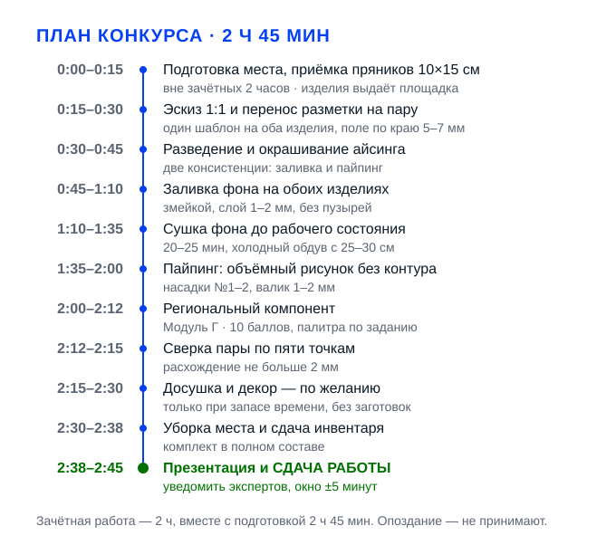
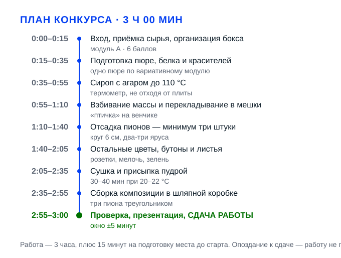
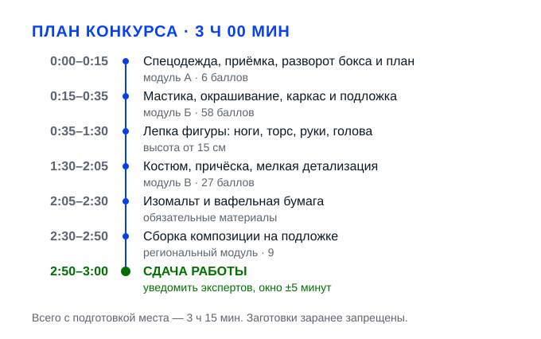

Мастер пищевого арт-декора (Р)
Задания ниже — официальные файлы «Абилимпикс» (источник: abilympics-russia.ru), разложенные по категориям. Решения написаны по тексту задания, регламенту и критериям оценки; в них указано, что именно проверяет эксперт.
Школьник
14–16 лет, базовый уровень заданияВыдержка из официального конкурсного задания: страницы, относящиеся к категории «Школьник» (стр. 9–12 источника).
Пошаговое решение
Задание категории «Школьники» короткое в формулировке, плотное по требованиям: площадка выдаёт два готовых пряника размером 10×15 см, и их нужно расписать айсингом идентично, в плоском двухмерном формате, по теме «Достопримечательности регионов России». Обязательное условие — частичное или полное применение техники «пайпинг»: объёмная роспись без предварительного контура, когда рисунок ложится рельефными каплями и валиками. На работу отводится два часа, с подготовкой места — 2 часа 45 минут. Сто баллов делятся так: организация и планирование — 6, соблюдение санитарных норм и безопасность технологического процесса — 58, художественное оформление — 26, региональный модуль — 10. Две трети оценки набирается не «красотой», а тем, как разведён айсинг, как держали мешок и как высушен слой. Заготовки заранее запрещены, дополнительный декор разрешён, но не обязателен и делается на площадке.

Задача 1. Организовать рабочее место и принять пряникиМодуль А · 6 баллов из 100
Первые пятнадцать минут конкурса почти не дают баллов напрямую, но определяют всё остальное. За модуль А «Организация и планирование рабочего процесса» разыгрывается 6 баллов из 100, и они складываются из трёх вещей: как участник вошёл в работу, как он принял выданные изделия и в каком состоянии держит инструмент. Пряники 10×15 см выдаёт площадка, и принять их нужно как продукт — осмотреть кромку, проверить геометрию, разложить на подложки, — и только после этого браться за айсинг. Порядок здесь важнее скорости: спецодежда и руки, затем изделия, затем инструмент, и ни один из этих шагов нельзя перескочить, потому что санитарный модуль стоит 58 баллов и оценивается с первой минуты.
Действие 1.1. Войти в работу по санитарным правилам
Шаг 1.1.1
Надеваем санитарную одежду целиком и до того, как подойдём к столу: фартук с нагрудником или куртку, косынку либо колпак, закрытую обувь на нескользящей подошве. Волосы убираем под головной убор полностью — и спереди, и на затылке, длинные пряди дополнительно закалываем: при росписи лицо наклонено над изделием, и выбившаяся прядь оказывается ровно над свежим айсингом. Рукава подворачиваем выше локтя или застёгиваем на манжете, чтобы ткань не касалась бортика пряника, а обувь проверяем на сухость: у стола всегда что-то пролито, и падение с мешком в руке — это травма.
Санитарный блок в этой компетенции самый весомый: модуль Б стоит 58 баллов из 100, и оценка начинается с внешнего вида участника. Айсинг — это яичный белок или сухая смесь на его основе, то есть среда, где микроорганизмы размножаются быстро, поэтому к работе с ним не допускают с распущенными волосами и в уличной одежде. Аккуратный вход в работу задаёт тон: с первой минуты видно, что участник понимает, где он находится.
Проверяем по трём точкам: волос не видно ни спереди, ни сзади, фартук застёгнут и не топорщится, обувь закрытая и сухая. Попросите волонтёра или соседа посмотреть со спины — сам участник затылок не видит, а именно там чаще всего остаётся открытая прядь. Рукав проверяем поднятой рукой: если ткань свисает ниже локтя, подворачиваем ещё раз.
Самая частая ошибка — надеть косынку «на макушку»: спереди всё аккуратно, сзади волосы выбиваются, и нарушение фиксируется в первые же минуты. Вторая — прийти в футболке с коротким рукавом, рассчитывая надеть фартук «потом»: время уходит из модулей, а запись в оценочном листе уже сделана.
Эксперт осматривает участника до старта, а затем следит за спецодеждой весь конкурс: пятно от красителя на груди к середине работы и сползшая косынка тоже считаются нарушением.
Шаг 1.1.2
Моем руки с мылом до запястий не меньше двадцати секунд, не забывая большие пальцы и промежутки между пальцами, затем вытираем одноразовым полотенцем и выбрасываем его сразу. Повторяем мытьё после каждого перерыва в работе, после того как поправили волосы или лицо, после уборки и после контакта с телефоном, который лучше убрать в сумку. Если работаем с пастеризованным белком или сухим айсингом, поверх чистых рук надеваем одноразовые перчатки по размеру: они не спасают от грязи, но защищают изделие от пота и кожного жира, а на белом айсинге любой отпечаток виден как тёмное пятно.
Гигиена рук — базовая часть модуля Б, а не формальность: айсинг наносится почти вплотную к изделию, и всё, что осталось на пальцах, может оказаться на поверхности, которую потом оценивают по чистоте. Белый фон не прощает ни пыли, ни отпечатков, ни касания окрашенным пальцем. Кроме того, вымытые руки и чистое полотенце видны эксперту без измерений и работают на общее впечатление.
Руки сухие, полотенце использованное и уже в мусоре, а не на столе. Проверить себя просто: если вы только что поправляли одежду или брали телефон, руки моем заново, даже если внешне они чистые. Перчатки надеваем на сухие руки, иначе они скользят и рвутся у ногтя.
Классика — протереть руки о фартук: визуально они сухие, но фартук становится переносчиком, и это видно. Вторая ошибка — помыть руки один раз в начале и считать вопрос закрытым: оценивается процесс, а не стартовое состояние. Третья — работать в перчатках, снятых с грязной руки или с разорванным пальцем: это хуже, чем работать без перчаток вовсе.
Эксперт смотрит на руки в течение всего конкурса и отдельно отмечает, меняются ли перчатки после уборки и не касается ли участник лица и волос во время росписи.
Шаг 1.1.3
Снимаем кольца, часы, браслеты, длинные серьги и цепочки; ногти коротко подстрижены, без лака и без покрытия. Длинные волосы дополнительно закалываем под косынку, потому что одного головного убора иногда мало. Часы на конкурсе не нужны: время объявляют эксперты, а взгляд на запястье отвлекает от линии, которую ведёт рука. Часы и браслет лучше оставить дома: на площадке их негде хранить, а в кармане они мешают работать и цепляются за фартук.
Под украшениями остаются загрязнения, которые не смываются обычным мытьём, а камень из кольца или звено цепочки могут попасть в айсинг и уехать вместе с ним на изделие. Для работы, которую потом рассматривают под лампой и фотографируют, посторонний предмет на поверхности — это не мелочь, а обнуление доверия ко всей работе. Лак и накладные ногти на категории «Школьники» проверяют на входе, и объяснение «я не снимаю» не принимается.
Руки осмотрены: украшений нет, ногти короткие, покрытия нет. Если кольцо снимается тяжело, снимайте его заранее, дома, а не в боксе за минуту до старта. Проверьте, не осталось ли резинки для волос на запястье — её тоже снимаем.
Оставить обручальное кольцо «оно же не мешает» — самое частое: балл снимается, и спор на эту тему заканчивается не в пользу участника. Вторая ошибка — накладные ногти с покрытием: под ними скапливается загрязнение, и это прямое нарушение санитарных требований.
Санитарный чек-лист эксперт проходит до старта и выборочно в процессе: руки, ногти, украшения — три отдельных взгляда за конкурс. Накладные ногти и лак он отмечает сразу, до того как участник возьмёт мешок.
Действие 1.2. Принять и осмотреть два пряника
Шаг 1.2.1
Получаем пряники у эксперта или волонтёра строго в выданном виде: две штуки, размер 10×15 см, одинаковой толщины и одинаковой степени пропечённости. Сразу кладём их на отдельные подложки или листы пергамента, подписываем карандашом на подложке «1» и «2» и не перекладываем без нужды: кромка у пряничного изделия хрупкая, а скол на углу придётся либо маскировать, либо объяснять. Руками берём только за торцы, не за лицевую сторону, — на покрытой глазурью поверхности остаётся жирный след, и айсинг на нём потом «садится» пятнами.
Приёмка — единственный момент, когда некомплект или брак ещё можно предъявить: после старта замену дают только через главного эксперта. Пряники выдаёт площадка, то есть до приёмки участник за них не отвечает, а после — отвечает, и скол, о котором не сказали сразу, будет считаться его недоработкой. Две подложки и подписи нужны ещё и потому, что изделия должны получиться идентичными, а перепутать их — значит потерять контроль над парой.
Считаем вслух: два изделия, оба 10×15 см, толщина одинаковая на просвет, лицевая сторона ровная. Сверяем кромку по всему периметру пальцем через пергамент: сколов, вмятин, трещин быть не должно. Если разница в размере или толщине видна на глаз, это повод сразу сказать эксперту.
Начать работать, не пересчитав изделия, — потом выясняется, что одно из них с трещиной по кромке, и время на переделку уже не остаётся. Вторая ошибка — взять пряник за лицевую сторону: остаётся жирный отпечаток, айсинг вокруг него отталкивается и ложится неровно, а исправить это на белом фоне невозможно.
Эксперт фиксирует, принял ли участник изделия осознанно: пересчитал, осмотрел, разложил. Это первая видимая часть модуля А, и она стоит дешевле, чем кажется, но именно она задаёт ритм.
Шаг 1.2.2
Осматриваем каждый пряник при боковом свете, наклоняя его к лампе: так видны вмятины, поднявшиеся пузыри теста и неровности, которые при прямом свете не заметны. Проверяем, насколько поверхность сухая: если она липкая или влажная, айсинг поплывёт и не схватится. Если на лицевой стороне есть углубление от противня, это не брак, а рельеф: его можно обыграть в композиции или закрыть плотным элементом рисунка.
Влажность поверхности — главный технический риск всей работы: айсинг на влажном прянике растекается, контур расползается, а внутри остаётся непросохший слой, который потом проступает мутным пятном. Осмотр при боковом свете экономит время: то, что не видно спереди, обязательно вылезет на фотографии и на оценке внешнего вида. Понимание рельефа нужно ещё и для эскиза — рисунок кладут так, чтобы самые важные линии шли по ровным участкам.
Поверхность сухая на ощупь через пергамент, без липкости, без капель конденсата. Вмятин и трещин нет либо они отмечены и учтены в эскизе. Наклоняйте изделие к свету под углом примерно 30 градусов — так рельеф читается лучше всего.
Взять пряник, который только что лежал в холодном помещении или рядом с влажной тряпкой: поверхность отпотевает, и айсинг ведёт себя непредсказуемо. Вторая ошибка — не заметить трещину и начать заливку через неё: айсинг уходит в трещину и проступает с обратной стороны.
Эксперт смотрит, проверял ли участник поверхность до начала росписи: на категории «Школьники» это один из признаков технологической грамотности. Отдельно отмечает, заметил ли участник неровности и учёл ли их в композиции.
Шаг 1.2.3
Организуем зону под изделия: справа или слева от рабочей руки, но не перед грудью, чтобы не дышать на свежий айсинг. Под каждый пряник — пергамент или силиконовый коврик, рядом — сухая салфетка для инструмента и вторая, чистая, для рук. Расстояние между изделиями не меньше 10 см: сохнущий айсинг не должен касаться соседнего пряника, а инструмент — падать на него.
Зона под изделия определяет, сколько раз вы будете перекладывать пряник. Каждое лишнее касание — это риск смазать ещё сырой участок, поэтому место выбирают один раз и дальше только поворачивают изделие на подложке. Раздельные салфетки — правило санитарии: одной вытирают носик мешка, другой руки, и путать их нельзя.
Пряники лежат на подложках, между ними свободные 10 см, обе салфетки на местах и не соприкасаются с изделиями. Проверьте, не попадает ли на зону пряников пар от раковины или чайника — если попадает, зону меняем.
Положить оба пряника вплотную «чтобы удобнее сравнивать»: при повороте они цепляют друг друга, и на одном остаётся след от второго. Вторая ошибка — поставить изделия под кондиционер или у открытого окна: поток воздуха сушит неравномерно, айсинг трескается по краю заливки.
Эксперт оценивает организацию пространства визуально: есть ли подложки, разделены ли зоны, хватает ли места для инструмента. Беспорядок в зоне изделий он читает как неготовность к работе с айсингом.
Действие 1.3. Подготовить инструмент и оборудование
Шаг 1.3.1
Раскладываем кондитерские мешки и насадки по назначению: два мешка под заливку с насадками №3–4, два мешка под пайпинг с насадками №1–2, отдельный мешок под белый айсинг для бликов. Плюс два запасных корнетика из пергамента — они спасают, если штатная насадка забилась пудрой или мешок лопнул по шву. Насадки проверяем на просвет: в отверстии не должно быть засохших крупинок, иначе линия пойдёт рваной.
Инструмент в этой работе определяет толщину линии: насадка №1 даёт линию около миллиметра, №2 — полтора-два, №3–4 — три-четыре и годятся для заливки и объёма. Если под рукой только одна насадка, пайпинг и заливка начинают конкурировать за один мешок, и на перезарядку уходит время из модуля В. Запасной корнетик — страховка на случай, когда до сдачи остаётся двадцать минут и переделывать уже нечем.
Каждая насадка лежит на своём месте, подписана или узнаваема, мешки промаркированы под цвет. Проверьте посадку насадки в мешок: она не должна болтаться, иначе при давлении айсинг пойдёт в обход и запачкает руки.
Взять насадку «на глаз», а потом обнаружить, что она даёт линию в три миллиметра вместо полутора: тонкие детали достопримечательности превращаются в кашу. Вторая ошибка — один мешок на все цвета: на перекраску и промывку уходит до десяти минут, а остатки старого цвета портят новый.
Эксперт смотрит на подготовленный инструмент до старта: сколько мешков, подобраны ли насадки, есть ли запас. Отсутствие насадки нужного номера он отмечает как неполную подготовку рабочего места.
Шаг 1.3.2
Проверяем весы: включить, дождаться нуля, взвесить пустую миску и обнулить тару, затем проверить на гирьке или на упаковке с известным весом. Точность нужна до десятых грамма: краситель в айсинг идёт зубочисткой, и «на глаз» цвет в двух партиях не совпадёт. Если работаем миксером, проверяем, что венчик сухой и чистый, а миска обезжирена — на жирной стенке белок не взбивается.
Айсинг — это рецептура, а не «насыпать пудры». Отклонение в сторону пудры делает массу густой и ломкой, в сторону белка — текучей, и заливка течёт через край. Весы и обнуление тары — единственный способ повторить консистенцию дважды, а на конкурсе приходится разводить айсинг минимум в двух состояниях, и оба должны получиться с первого раза.
Весы показывают ноль с пустой миской, венчик сухой, миска без жирного налёта. Капните воду на стенку миски: если она собирается каплей, а не растекается плёнкой, посуда обезжирена. И проверьте, что рядом с весами нет открытой ёмкости с водой: случайная капля меняет консистенцию всей партии.
Разводить айсинг «на глаз» и потом добавлять то пудру, то воду по кругу: масса перебивается, в ней появляются пузыри, и заливка сохнет пятнами. Вторая ошибка — работать грязным венчиком: посторонний жир убивает структуру, и айсинг не держит форму.
Эксперт может попросить показать, как участник отвешивает компоненты: аккуратность с весами — часть технологической оценки модуля Б. Работа «на глаз» и грязная посуда видны сразу и запоминаются до конца конкурса.
Шаг 1.3.3
Организуем свет и позу: лампа ставится слева или справа так, чтобы тень не падала на изделие, а глаза находились примерно в 40 см от поверхности. Подставку-вертушку ставим под рабочую руку, чтобы поворачивать пряник, а не тянуться через стол. Рядом кладём зубочистки для пузырей, сухую кисть для сметания крошек и стакан с водой для промывки насадок — но не ближе 20 см от изделий.
Блики на глянцевой глазури маскируют рельеф: при неправильном свете участник просто не видит, где линия просела. Поза с опорой локтя на стол даёт устойчивость кисти, а это прямо влияет на ровность линии пайпинга. Вертушка экономит движения: на прянике 10×15 см без неё рука несколько раз поднимается и опускается, и каждая такая пауза — риск капнуть.
Тень от руки не падает на рабочую зону, лампа не слепит, локоть стоит на столе, изделие на вертушке поворачивается без переноса. Проверьте наклон головы: если приходится сутулиться, поднимите изделие на подложку потолще.
Поставить воду вплотную к пряникам: брызги и пар попадают на айсинг, и он перестаёт схватываться. Вторая ошибка — работать стоя над изделием без опоры: линия дрожит, особенно на длинных прямых участках.
Эксперт отмечает, насколько уверенно участник управляет изделием: поворачивает его на вертушке или тянется через стол, есть ли устойчивая опора руки. По этим деталям видно, работал ли он с айсингом раньше.
Задача 2. Придумать композицию и разметить оба пряникаМодуль В · 26 баллов + модуль Г · 10 баллов
Художественное оформление стоит 26 баллов, региональный модуль — ещё 10, и оба набираются не кистью, а решением, принятым до первого касания айсинга. За двадцать минут нужно выбрать регион, свести достопримечательность к двум-трём читаемым силуэтам, уложить их в поле 10×15 см с припуском по краю и получить эскиз в натуральную величину. Дальше этот эскиз переносится на оба пряника одинаково: идентичность пары — прямое требование задания, и любые различия в разметке превратятся в различия в рисунке, которые уже не исправить. Трафарет из пергамента решает сразу две задачи: он держит композицию и он же служит линейкой, по которой проверяют симметрию.
Действие 2.1. Выбрать регион и свести сюжет к силуэтам
Шаг 2.1.1
Начинаем с региона: берём тот, который знаем хорошо, и называем вслух одну главную достопримечательность и один опорный элемент — например, для Башкортостана это памятник Салавату Юлаеву на скале и курай в качестве второго плана, для Карелии — Кижи с куполами, для Байкала — скала Шаманка. Если региональный модуль задаёт конкретный регион, работаем строго по нему и не пытаемся «улучшить» задание своим. Выбор фиксируем на бумаге одной фразой: что именно изображено и почему это узнаваемо.
Модуль Г на 10 баллов проверяет именно региональный компонент, то есть насколько сюжет привязан к месту, а не выглядит как универсальная открытка. Эксперт смотрит и на узнаваемость, и на умение объяснить выбор: одна точная фраза про объект работает лучше десяти общих слов о красоте родного края. Кроме того, заранее выбранный сюжет экономит время: импровизация в последние полчаса почти всегда заканчивается пустым фоном с одной линией.
Проверяем просто: покажите эскиз соседу по боксу и спросите, что изображено. Если он угадывает с первого раза, силуэт читается; если начинает перечислять варианты, композиция слишком общая. Второй признак — можно ли назвать объект одним словом: памятник, башня, мечеть, скала.
Взять сюжет, который невозможно нарисовать двумя-тремя силуэтами: многофигурную сцену или перспективу улицы — на площади 10×15 см это превращается в серое пятно. Вторая ошибка — «сборная солянка» из пяти достопримечательностей: региональный компонент есть, а читаемости нет, и модуль В теряет баллы.
Эксперт оценивает идею на презентации, но видит её и раньше — по эскизу на столе: наличие продуманного сюжета заметно сразу. Случайный набор символов он отличает от осмысленного выбора с первого взгляда.
Шаг 2.1.2
Раскладываем композицию в поле 10×15 см: главный объект занимает примерно две трети площади и стоит не по центру, а со сдвигом к одной из третей, второй план — ниже или выше, свободное поле по краю 5–7 мм. Пропорции держим такими, чтобы изделие можно было держать в руке: слишком крупный объект упирается в кромку, слишком мелкий теряется. Помним про ограничение задания: роспись плоская, в два измерения, поэтому тени и перспектива изображаются линиями и заливкой, а не объёмом.
Поле 10×15 см — это меньше ладони с растопыренными пальцами, и на нём работает только крупная форма: три элемента читаются, семь сливаются. Отступ 5–7 мм нужен технологически: по самому краю айсинг течёт вниз и образует наплыв, который портит и вид, и оценку аккуратности. Требование плоского двухмерного формата прямо записано в задании, поэтому объёмные скульптурные налепы здесь не спасают, а мешают.
На эскизе видны: свободное поле по периметру, один главный объект, один-два второстепенных, ни одна линия не касается края. Приложите эскиз к прянику — он должен совпасть по размеру без подгонки. Приложите эскиз к подложке и совместите углы: выход за габарит виден только так.
Нарисовать объект «в край», без полей: при заливке айсинг уходит за кромку, и изделие приходится либо подрезать, либо объяснять наплыв. Вторая ошибка — мелкая детализация в масштабе 1–2 мм: такие линии на прянике сливаются в грязный контур.
Эксперт смотрит эскиз вместе с готовой работой и сравнивает: сохранена ли композиция, не «поехала» ли она в процессе. Поле по краю и положение главного объекта он проверяет по линейке.
Шаг 2.1.3
Чертим эскиз в натуральную величину на листе пергамента: обводим подложку пряника, внутри отступаем по 6 мм и получаем рабочее поле. Рисуем простым карандашом тонко, без нажима, чтобы не продавить пергамент, и сразу размечаем, какие участки будут залиты каким цветом — по договорённости с палитрой. Готовый эскиз подписываем названием региона и объекта, чтобы на презентации не вспоминать формулировку.
Эскиз в масштабе 1:1 — это и шаблон, и контрольная карта: по нему переносят рисунок на оба изделия и по нему же проверяют идентичность перед сдачей. Цветовая разметка на бумаге экономит айсинг и нервы: участник видит, сколько участков и сколько цветов, а не решает это по ходу. Название региона на эскизе пригодится на презентации — модуль Г оценивают в том числе по умению объяснить выбор.
Эскиз совпадает с изделием по габаритам, все участки отмечены цветом, свободное поле видно. Проверьте, что карандашные линии не продавили пергамент: на просвет не должно быть рельефа. Отдельно проверьте, что подпись региона не перекрывает сам рисунок и не попадёт в зону заливки.
Рисовать эскиз на глаз, без обводки контура изделия: на прянике композиция обрезается по краю, и часть рисунка уходит в никуда. Вторая ошибка — рисовать жирным маркером: линии пачкают подложку и переносятся на пряник грязными штрихами.
Эксперт обращает внимание, есть ли у участника эскиз вообще: его отсутствие читается как импровизация и снимает баллы за планирование. По эскизу же он проверяет, совпадает ли задуманное с исполненным.
Действие 2.2. Перенести рисунок на оба пряника одинаково
Шаг 2.2.1
Кладём эскиз на пряник и совмещаем по углам, затем шилом, толстой иглой или зубочисткой прокалываем контурные линии через пергамент с шагом 4–5 мм. Проколы делаем строго вертикально и неглубоко, только по поверхности, не насквозь. На втором прянике повторяем тем же шаблоном, не сдвигая его: для этого оба изделия кладём на одну и ту же подложку по очереди или отмечаем угол совмещения карандашом.
Проколы — самый точный способ переноса без копирки и без краски: они не пачкают поверхность и остаются видны ровно столько, сколько нужно. Шаг 4–5 мм выбран потому, что точки такой частоты легко соединить линией от руки, а более редкие заставляют додумывать кривизну. Один и тот же шаблон на оба изделия — техническая гарантия идентичности, которую потом проверяют линейкой и на просвет.
Точки видны, идут по контуру ровно, не сбиваются с линии, шаблон не смещён ни на одном изделии. Проверьте углы: расстояние от прокола до кромки на первом и втором прянике должно совпадать в пределах 1 мм.
Прокалывать насквозь и с силой: на обратной стороне появляются бугорки, изделие трескается по кромке. Вторая ошибка — переносить рисунок на второй пряник «по памяти»: пара перестаёт быть парой, а идентичность — прямое требование задания.
Эксперт может сравнить оба изделия на просвет и по положению ключевых элементов: смещение в 3–4 мм уже заметно. Проколы насквозь он находит по бугоркам на обратной стороне.
Шаг 2.2.2
Проявляем разметку: припудриваем поверхность тонким слоем сахарной пудры или крахмала через ситечко, стряхиваем излишки и аккуратно снимаем шаблон. Проколы проявляются белыми точками, и по ним рисуем контур сухой мягкой кистью с минимальным количеством пищевого красителя либо сразу ведём айсинг по точкам. Если рисовать красителем, он должен быть светлее основного на два тона, чтобы потом перекрылся заливкой.
Пудра делает проколы видимыми, не оставляя жирных следов, которые отталкивают айсинг. Слабый контур нужен потому, что заливка всё равно перекроет его, а вот тёмная линия под светлым айсингом проступит серым. Работа по видимому контуру идёт в два раза быстрее: не приходится останавливаться и всматриваться в отдельные точки.
Контур читается, линии непрерывные, пудры на поверхности не осталось — она стряхнута, а не втёрта. Проведите пальцем в перчатке рядом с линией: на нём не должно быть белого налёта. И убедитесь, что пудра не осталась в углублениях проколов: там она комкуется и мешает заливке.
Оставить пудру слоем: айсинг на ней не схватывается и сползает при сушке. Вторая ошибка — обвести контур тёмным красителем «чтобы видно было»: потом он проступает через заливку и выглядит как грязь. Третья ошибка — стряхивать пудру рукой в перчатке: она размазывается по фону и оставляет белые полосы.
Эксперт смотрит чистоту переноса: размазанный контур и следы пудры видны сразу и снижают оценку аккуратности. Отдельно отмечает, стряхнута ли пудра до начала заливки.
Шаг 2.2.3
Сверяем оба изделия до начала заливки: ставим их рядом, смотрим при боковом свете и сравниваем положение трёх-четырёх ключевых точек — верха главного объекта, его основания, края второго плана. Если разница больше 2 мм, стираем линию сухой салфеткой и переносим заново, пока айсинг ещё не лёг. Дальше изделия не переставляем: фиксируем их положение на подложке и поворачиваем только на вертушке.
Идентичность пары — это то, что оценивают в модуле В наравне с техникой: два изделия должны читаться как одно, а не как «работа и её черновик». Проверка на этом этапе стоит две минуты, а исправление после заливки — уже невозможно без переделки всего. Фиксированное положение подложек нужно, чтобы в процессе не перепутать изделия и не нанести элемент не туда.
Ключевые точки совпадают в пределах 1–2 мм, рисунок на обоих изделиях смотрится одинаково при наложении взгляда. Проверьте, что подложки не съезжают: отметьте их положение карандашом на столе. И проверьте, что на подложках не осталось карандашных меток от эскиза.
Начать заливку с разницей в композиции, надеясь «выровнять в процессе»: заливка фиксирует положение, и разница только увеличивается. Вторая ошибка — повернуть одно изделие и работать с ним отдельно, забыв про парность.
Эксперт сравнивает изделия дважды: в середине работы, когда видно положение элементов, и на сдаче — итоговое сравнение идёт по фотографии пары. Расхождение в ключевых точках он измеряет линейкой.
Задача 3. Развести айсинг двух консистенцийМодуль Б · 58 баллов из 100
Технологический процесс — самая дорогая часть задания: 58 баллов из 100 разыгрываются в модуле Б, и айсинг здесь главный объект оценки. Нужны две рабочие консистенции: заливочная, которая течёт лентой и разравнивается сама, и пайпинговая, которая держит форму и ложится рельефом без контура. Обе разводятся из одной базы, и разница между ними — буквально несколько капель воды или ложка пудры, поэтому работают весами и тестом на пергаменте, а не «на глаз». Ошибка в консистенции не исправляется на прянике: жидкий айсинг стекает за край, густой рвёт линию и забивает насадку.
Действие 3.1. Смешать базу айсинга
Шаг 3.1.1
Отвешиваем компоненты на весах: на 100 г сахарной пудры тонкого помола — примерно 20–25 г пастеризованного яичного белка или восстановленной сухой смеси по инструкции на упаковке. Пудру просеиваем через сито прямо в миску, чтобы не было комков, затем добавляем белок и перемешиваем лопаткой от центра к краям, а не круговыми взбивающими движениями. Миксер включаем только на самой низкой скорости и не дольше минуты: задача — получить однородную массу, а не взбить её в пену.
Пропорция задаёт всё дальнейшее: пудра и белок в указанном соотношении дают базу, из которой легко получить и заливку, и пайпинг, добавляя по капле воду или пудру. Просеивание убирает комки, которые потом застревают в насадке №1 и рвут линию в самый неподходящий момент. Воздух, взбитый в массу, выходит на поверхность пузырями уже на изделии, и прокалывать их в белом фоне — потеря времени и риск испортить глянец.
Масса однородная, без комков и без видимых пузырей, цвет ровный кремово-белый. Проведите лопаткой по дну: на ней не должно оставаться сухой пудры. Консистенция — как густая сметана, с лопатки стекает медленно, лентой.
Взбивать миксером на высокой скорости «чтобы лучше размешалось»: масса насыщается воздухом, на изделии встают пузыри, а заливка сохнет неровно. Вторая ошибка — сыпать пудру в белок без весов: на второй партии консистенция не повторится, и цвет ляжет пятнами.
Эксперт смотрит, как участник смешивает: просеивает ли пудру, работает лопаткой или миксером, держит ли весы под рукой. Масса с комками или взбитой пеной видна уже в миске.
Шаг 3.1.2
Доводим массу до заливочной консистенции: добавляем воду чайной ложкой, буквально по 3–5 мл, каждый раз перемешивая и проверяя тестом. Тест простой: поднимаем лопатку — масса должна стекать непрерывной лентой и исчезать в миске примерно за 10–15 секунд, а след от зубочистки на поверхности выравнивается за 12–15 секунд. Если след держится дольше, добавляем ещё немного воды; если исчезает мгновенно, подсыпаем пудру.
Заливочная консистенция — это единственная, которая сама разравнивается в ровный глянцевый слой: именно она даёт тот фон, на котором виден пайпинг. Цифры 10–15 секунд взяты из практики и легко проверяются на месте: слишком густая заливка не растекается и оставляет полосы от мешка, слишком жидкая уходит за контур и течёт к краю. Тест с зубочисткой занимает пять секунд, а спасает полчаса переделки.
След от зубочистки выравнивается за 12–15 секунд, лента с лопатки непрерывная, поверхность в миске глянцевая и ровная. Капните массу на пергамент: капля должна расплыться в круг примерно 2 см и остановиться, а не растекаться дальше.
Сделать заливку «погуще, чтобы не потекла»: она ложится буграми, не разравнивается, и фон получается с полосами. Вторая крайность — развести до состояния воды: айсинг уходит за контур, края пряника пачкаются, слой сохнет тонким и просвечивает.
Эксперт проверяет консистенцию по тому, как айсинг ведёт себя на изделии: ровный слой без полос — признак правильной заливки. Тест с зубочисткой он может попросить повторить.
Шаг 3.1.3
Отделяем часть массы под пайпинг и доводим её до «стоячей» консистенции: подсыпаем просеянную пудру по столовой ложке, перемешивая после каждой. Готовность проверяем пиком: поднятая лопаткой масса образует пик высотой около сантиметра, который держится 8–10 секунд и только потом медленно оседает. Из мешка такая масса выходит непрерывной нитью, не капает самотеком и не растекается по поверхности после нанесения.
Пайпинг по заданию — объёмная роспись без контура, и объём получается именно за счёт густоты: масса должна ложиться валиком и оставаться на месте. Если она жиже, капля расплывается, рельеф исчезает, а рисунок превращается в плоские пятна, за которые модуль В не даёт баллов. Пик, который держится 8–10 секунд, — это ровно та граница, после которой масса ещё проходит через насадку №2, но уже не течёт.
Пик держится, при наклоне ложки масса не стекает струёй, а сползает комком. Проведите пробную линию на пергаменте: она должна остаться валиком высотой 1–2 мм и не расплыться за минуту. И проверьте массу через минуту: если на поверхности выступила вода, консистенция расслоилась.
Оставить пайпинг на заливочной консистенции: линия течёт, элементы сливаются, объёма нет, и половина замысла пропадает. Вторая ошибка — пересушить массу: она рвёт линию, забивает насадку и выходит комками.
Эксперт смотрит на пробную линию и на поведение мешка: непрерывность и высота валика видны без измерений. Жидкая масса выдаёт себя каплей, которая расползлась за полминуты.
Действие 3.2. Окрасить айсинг и зарядить мешки
Шаг 3.2.1
Красим массу гелиевыми или пастообразными красителями, а не жидкими: гелиевый краситель не меняет консистенцию, и её не приходится снова доводить пудрой. Дозируем зубочисткой: окунаем кончик и размешиваем, добавляя по крупинке, пока цвет не станет на полтона интенсивнее нужного — айсинг после высыхания светлеет. Для пастельных тонов на 100 г массы хватает 2–3 «зубочистки» красителя, для насыщенных — до 8. Каждый цвет мешаем в отдельной миске и записываем количество капель, чтобы повторить оттенок для второго пряника.
Жидкий краситель добавляет воду и рушит консистенцию, а гель держит её стабильной — это принципиально для пайпинга, где важна каждая капля. Учёт капель нужен для идентичности пары: два пряника красят из одной партии, но если массу приходится доколеровать, без записи оттенок уже не повторить. Высыхание светлее на полтона — известный эффект, и без поправки на него готовое изделие получается бледнее задуманного.
Цвет на пробной капле на пергаменте совпадает с эскизом, оттенок ровный, без крапин. Проверьте количество цветов: их не должно быть больше, чем предусмотрено заданием и вашей палитрой, — обычно три-четыре плюс белый.
Красить «на глаз» жидким красителем: масса потекла, пришлось добавлять пудру, цвет стал бледнее, и вся партия ушла в брак. Вторая ошибка — намешать пять-шесть оттенков: на прянике 10×15 см они не читаются, а времени на зарядку мешков уходит вдвое больше.
Модуль Г может ограничивать количество цветов для окрашивания айсинга: эксперт проверяет палитру на соответствие заданию. Лишний оттенок он считает по всей работе, а не по отдельному участку.
Шаг 3.2.2
Собираем мешок: отрезаем кончик на 1,5–2 см, вставляем насадку и закручиваем гайку, затем выворачиваем верхний край мешка наружу и заполняем на две трети, не больше. Собираем массу «плунжером» — прогоняем её вниз пальцами от края к насадке, выдавливая воздух, и только потом закручиваем или зажимаем верх скрепкой. Мешок держим за верхнюю часть, а не за середину: иначе при давлении он раскрывается сверху и айсинг идёт через край.
Воздух в мешке — главная причина рваных линий и «плевков» на белом фоне: пузырь выходит рывком, и на изделии остаётся клякса, которую уже не убрать. Заполнение на две трети даёт контроль над давлением и не утяжеляет кисть, а незакрученный верх при работе раскрывается в самый неподходящий момент. Правильный хват — это и точность линии, и меньше усталости: за два часа рука проходит большой объём работы.
При первом нажатии масса идёт ровно, без рывков и без воздуха. Проверьте на пергаменте: линия непрерывная, одинаковой толщины по всей длине, край ровный. Мешок не пачкает руку у основания. И проверьте, что гайка насадки затянута: при давлении она не должна проворачиваться.
Набить мешок до самого верха: давление не контролируется, верх раскрывается, айсинг течёт по руке и капает на изделие. Вторая ошибка — не выпустить воздух: первый сантиметр линии всегда с пузырём. Третья ошибка — набивать мешок ложкой от краёв: масса забивается в углы и выходит рывками.
Эксперт видит, как заряжен мешок: заполнен ли наполовину, выпущен ли воздух, держит ли участник его правильно. Мешок, текущий через верх, он отмечает как грубую ошибку техники.
Шаг 3.2.3
Проверяем каждый мешок пробной линией на пергаменте: две параллельные линии, круг, точка. Смотрим три вещи — толщину (для пайпинга 1–2 мм, для заливки 3–4 мм), непрерывность и то, держит ли масса высоту. Мешки подписываем маркером по цвету или ставим на подставку в порядке работы, чтобы не искать нужный цвет в спешке. Пробные линии оставляем рядом: по ним удобно сверять цвет после сушки.
Пробная линия — это единственная возможность увидеть поведение массы до того, как она окажется на изделии, и стоит она десять секунд. Подписанные мешки экономят время и нервы: на пике работы, когда до сдачи двадцать минут, искать «тот самый голубой» некогда. Оставленный пробник позволяет сравнить цвет до и после сушки и, если нужно, чуть скорректировать следующий замес.
Линии ровные, одинаковой толщины, без разрывов и капель; масса держит валик; цвет на пробнике соответствует эскизу. Пальцем в перчатке проверьте высоту линии: она должна чувствоваться, а не быть плоской.
Начинать сразу с изделия, минуя пробник: первая линия почти всегда с дефектом и остаётся на прянике. Вторая ошибка — зарядить все мешки одним цветом «на потом»: порядок работы путается, и на пайпинг уходит лишние десять минут.
Эксперт смотрит на наличие пробных линий на пергаменте: это признак того, что участник контролирует процесс, а не надеется на удачу. По пробнику он сверяет цвет после сушки.
Задача 4. Расписать пряники: фон, пайпинг и региональный компонентМодуль В · 26 баллов + модуль Б · 58 баллов + модуль Г · 10 баллов
Основная работа занимает примерно половину конкурсного времени и задевает сразу три модуля: заливка и пайпинг оцениваются в технологическом блоке на 58 баллов, композиция и аккуратность — в художественном на 26, региональный элемент — отдельно на 10. Порядок здесь диктует технология: сначала ровный фон в один-два цвета, потом сушка до состояния «не липнет», и только затем пайпинг, потому что объёмная линия на сыром фоне проседает и расплывается. Региональный компонент добавляется в последнюю треть работы, когда основные силуэты уже стоят: он должен читаться как часть композиции, а не как нашлёпка в углу.
Действие 4.1. Залить фон на обоих изделиях
Шаг 4.1.1
Начинаем с границ: мешком с насадкой №3 обводим те участки, которые будут залиты, по контуру разметки, отступив от кромки изделия 5–6 мм. Линию ведём от себя, поворачивая подложку, а не руку, и держим насадку под углом 45 градусов на расстоянии 2–3 мм от поверхности. Обводку делаем в два приёма на каждой линии — сначала «на весу» проходим участок, чтобы поймать направление, потом касаемся поверхности, — так линия не дрожит на старте.
Обводка нужна как барьер: без неё заливка растекается за границы участка, и граница получается волнистой. Отступ 5–6 мм от кромки — это запас на растекание: даже аккуратный слой уходит на 1–2 мм, а по самому краю айсинг обязательно даёт наплыв. Приём «на весу» экономит нервы: рука запоминает траекторию, и касание получается уверенным с первой попытки.
Линия непрерывная, одинаковой толщины, идёт параллельно кромке с равным отступом. Замкнутость проверяем по кругу: в местах стыка не должно быть разрыва или утолщения. Поверхность под линией не продавлена.
Обвести «как получится», с разрывами: заливка находит разрыв и вытекает за контур, пятно уходит к краю изделия и остаётся навсегда. Вторая ошибка — вести линию, поворачивая руку вокруг изделия: на повороте кисть теряет опору, и линия идёт восьмёркой.
Эксперт смотрит ровность и замкнутость контура: именно по нему видно, владеет ли участник мешком. Разрыв в обводке он находит по потёку, который уже ушёл к кромке.
Шаг 4.1.2
Заливаем участок «змейкой»: ведём айсинг параллельными полосами с шагом 8–10 мм, не отрывая мешок, пока не заполним площадь, а затем разравниваем зубочисткой в одном направлении — от середины к краям, легко касаясь поверхности. Пузыри, которые выступили, сразу прокалываем кончиком зубочистки и слегка покачиваем, чтобы воздух вышел. Работаем быстро и без остановок: айсинг схватывается по краю за минуту-полторы, и на подсушенном слое полосы уже не сойдутся.
Полосы с шагом 8–10 мм схлопываются сами, потому что масса растекается на 4–5 мм в каждую сторону; при более редком шаге остаются борозды, которые потом видны как полосы. Разравнивание в одном направлении не даёт «мраморного» рисунка от встречных потоков. Пузыри обязательно убирать до схватывания: после сушки они превращаются в кратеры, и фон выглядит рябым, а на белом это особенно заметно.
Слой ровный, глянцевый, без полос, кратеров и пузырей; толщина одинаковая по всей площади, край держит форму и не наплывает на кромку. Наклоните изделие к свету — при боковом освещении полосы видны сразу.
Заливать «по каплям» или с редким шагом: остаются борозды, слой сохнет неравномерно и трескается по линии стыка. Вторая ошибка — разравнивать круговыми движениями: на поверхности появляются завихрения и мутные разводы.
Эксперт оценивает фон по глянцу и ровности: полосы и пузыри — видимый дефект технологического блока. Смотрит он изделие под наклоном, при боковом свете.
Шаг 4.1.3
Повторяем заливку на втором изделии в том же порядке и тем же мешком, пока первый сохнет: так расход и толщина совпадают, а цвет гарантированно одинаковый. Если на первом прянике какой-то участок остался недолит, добираем его сразу, не дожидаясь сушки, иначе на месте долива останется ступенька. Край участка после заливки проверяем на просвет: слой не должен выходить за обводку.
Одинаковый порядок и один мешок — это техническая гарантия идентичности пары, которая прямо требуется заданием: разные партии айсинга дают разный оттенок и разную толщину. Долив по сырому краю сливается незаметно, а по подсушенному уже нет: граница остаётся навсегда. Просвет показывает наплывы, которые спереди маскируются глянцем.
Оба изделия залиты с одинаковой толщиной и одинаковым оттенком, участки замкнуты, края ровные. Сравните их рядом: разницы в цвете быть не должно, допустимое расхождение — не больше полутона. И проверьте, что на границе участков нет утолщения: там слой сохнет дольше и потом трескается.
Залить второй пряник другой партией айсинга или позже, «когда первый высохнет»: цвет и толщина расходятся, пара перестаёт быть парой. Вторая ошибка — оставить недолитый участок на потом: после сушки он виден как отдельная заплатка.
Эксперт ставит изделия рядом уже на этом этапе: разница в тоне фона бросается в глаза при первом же взгляде. Толщину слоя он сравнивает по краю заливки.
Действие 4.2. Высушить фон до рабочего состояния
Шаг 4.2.1
Сушим на воздухе при 20–22 градусах и влажности не выше 60 процентов, не накрывая изделия ничем: плёнка и полотенце создают конденсат, и поверхность становится мутной. Полная сушка фона занимает 20–25 минут, ускорять её можно феном в режиме холодного воздуха с расстояния 25–30 сантиметров, водя соплом вдоль поверхности, а не в одну точку. Горячий воздух не используем: сахар от него плавится и темнеет, а верхний слой растрескивается.
Пайпинг на непросохшем фоне проседает: объёмная линия уходит в сырой слой и через полчаса превращается в плоское пятно, а весь эффект техники теряется. Холодный обдув снимает влагу с поверхности и не меняет структуру сахара, тогда как горячая струя локально перегревает глазурь. Двадцать минут сушки — это ещё и время на подготовку второго этапа: мешки под пайпинг, пробные линии, порядок цветов.
Поверхность не липнет к сухому пальцу в перчатке, глянец не снимается, при лёгком постукивании звук глухой, а не «сырой». Цвет не темнеет и не мутнеет. Проверяйте у края участка: именно там слой тоньше и сохнет быстрее всего.
Поставить изделия под горячий фен «чтобы быстрее»: глазурь темнеет по краям и растрескивается сеткой, которую уже не исправить. Вторая ошибка — сушить в холодильнике: при возврате в тепло на поверхности выступает конденсат, и белый айсинг покрывается матовыми пятнами.
Эксперт проверяет готовность фона перед пайпингом: след от касания на сыром слое он фиксирует как дефект. Помутневший глянец он относит к нарушению режима сушки.
Шаг 4.2.2
Проверяем готовность сразу на обоих изделиях: касаемся тыльной стороной ногтя в незаметном месте у кромки, затем смотрим на просвет, нет ли непрозрачных влажных участков. Если фон схватился, переходим к пайпингу; если нет — добавляем ещё 5–7 минут, а пока раскладываем мешки в порядке работы: сначала дальний план, потом ближний. Сырой фон не подрезаем и не трогаем инструментом: любое касание оставляет вмятину.
Разница в готовности двух изделий — обычное дело, если заливали их с интервалом: один сохнет быстрее. Продолжать работу, когда второй ещё сырой, нельзя, потому что пайпинг на нём потеряет рельеф, а пара должна получиться идентичной. Проверка ногтем у кромки безопасна: там слой тонкий, и даже след не виден на готовом изделии.
Оба изделия готовы, вмятин от проверки нет, мешки разложены по порядку. Ноготь не оставляет блестящего следа, поверхность звучит глухо. И убедитесь, что второй пряник не остыл сильнее первого: разница температур даёт разную скорость схватывания.
Начать пайпинг на одном изделии, пока второе сохнет: разница в рельефе будет видна на сравнении. Вторая ошибка — проверять готовность подушечкой пальца: остаётся жирный отпечаток, и айсинг вокруг него потом отталкивается.
Эксперт смотрит на последовательность: сушка, проверка, затем роспись — а не всё сразу. Вмятину у кромки он отмечает как след небрежной проверки готовности.
Действие 4.3. Нанести объёмный рисунок техникой пайпинг
Шаг 4.3.1
Ставим руку: локоть на столе, кисть опирается на подставку или на край подложки, мешок держим как ручку, верх зажат между большим и указательным пальцем. Насадку ведём под углом 45 градусов на расстоянии 3–5 мм от поверхности, давление даём предплечьем, а не пальцами, и движемся с постоянной скоростью — примерно 2 см в секунду. Изделие поворачиваем левой рукой через вертушку, чтобы сложные участки всегда шли «от себя».
При давлении пальцами линия получается с утолщениями на старте и на поворотах, а на длинной прямой рука устаёт уже через десять минут. Расстояние 3–5 мм и угол 45 градусов дают валик, который ложится на поверхность, а не падает сверху: падающая капля расплывается, и объём пропадает. Постоянная скорость — единственный способ получить одинаковую толщину по всей длине.
Линия ровная по толщине, без утолщений на старте, валик держит высоту 1–2 мм. Проведите пробную линию 10 см на пергаменте: отклонение от начала к концу — не больше трети толщины. И проверьте, что рука не устала за первые две линии: если устала, измените хват, пока не поздно.
Держать мешок строго вертикально и давить пальцами: на старте выходит клякса, дальше линия тонкая, и элемент выглядит неаккуратно. Вторая ошибка — вести линию на себя, не поворачивая изделие: на подходе к корпусу кисть теряет опору и линия уходит в сторону.
Эксперт наблюдает за постановкой руки: опора, угол, скорость — это и есть техника пайпинга, за которую идёт основная часть технологических баллов. Дрожащую линию он связывает с отсутствием опоры.
Шаг 4.3.2
Наносим элементы в порядке от дальнего плана к ближнему и от светлых тонов к тёмным: сначала небо и фон неба, затем силуэт объекта, затем детали и линии тени. Каждый следующий слой ложится только на подсушенный предыдущий — 3–5 минут холодным феном или на воздухе. Светлые участки не закрываем тёмной массой заранее: исправить тёмное поверх светлого невозможно, а наоборот — легко.
Порядок «дальний план — ближний» даёт правильное перекрытие: ближний объект закрывает край дальнего, и композиция читается как пространство, а не как набор пятен. Правило «светлое раньше тёмного» — это страховка: белый и пастель можно перекрыть любым цветом, а тёмный уже не перекрыть ничем. Подсушка между слоями нужна, чтобы нижний слой не размягчился и не смешался с верхним.
Видно, что слои лежат друг на друге без смешивания, границы чистые, тёмные элементы не «поплыли». Проверьте на просвет: под тёмным участком не должно быть размытого светлого пятна — это признак того, что нижний слой был сырым.
Нанести тёмный силуэт первым, а потом пытаться положить светлые детали: они утопают в тёмном и сереют. Вторая ошибка — работать по сырому нижнему слою: цвета смешиваются, края становятся грязными, и вся аккуратность пропадает.
Эксперт смотрит на чистоту границ между цветами: смешанные края — типичный дефект, который снимает баллы за оформление. Порядок нанесения он восстанавливает по перекрытиям.
Шаг 4.3.3
Создаём объём: вместо контура рисунок собираем из капель и коротких валиков, накладывая их с наклоном, как черепицу, — так получается рельеф без обводки. Крупные массы (купол, скала, корпус) начинаем с одной плотной капли, затем наращиваем по краю, прижимая насадку к массе и слегка приподнимая её на выходе. Каплю ставим с короткой паузой: нажали, отсчитали «раз-и», оторвали с подхватом вверх — тогда на конце остаётся пик, который потом можно использовать как блик или деталь.
Пайпинг по определению в задании — объёмный рисунок без контура, поэтому каждая линия должна быть валиком, а не штрихом. Наложение «черепицей» даёт естественное распределение объёма: тень сама образуется на стыке капель, и рисунок становится читаемым при боковом свете. Пауза при постановке капли и отрыв с подхватом — приём, который отличает аккуратную точку от кляксы с хвостом.
Рельеф чувствуется пальцем в перчатке, рисунок читается при наклоне изделия к свету, но не выглядит бугристым. Капли одинакового размера в пределах одного элемента, пики на конце ровные, без «хвостов».
Размазывать массу насадкой по поверхности, как кистью: валик превращается в плоское пятно, и объём исчезает. Вторая ошибка — отрывать насадку резко в сторону: на конце остаётся крючок, а рядом — капля.
Эксперт специально наклоняет изделие к свету: наличие рельефа — обязательное условие задания, его отсутствие снижает оценку модуля В. Плоские пятна вместо валиков он видит сразу.
Шаг 4.3.4
Прорабатываем детали: окна и арки — короткими валиками белого, блики — точками в один-два миллиметра, тени — тонкой линией насадкой №1 вдоль нижней кромки объекта. Мелкие элементы делаем в последнюю очередь и только на полностью просохшем слое, иначе насадка продавливает фон. Надпись с названием региона, если она предусмотрена композицией, ведём печатными буквами высотой 4–5 мм, предварительно наколов её контур по шаблону.
Детали — то, что отличает работу от заготовки: несколько точек-бликов и одна линия тени дают объекту объём и узнаваемость при минимальном риске. Порядок «крупное — мелкое» защищает готовое: любая правка крупного элемента после деталей уничтожит час работы. Надпись по шаблону, а не от руки, даёт ровный ряд букв, а читаемая надпись прямо работает на региональный модуль.
Детали одинаковы на обоих изделиях, блики стоят в одних и тех же местах, надпись читается без напряжения. Проверьте с расстояния вытянутой руки: мелкие элементы не должны сливаться в точки. И проверьте, что мелкие точки не сливаются с фоном по цвету при боковом свете.
Добавлять детали на сырой слой: насадка проваливается, фон вспучивается, и вокруг элемента остаётся вмятина. Вторая ошибка — писать надпись от руки без разметки: буквы плывут, и вместо названия региона получается нечитаемый ряд.
Эксперт рассматривает изделие вблизи, на расстоянии 30–40 см: качество мелких элементов показывает уровень владения техникой. Блики и тени он проверяет на симметричность.
Действие 4.4. Внести региональный компонент
Шаг 4.4.1
Добавляем элемент, привязанный к выбранному региону: для Башкортостана это стилизованный курай, солярный знак из башкирского орнамента, силуэт горы или волна реки; для северных регионов — еловая ветвь, для южных — виноградная лоза. Элемент вписываем в композицию как часть сюжета: орнаментальная полоса идёт по нижнему полю, курай — как второй план рядом с главным объектом. Отдельно в углу его не ставим: задача не «поставить знак», а показать место.
Модуль Г оценивается в 10 баллов и проверяет именно привязку к региону, поэтому элемент должен быть узнаваемым и объяснимым: на презентации участник называет, что это и почему. Вписанный в сюжет орнамент усиливает композицию, а приклеенный в угол — выглядит как обязательная галочка и снижает впечатление от работы. Стилизация допустима и даже предпочтительна: на площади 10×15 см сложный этнографический узор не читается.
Элемент читается как часть сюжета, узнаётся без объяснений, не спорит с главным объектом по размеру. Проверьте: если убрать главный объект, орнамент всё равно должен смотреться на своём месте. И проверьте, что элемент не перекрывает главный объект больше чем на треть.
Нарисовать орнамент мелкой сеткой по всему полю: он превращается в шум и забивает достопримечательность. Вторая ошибка — использовать символ, который участник не может объяснить: на презентации это выглядит как случайная картинка, и баллы модуля Г теряются.
Эксперт модуля Г смотрит на элемент и слушает объяснение: соответствие региону и осмысленность выбора. Элемент в углу без связи с сюжетом он оценивает ниже вписанного в композицию.
Шаг 4.4.2
Ограничиваем палитру регионального элемента: два-три цвета плюс белый, причём один из них — цвет фона или близкий к нему, чтобы элемент не вырывался из композиции. Если региональный модуль задаёт количество цветов для окрашивания айсинга, считаем их по всей работе и не выходим за рамку. Орнаментальную полосу ведём ритмично: одинаковый шаг элементов, одинаковая толщина линии, ровный отступ от кромки 6–7 мм.
Ограниченная палитра — признак профессиональной работы: на маленьком изделии каждый лишний цвет дробит внимание. Ритм в орнаменте важнее сложности узора: сбитый шаг виден сразу, даже если сам рисунок простой. Подсчёт цветов по всей работе нужен потому, что региональное задание может ограничивать палитру, и лишний оттенок в углу стоит баллов.
Количество цветов совпадает с заданием, шаг орнамента одинаковый (проверьте линейкой: 8–10 мм между элементами), отступ от кромки ровный. Палитра читается как единая. И проверьте, что соседние оттенки различаются по светлоте, а не только по тону.
Добавить «для красоты» пятый-шестой цвет: работа становится пёстрой, а при ограничении палитры это прямое нарушение регионального задания. Вторая ошибка — вести орнамент с разным шагом: полоса выглядит небрежной и выдаёт отсутствие разметки.
Эксперт проверяет палитру на соответствие заданию — это измеримый критерий, а не впечатление. Количество цветов он считает по всей работе, включая фон и надпись.
Шаг 4.4.3
Сверяем региональный элемент на обоих изделиях: положение, размер, наклон и количество повторов должны совпадать. Если элементы различаются, исправляем сразу, пока слой сырой: снимаем лишнее сухой зубочисткой и наносим заново по разметке. После исправления просушиваем участок холодным воздухом 3–4 минуты и только потом продолжаем. Проверку делаем сразу после нанесения элемента, пока масса ещё блестит: это окно длится не больше двух-трёх минут.
Идентичность пары — сквозное требование задания, и региональный элемент входит в неё наравне с главным объектом: разное количество повторов орнамента сразу выдаёт небрежность. Правка по сырому возможна, по сухому — уже нет, поэтому проверку делают сразу после нанесения. Просушка после правки нужна, чтобы новый слой не размягчил соседние.
Оба изделия совпадают по положению элемента в пределах 1–2 мм, количество повторов одинаковое, наклон совпадает. Сравните, поставив изделия рядом и наклонив к свету. И проверьте наклон: на паре он должен читаться одинаково при взгляде с одной точки.
Отложить сверку «на потом»: к моменту, когда обнаружатся различия, айсинг уже сухой, и исправить можно только снятием слоя вместе с фоном. Вторая ошибка — исправлять мокрым пальцем: размазывается краситель и остаётся пятно.
Эксперт сравнивает изделия на сдаче: пара оценивается как одна работа, и различия в орнаменте заметны сразу. По его просьбе участник объясняет, почему элементы стоят именно так.
Действие 4.5. Решить, нужен ли дополнительный декор, и поставить его
Шаг 4.5.1
К моменту, когда пайпинг закрыт, смотрим на часы и решаем честно: если до сдачи остаётся меньше получаса и фон ещё не просох, дополнительный декор не берём вовсе — задание его не требует, а недоделанный элемент снимет больше, чем добавит. Если резерв есть, выбираем одну вещь из разрешённого набора: мастику для моделирования, глазурь, вафельную или рисовую бумагу. Всё это делается только на площадке: привезённые заранее фигурки, вырубленные листья и подсушенные элементы использовать нельзя, заготовки запрещены.
Дополнительный декор в задании помечен как необязательный, а значит сам по себе баллов не приносит: он работает на художественное оформление, где весь модуль стоит 26 баллов, и с равным успехом может усилить работу или разрушить её. Правило «никаких заготовок» записано в задании прямо, поэтому привезённая из дома фигурка из мастики — это не запасной вариант, а нарушение процедуры, за которое снимают баллы по модулю Б.
На часах остаётся не меньше 25–30 минут до окна сдачи, обязательные элементы — фон, пайпинг и региональный компонент — закрыты и просушены, выбранный декор лежит на столе в виде сырья, а не готовой фигурки. Если хотя бы одно условие не выполняется, декор отменяем и переходим к досушке: сданная без декора работа стоит дороже недоделанной.
Взяться за мастику «пока айсинг сохнет» и не рассчитать время: раскатка, вырубка и приклейка съедают 15–20 минут, а в итоге элемент ставят на сырой фон и вдавливают его пальцем. Вторая ошибка — привезти с собой готовые фигурки и цветы: это прямое нарушение правила о заготовках, и работа лишается баллов не за качество, а за процедуру.
Эксперт смотрит, из чего сделан декор и когда он появился: сырьё на столе, следы раскатки и вырубки на площадке говорят в пользу участника, а аккуратная фигурка без инструмента рядом — против. Наличие декора он оценивает вместе с композицией, отдельного балла за него нет.
Шаг 4.5.2
Мастику раскатываем скалкой на пергаменте в пласт 2–3 мм, вырубаем нужную форму или вырезаем ножом по шаблону из эскиза, даём подсохнуть 5–7 минут и ставим на изделие на каплю свежего айсинга, прижимая только за края. Вафельную или рисовую бумагу режем по разметке ножницами, приклеиваем той же каплей и не мочим: от воды она коробится и идёт волной. Декор ставим на свободное поле, не перекрывая главный объект и не споря с пайпингом по цвету и высоте.
Капля айсинга работает и как клей, и как амортизатор: элемент держится при переносе и не отваливается на оценке, а прижатие за края не оставляет вмятин на лицевой стороне. Толщина 2–3 мм — предел для плоской работы: более толстый пласт читается как второй слой и ломает двухмерный формат, который задание требует прямо. Свободное поле нужно потому, что декор должен поддерживать композицию, а не закрывать то, за что баллы уже набраны.
Элемент держится, не шатается при наклоне изделия, края не подвёрнуты, трещин на поверхности нет. Проверьте высоту линейкой: декор не должен подниматься над плоскостью больше чем на 3 мм. И посмотрите через минуту после установки — если элемент «поплыл», капля была слишком большой и его нужно снять, пока айсинг под ним не схватился.
Приклеить мастику на щедрую каплю: элемент садится в лужу, айсинг выступает по краю и подсыхает матовым ободком, который уже не убрать. Вторая ошибка — резать вафельную бумагу над мокрым фоном и брать её влажными руками: она набирает влагу, коробится и отслаивается к моменту сдачи.
Эксперт проверяет декор на устойчивость и уместность: он не должен закрывать основной сюжет или выходить за поле изделия. Следы клея и ободки вокруг элементов он относит к аккуратности, которая входит в художественное оформление.
Задача 5. Досушить, проверить пару, сдать и презентовать работуМодуль А · 6 баллов + модуль В · 26 баллов
Последние полчаса решают судьбу уже нарисованного: недосушенный айсинг даёт вмятины от пальца при переносе, пересушенный — трещины по кромке, а неаккуратно убранное место снимает баллы из тех, что казались уже набранными. Сюда же входят презентация и уведомление экспертов: изделие нужно выложить так, чтобы пара читалась как пара, коротко объяснить выбор региона и техники и уложиться в окно сдачи с допуском плюс-минус пять минут. За уборку и сдачу отвечает модуль А, за итоговый вид — художественное оформление, и ни одна из этих частей не отменяет другую.
Действие 5.1. Досушить изделия и проверить пару
Шаг 5.1.1
Досушиваем изделия не меньше 20–30 минут на воздухе при 20–22 градусах, разместив их так, чтобы на поверхность не попадал пар и прямые солнечные лучи. Если время поджимает, помогаем холодным феном с расстояния 25–30 см, водя соплом вдоль изделия и меняя участки каждые 15–20 секунд. Полная готовность определяется по самому толстому участку пайпинга: там слой сохнет дольше всего, и именно там остаётся мягкая середина.
Пайпинг сохнет снаружи быстрее, чем внутри: изделие кажется готовым, но при переносе крупная капля сминается, и работа получает вмятину уже на сдаче. Холодный обдув ускоряет процесс без риска для сахарной структуры, а равномерное перемещение сопла не даёт локального перегрева. Лучи и пар — самые частые причины помутнения глянца, который на белом фоне виден особенно сильно.
Крупные капли не продавливаются ногтем, поверхность не липнет, глянец ровный, помутнений нет. Проверьте самый толстый элемент: если под ногтем остаётся след, дайте ещё 5 минут. И проверьте, что под изделием нет капель: они означают, что слой ещё отдаёт влагу.
Считать работу готовой, потому что «на вид сухо»: при переносе на подложку палец оставляет вмятину, а исправить её на готовом изделии нельзя. Вторая ошибка — сушить горячим феном вплотную: глазурь трескается сеткой по всем крупным участкам.
Эксперт трогает изделие при приёмке: липкий или продавленный слой фиксируется как технологический дефект. Трещины по кромке он связывает с пересушиванием горячим воздухом.
Шаг 5.1.2
Проверяем пару по пяти точкам: габарит 10×15 см (линейкой или по подложке), положение главного объекта, высота линии горизонта или основания, количество повторов орнамента, место надписи. Ставим изделия рядом, отходим на расстояние вытянутой руки и смотрим по очереди на каждое, затем переводя взгляд между ними. Полезно снять оба изделия на телефон с одного ракурса: на фотографии различия видны резче, чем вживую.
Идентичность — прямое требование задания: описано, что изделие должно быть расписано «идентично в 2 d формате», и пара оценивается как одна работа. Пять точек выбраны потому, что именно они задают структуру композиции, а мелкие детали глаз прощает. Фотография помогает увидеть то, что размывается при прямом взгляде: сдвиг на два-три миллиметра на снимке очевиден.
Все пять точек совпадают в пределах 1–2 мм, общий тон одинаковый, композиция читается как зеркальная копия. Если на фото видно различие — отмечаем и решаем, можно ли его закрыть элементом. И проверьте, что оба изделия стоят на подложках одинаково — поворот меняет восприятие сдвига.
Сверить «по памяти», не поставив изделия рядом: различия в положении объекта на 4–5 мм не замечаются, а на оценке пары видны сразу. Вторая ошибка — сравнивать под разными углами к свету: блики смещают восприятие.
Эксперт сравнивает изделия при боковом свете и по фотографии в оценочном листе: расхождения фиксируются как неидентичность. Сдвиг больше 2 мм он отмечает отдельно.
Шаг 5.1.3
Проводим бракераж по трём признакам: трещины по заливке (тонкие тёмные линии, обычно у кромки), потёки за контур (глянцевые наплывы, доходящие до края), помутнение или поседение поверхности (матовые пятна). Мелкие пузырьковые кратеры можно закрыть точкой-бликом в тон, потёк — аккуратно снять сухой зубочисткой по краю, а вот трещину и помутнение уже не исправить. Учитываем дефекты в презентации честно: эксперты видят их сами.
Бракераж — это не поиск виноватых, а понимание, что именно показывать и о чём говорить. Трещины появляются от пересушивания горячим воздухом или от слишком толстого слоя, потёки — от жидкой заливки, помутнение — от конденсата: по дефекту видно, какая ошибка была допущена, и на будущее это самое полезное знание. Честно названный дефект не ухудшает впечатление так, как дефект, о котором участник молчит.
Дефекты перечислены и по возможности закрыты, изделие в руках не продавливается, кромка целая. Проверьте кромку по всему периметру: скол на углу виден при первом взгляде. И проверьте, что после закрытия дефекта слой просох, прежде чем ставить изделие на подложку.
Маскировать трещину толстым слоем айсинга сверху: слой трескается снова, уже крупнее, и работа выглядит хуже, чем была. Вторая ошибка — пытаться стереть помутнение влажной салфеткой: размазывается краситель, и появляется пятно.
Эксперты осматривают изделия на свету и сбоку: трещины и потёки они находят без подсказки. Честно названный дефект они отличают от попытки его замаскировать.
Действие 5.2. Убрать рабочее место и сдать инвентарь
Шаг 5.2.1
Разбираем инструмент по порядку: мешки освобождаем от остатков айсинга, насадки промываем тёплой водой сразу, не давая массе засохнуть в отверстии, корнетики выбрасываем. Миски и лопатки моем, весы протираем сухой салфеткой, вертушку снимаем и вытираем. Остатки айсинга и красителей не выливаем в раковину: утилизируем в отходы так, как указано на площадке.
Насадки, промытые сразу, служат дальше; насадка с засохшей массой выбрасывается, и следующий участник остаётся без инструмента — а комплектность оборудования на рабочем месте прямо прописана в задании. Уборка входит в модуль А и в санитарную оценку: баллы за неё снимаются так же уверенно, как за грязные руки. Краситель в раковине — это ещё и след на белом оборудовании площадки.
Инструмент чистый и разложен по местам, насадки промыты, раковина не забита, остатки утилизированы. Пройдите по столу взглядом: на нём не должно оставаться ничего, чем вы работали. И проверьте, что на столе не осталось липких пятен от айсинга: они собирают крошки.
Свалить мешки с остатками в раковину «потом разберут»: масса засыхает в сливе, а насадки приходят в негодность. Вторая ошибка — мыть насадки в общей посуде с изделиями рядом: брызги летят на айсинг. Третья ошибка — оставлять краситель на стенках мисок: он засыхает и переносится в следующий замес.
Эксперт осматривает рабочее место после сдачи: чистота инвентаря и наличие всех насадок входят в оценку организации. Засохшую массу в насадке он находит при пересчёте комплекта.
Шаг 5.2.2
Протираем стол и подложки, убираем крошки и капли айсинга, пол вытираем насухо, если что-то пролили. Мусор разделяем по контейнерам площадки, использованные салфетки и перчатки выбрасываем, чистые оставляем на месте. Проверяем зону вокруг стола: упавшая насадка или капля глазури под столом тоже считается. Влажную уборку делаем в одном направлении, а не кругами: разводы на тёмном столе заметны сильнее, чем крошки.
Санитария оценивается визуально и без предупреждения: эксперт проходит по боксу после сдачи и фиксирует состояние. Мокрый пол — риск падения для следующего участника, а это уже вопрос безопасности, который в модуле Б стоит дорого. Крошки и капли на столе выглядят как незаконченная работа, даже если изделие идеально.
Стол сухой и чистый, пол без луж, мусор разделён, салфетки на местах. Осмотрите углы стола, место под подложкой и пространство под столом: там чаще всего остаются крошки, обёртки и упавшие насадки. Пройдите по зоне вокруг стула — капли айсинга на полу заметны с первого шага и считаются так же, как грязь на столе.
Оставить стол «досохнуть» после влажной уборки: лужи и разводы заметны, а балл за санитарию уже снят. Вторая ошибка — смести крошки на пол «чтобы не мешали». Третья ошибка — бросать мокрую тряпку на стол: под ней остаётся влага и разводы.
Эксперт оценивает санитарное состояние рабочего места и прилегающей зоны после сдачи работы. Мокрый пол он относит к нарушению безопасности, а не только к беспорядку.
Шаг 5.2.3
Собираем комплект оборудования в том виде, в котором его выдали: считаем насадки, мешки, миски, лопатки, весы, вертушку, подложки. Если что-то сломалось или испортилось, говорим эксперту сразу, до ухода из бокса, и показываем. Оборудование оставляем готовым к работе следующего конкурсанта: чистым, собранным и на своих местах. Если какой-то позиции не хватает, ищем её до того, как позовём эксперта: чаще всего она просто уехала в соседнюю зону.
Требование оставлять оборудование в полном составе и готовым к работе следующего участника записано в задании буквально, и его проверяют. Честно сказанное «лопнул мешок» решается на месте, а обнаруженное после вас — переносится в протокол. Комплектность — это ещё и уважение к следующему участнику, который стартует через десять минут после вас.
Комплект совпадает с выданным, всё чистое и на местах, о поломках сказано. Сверьтесь по памяти с исходной раскладкой: чего не хватает и где это должно лежать. И проверьте, что весы выключены и обнулены: следующий участник должен получить их готовыми.
Уйти, не пересчитав инструмент: недостача обнаруживается при сдаче, и объясняться придётся после конкурса. Вторая ошибка — спрятать сломанный инвентарь в надежде, что не заметят. Третья ошибка — оставлять грязную вертушку: она переходит следующему участнику и становится его проблемой.
Эксперт или технический эксперт принимает оборудование по описи и отмечает состояние бокса. Недостачу он фиксирует сразу, до ухода участника с площадки.
Действие 5.3. Презентовать изделия и уведомить экспертов
Шаг 5.3.1
Выкладываем изделия на подложку или тарелку, выданную на площадке: рядом, на расстоянии 3–4 см, одинаковым положением — например, оба вертикально, верхом к зрителю. Ничего лишнего рядом не ставим: ни инструмента, ни мешков, ни салфеток. Подпись с названием региона и объекта кладём перед подложкой, если площадка разрешает паспорт работы, и следим, чтобы лист не касался изделий.
Подача входит в оценку художественного оформления: работа, выложенная криво или с инструментом рядом, читается хуже, чем та же работа на чистой подложке. Одинаковое положение двух изделий усиливает впечатление идентичности — пару видно сразу как пару. Чистая зона вокруг нужна, чтобы взгляд эксперта шёл к работе, а не к беспорядку.
Оба изделия стоят ровно, на одинаковом расстоянии, подложка чистая, вокруг ничего лишнего. Посмотрите сверху: композиция пары должна читаться без объяснений. И проверьте, что подложка сухая: капля под изделием читается как неряшливость.
Поставить изделия вплотную друг к другу: они цепляются кромками, и на одном остаётся скол. Вторая ошибка — положить рядом мешок «чтобы было видно, чем работал»: это мусор в кадре, а не доказательство.
Эксперт осматривает поданную композицию целиком: чистота подачи влияет на итоговое впечатление. Инструмент рядом с изделиями он отмечает как небрежность.
Шаг 5.3.2
Рассказываем коротко и по делу: какой регион выбран, какая достопримечательность изображена, где в работе региональный компонент и как выполнена техника пайпинга. Три-четыре предложения, произнесённые спокойно, лучше десяти сбивчивых: «Республика Башкортостан, памятник Салавату Юлаеву, орнаментальная полоса по нижнему полю, объём выполнен пайпингом без контура». Если спросят про дефект — отвечаем прямо, без оправданий.
Умение кратко изложить концепцию прямо входит в требования к квалификации по компетенции, и на защите это оценивают. Региональный модуль проверяет осмысленность выбора, поэтому объяснение — часть работы, а не формальность. Спокойный ответ показывает, что участник понимает, что сделал, а это сильно меняет впечатление от работы в целом.
Рассказ укладывается в минуту, содержит регион, объект, региональный элемент и название техники. Проверьте дома вслух: если сбиваетесь на третьем предложении, сократите. И проверьте, что можете назвать технику одним словом: «пайпинг» без уточнений.
Молча стоять рядом с работой, ожидая вопросов: часть замысла остаётся неозвученной, а модуль Г оценивают в том числе по объяснению. Вторая ошибка — уходить в длинную историю про регион вместо ответа про изделие.
Эксперт слушает и задаёт один-два вопроса: про регион, про технику, про порядок работы. Уверенный короткий ответ он оценивает выше длинного и сбивчивого.
Шаг 5.3.3
Уведомляем экспертов о завершении работы сразу, как только изделия выложены: поднимаем руку, называем свой номер и говорим, что работа готова. Уточняем время по часам на площадке и фиксируем его у себя: сдача идёт в окне с допуском плюс-минус пять минут, и опоздание за пределы окна означает, что работу не принимают. До прихода эксперта изделия не трогаем и не поправляем.
Уведомление — обязательный пункт алгоритма, и без него работа формально не сдана, даже если стоит на подложке. Окно с допуском нужно, чтобы эксперт успел подойти и осмотреть изделие до того, как начнётся следующий этап. Последние поправки после уведомления — самый частый способ испортить готовое: палец на подсушенном слое оставляет вмятину, а времени что-то исправить уже нет.
Эксперт уведомлён, время зафиксировано, изделия стоят неподвижно. Проверьте по часам: до конца окна должен оставаться хотя бы небольшой запас. И проверьте, что изделия стоят ровно: после уведомления поправлять их уже нельзя.
Ждать, «пока само не станет видно»: эксперты обходят боксы по очереди, и работа без уведомления может остаться неоценённой в моменте. Вторая ошибка — трогать изделие после уведомления, поправляя положение.
Эксперты фиксируют время уведомления и подходят к рабочему месту: с этого момента изделие считается сданным. Опоздание за пределы окна они отмечают в протоколе.
Студент
учащиеся колледжей и техникумовВыдержка из официального конкурсного задания: страницы, относящиеся к категории «Студент» (стр. 9–12 источника).
Пошаговое решение
Студенческая категория компетенции «Мастер пищевого арт-декора» — это зефир: из приготовленной с нуля массы нужно отсадить объёмные цветы и собрать из них композицию в шляпной коробке на тему «Праздник». Обязательное условие — пион в количестве минимум трёх штук, дополнительный декор на выбор участника. На всё отводится 3 часа работы плюс 15 минут на подготовку рабочего места, то есть 3 часа 15 минут от старта. Сто баллов распределены так: организация процесса — 6, санитарные нормы и безопасность — 58, художественное оформление — 26, региональный модуль — 10. Заготовки заранее запрещены, поэтому всё, включая сироп и сушку, делается на площадке. Ниже — 45 шагов от входа в бокс до поднятой руки с готовой коробкой: с температурами, граммами, углами насадки и типичными потерями баллов на каждом этапе.

Задача 1. Организовать рабочее место и принять сырьёМодуль А · 6 баллов + модуль Б · 58 баллов
До старта бокс должен работать как маленькое производство: участник в полной спецодежде, сырьё проверено по перечню, весы и миксер опробованы, кондитерские мешки собраны и подписаны. Эти пятнадцать минут подготовки входят в общие 3 часа 15 минут, но саму работу они не съедают: наоборот, всё, что сделано здесь, экономит минуты в самой дорогой части конкурса — пока зефирная масса тёплая и её нужно успеть отсадить. Модуль А стоит 6 баллов и оценивается целиком за организацию, а санитарный модуль Б на 58 баллов начинают снимать уже на входе в бокс.
Действие 1.1. Войти в работу по санитарным правилам
Шаг 1.1.1
Надеваем полный комплект из перечня конкурсного задания: белый китель с нашивками — своё Ф.И., логотип «Абилимпикса» и логотип Ассоциации кулинаров «Вкус Мира РУС», брюки чёрные, белые или тёмно-синие, однотонный фартук, белый колпак и сабо на нескользящей подошве с фиксированной пяткой. Колпак садим так, чтобы волосы были убраны полностью — и спереди, и на затылке, длинные пряди дополнительно закалываем под него невидимками. Рукава подворачиваем выше локтя: ткань не должна касаться ни мешка, ни борта коробки, потому что зефирная масса липкая и ворсинку потом видно на белом фоне.
Санитарный блок — самый весомый: модуль Б «Соблюдение санитарных норм и правил безопасности» стоит 58 баллов из 100, и оценка начинается с внешнего вида. Зефир — это взбитый белок с сахаром, среда, где микроорганизмы размножаются быстро, поэтому распущенные волосы и уличная одежда здесь недопустимы. Спецодежда по перечню — формальное условие допуска: без нашивок и колпака к старту могут не допустить.
Проверяем три точки: волос не видно ни спереди, ни сзади; китель застёгнут на все пуговицы и не топорщится; обувь закрытая и сухая. Попросите волонтёра посмотреть со спины — затылок участник сам не видит, а именно там чаще всего остаётся открытая прядь. Рукав проверяем поднятой рукой: если ткань свисает ниже локтя, подворачиваем ещё раз.
Самая частая ошибка — надеть колпак «на макушку»: спереди всё аккуратно, сзади волосы выбиваются, и нарушение фиксируют в первые минуты. Вторая — прийти в футболке с коротким рукавом, рассчитывая надеть китель «потом»: время уходит из модулей, а запись в оценочном листе уже сделана. Третья — обувь на мягкой подошве: скользко и небезопасно.
Эксперт осматривает участника до старта, а затем следит за спецодеждой весь конкурс: пятно красителя на груди к середине работы и сползший колпак тоже считаются нарушением.
Шаг 1.1.2
Моем руки с мылом до запястий, не меньше двадцати секунд, не забывая большие пальцы и промежутки между пальцами, вытираем одноразовым полотенцем и выбрасываем его сразу. Снимаем часы, кольца, браслеты, длинные серьги; ногти коротко подстрижены, без лака и покрытия. Повторяем мытьё после каждой операции, где трогали лицо, волосы, телефон или уборку, а также после работы с красителями: гелевый краситель въедается в кожу и с пальцев переходит на белый зефир.
Персональная гигиена — отдельный пункт санитарного модуля на 58 баллов, и проверяется она не один раз на входе, а постоянно. Логика простая: масса зефира не проходит тепловую обработку после отсадки, она только подсушивается, поэтому всё, что попало в неё с рук, останется в изделии. Для композиции, которую потом пробуют эксперты, посторонний предмет или след пальца — это не мелочь, а прямое нарушение.
Руки сухие, полотенце использованное и выброшено, украшений нет. Отдельно проверьте ладонь на следы красителя: если палец окрашен, наденьте перчатки на время работы с красителем или отложите окрашивание до момента, когда масса уже в мешке. Мокрые руки — тоже проблема: капля воды на зефирной массе оставляет вмятину.
Классика — протереть руки о фартук: внешне сухо, но фартук становится переносчиком, и это видно. Вторая ошибка — помыть руки один раз в начале и считать вопрос закрытым: оценивают процесс, а не стартовое состояние. Третья — работать в кольце «оно же не мешает»: под ним остаётся загрязнение, которое обычным мытьём не снимается.
Эксперт смотрит на руки в течение всего конкурса и отдельно отмечает, надеваются ли перчатки при работе с красителями и моется ли инвентарь после смены цвета.
Шаг 1.1.3
Подходим к столу и раскладываем его по зонам: слева — сырьё и весы, в центре — рабочая площадка с силиконовым ковриком, справа — противни с пергаментом под отсадку и коробка. Проверяем, что стол устойчив, поверхность сухая, розетка и шнур миксера целые, рядом нет ничего лишнего. Сразу убираем со стола телефон, блокнот и уличные вещи: они не должны лежать в пищевой зоне ни минуты.
Организация и планирование рабочего процесса — это модуль А, 6 баллов, и он целиком про то, насколько продуман бокс. Но важнее другое: зефирная масса живёт около десяти минут между готовностью и схватыванием, и в это время участник не должен искать насадку. Разложенные по зонам вещи — это не эстетика, а запас времени в самом узком месте задания.
Пройдите по столу глазами: если на него можно поставить горячую кастрюлю с сиропом, не сдвигая ничего, — зоны разложены верно. Проверьте, что до розетки не надо тянуться через всю рабочую поверхность, а противни стоят там, куда вы будете отсаживать, а не за спиной.
Свалить всё в центр стола «по ходу разберусь» — и потом искать насадку мокрыми руками, пока масса остывает. Вторая ошибка — поставить противни сзади: разворот корпуса с мешком в руке смазывает уже отсаженный лепесток.
Эксперт проходит по боксу до старта и отмечает в листе организацию: есть ли зоны, свободен ли проход, нет ли на столе посторонних предметов. Отдельно он смотрит, не стоит ли на столе уличная сумка или телефон: пищевая зона должна быть свободной.
Действие 1.2. Принять и проверить сырьё
Шаг 1.2.1
Берём перечень сырья, выданный на площадке, и идём по нему построчно: яблочное пюре, сахар-песок, патока, агар, яичный белок или сухая белковая смесь, лимонная кислота, красители, сахарная пудра. Отмечаем карандашом каждую закрытую строку — так видно, что проверено, а что ещё нет. Сразу взвешиваем то, что вызывает сомнение: весы стоят на столе и работают.
Приёмка — единственный момент, когда недостающее ещё можно получить: после старта замена идёт только через главного эксперта и только по уважительной причине. Пятнадцати минут на приёмку хватает с запасом, но не хватает, если сначала начать взбивать белок, а потом обнаружить, что агара нет. Планирование и работа по перечню — прямая часть модуля А.
Все строки перечня отмечены, расхождения записаны точно: чего нет, сколько нет, в каком виде. Если сомневаетесь в весе — взвесьте сразу и запишите цифру на уголке пергамента, а не держите в голове: в работе она забудется.
Начать с готовки, не сверив перечень, — и в середине работы выяснить, что агара меньше нормы. Вторая ошибка — увидеть нехватку и промолчать «обойдусь»: масса на недостающем агаре не схватится, и вся партия цветов поплывёт.
Эксперт видит, сверялся ли участник с перечнем или импровизировал: это читается по столу и по тому, как быстро он находит нужный продукт. Ему также важно, сколько времени ушло на приёмку: пятнадцать минут — норма, полчаса — уже потеря темпа.
Шаг 1.2.2
Проверяем каждый продукт на качество. Пюре — однородное, без комков и тёмных включений, цвет ровный, запах свежий, банка не вздутая; если пюре жидкое, его можно слегка отжать через марлю, но не разбавлять. Агар — сухой, сыпучий, без слипшихся комков, цвет от белого до кремового. Белок — прозрачный, без хлопьев и постороннего запаха; сухую смесь проверяем на сыпучесть. Патока не должна пахнуть горелым, сахар — без комков и серого оттенка.
Из испорченного пюре или старого белка стабильную массу не получить: белок плохо взбивается и опадает, пюре с комками даёт крупинки в срезе лепестка. На конкурсе оценивают и вкус, и текстуру, а не только форму, поэтому сомнительный продукт нужно заменить до старта, а не «переработать» в изделие — санитарный модуль на 58 баллов такого не прощает.
Три признака по каждому скоропортящемуся продукту: внешний вид, запах, консистенция. Пюре проверяем ложкой на дне банки — там чаще всего оседает тёмный слой. Белок проверяем, капнув на белую тарелку: хлопья и муть видны сразу.
Взять пюре с тёмным слоем на дне и размешать — цвет массы уйдёт в грязный, и никакой краситель это не исправит. Вторая ошибка — работать с белком, который неделю стоял открытым: он не держит объём, и лепестки оседают уже при отсадке.
Вкус и качество сырья входят в оценку изделия; эксперт также фиксирует, работал ли участник с явно испорченным продуктом. Если продукт вызывает сомнение, он ждёт от участника вопроса, а не молчаливой работы с ним.
Шаг 1.2.3
Если чего-то не хватает или продукт не соответствует качеству — сразу идём к главному эксперту: коротко называем позицию, количество и проблему, например «агара 6 граммов вместо 10, и белок с хлопьями». Отдельно согласовываем всё, что привезли с собой: красители, дополнительный инвентарь, насадки. И помним главное ограничение: заготовки заранее запрещены, поэтому привезённые с собой подсушенные цветы, готовую массу или сваренный дома сироп на площадку не выкладываем.
Позже претензию не примут: считается, что участник согласился с набором. Спокойное и точное обращение — часть оценки организации и коммуникации, а согласование доп. ингредиентов с главным экспертом прямо прописано в особых указаниях по компетенции. Нарушение запрета на заготовки — самый быстрый способ потерять всю работу целиком.
Факт обращения зафиксирован, ответ получен: замену выдали или объяснили, почему так и должно быть. Привезённые с собой красители и насадки показаны эксперту до старта, а не достаются из сумки в середине работы.
Тянуть до последнего, а потом просить замену за минуту до старта. Или наоборот — начать спорить и требовать вместо того, чтобы объяснить ситуацию. И совсем плохой вариант — тихо достать привезённую заготовку: это фиксируется как нарушение правил.
Главный эксперт фиксирует обращения и согласования; он же проверяет, что на столе нет заранее сделанных заготовок. Все согласования он записывает в протокол брифинга, и потом сверить заявленное с готовой работой несложно.
Действие 1.3. Собрать инструмент и зарядить мешки
Шаг 1.3.1
Ставим на стол весы с точностью до 0,1 г, рядом — миску для агара и стакан с водой. Отвешиваем агар отдельно, сахар и патоку отдельно, чтобы в горячке не путать тары. Молекулярные весы включаем заранее и обнуляем с пустой тарой: после старта каждая лишняя минута у весов — это минута, которой потом не хватит на лепестки. Точность взвешивания здесь важнее скорости: ошибка в грамме агара видна только через полчаса, когда исправлять уже нечего.
Агар — единственный компонент, который держит форму всей композиции, и его количество не прощает «на глаз»: недоложенное даёт текучую массу, переложенное — резиновую текстуру и быстрый износ насадки. Технологическая точность входит в модуль Б, а приготовление по технологической карте прямо названо в требованиях к квалификации.
Проверьте весы контрольной гирькой или монетой известного веса, если она есть на площадке. Убедитесь, что весы стоят ровно, не на коврике и не на влажной поверхности: перекос даёт ошибку в десятые доли грамма, а для агара это как раз критично.
Сыпать агар «примерно ложкой» — самая дорогая ошибка этой задачи: масса либо не схватится, и цветы поплывут через полчаса, либо станет слишком плотной, и лепесток при отсадке рвётся по краю. И третий вариант — не проверить весы после предыдущего участника: сбитый ноль даёт ту же ошибку молча.
Эксперт оценивает, работает ли участник по весам и карте, а не на глаз; на категории «Студенты» это ожидаемый базовый навык. Он также смотрит, не отвешивает ли участник «на глаз» патоку: она тяжёлая, и промах в 30 г меняет консистенцию.
Шаг 1.3.2
Собираем миксер: вставляем венчики до щелчка, проверяем, что они не касаются дна миски, и включаем на холостом ходу на 10–15 секунд. Слушаем: ровный гул без скрипа и стука. Ставим миску так, чтобы её можно было снять одной рукой, а шнур не тянулся над рабочей зоной. Если миксер неисправен — сразу говорим эксперту и не пытаемся работать на нём. Миску ставим на нескользящую подложку: при вибрации она едет по столу.
Требования охраны труда в конкурсном задании отдельно запрещают поднимать вращающиеся венчики над массой и опускать в них руки или лопатки: это самая частая травма на такой работе. Кроме того, на слабом или неисправном миксере масса не наберёт объём, а именно объём даёт 26 баллов модуля В за художественное оформление.
Венчики зафиксированы, при включении не бьют по миске, обороты регулируются от минимума до максимума. Рукой проверьте, что миска устойчива и не поедет по столу при работе. Проверьте кнопку выключения на ощупь: в спешке её ищут вслепую.
Включить миксер с плохо вставленным венчиком: он вылетает, и вместе с ним улетает часть массы. Вторая ошибка — поднимать работающие венчики из миски «чтобы стекло»: масса летит на спецодежду и на стол, а это и санитария, и потеря времени.
Эксперт смотрит на безопасность работы с оборудованием постоянно: руки вне миски, венчики не подняты, миксер выключен перед снятием. Ему важно видеть, что участник не оставляет работающий миксер без присмотра ни на минуту.
Шаг 1.3.3
Собираем три-четыре кондитерских мешка и подписываем их маркером по полотну: «пион», «второй цветок», «листья», «мелочь». В пион ставим лепестковую насадку с узким овальным срезом (№ 104 или 124), во второй цветок — закрытую звёздочку, в листья — листовую насадку, для мелких цветов — маленькую звёздочку. Насадку вставляем до упора, уголок мешка подрезаем ровно и фиксируем скруткой, чтобы он не разошёлся под давлением.
Пока масса тёплая, переставлять насадки некогда: агар схватывается около 40 °C, и каждая замена — это потеря минуты и комков в массе. Подписанные мешки дают возможность отсаживать без пауз, а ровно подрезанный уголок — это ровный лепесток: рваный срез даёт полосы и «бороду» на краю, и модуль В на 26 баллов это фиксирует.
Проверьте каждый мешок на воздух: сожмите пустой мешок — он должен держать форму, а не травить воздух через шов. Насадка сидит плотно, не проворачивается. Скрутка не перекрывает поток: через сухой мешок воздух проходит свободно.
Собрать один мешок и менять насадки по ходу — тогда первая партия цветов схватится, пока вы ищете вторую насадку. Вторая ошибка — плохо закрутить мешок: под давлением он раскрывается сверху, и масса идёт через край, а не через насадку.
Эксперт отмечает подготовку инструмента как часть организации: собраны ли мешки заранее или участник тратит конкурсное время на поиск насадки. Он же проверяет, что насадки не разбросаны по столу, а стоят в стакане или лежат на подносе.
Задача 2. Сварить агаровый сироп и приготовить зефирную массуМодуль Б · 58 баллов
Сердце задания — зефирная масса: если она получилась правильной, цветы держат форму сами, и остаётся только аккуратно их отсадить. Складывается масса из двух частей: агарового сиропа, уваренного до 110–112 °C, и белка, взбитого с сахаром, в который этот сироп вливается тонкой струйкой. Дальше в массу идёт яблочное пюре с красителем, и она сразу готова к отсадке — вызревания, как у зефира на пектине, здесь нет. Ошибки этой задачи почти не исправляются: переваренный сироп даёт резиновые лепестки, недоваренный — текучие, а остывшая масса просто не выходит из мешка.
Действие 2.1. Замочить агар и подготовить пюре
Шаг 2.1.1
Засыпаем отвешенный агар в холодную воду из расчёта примерно 1 часть агара на 8–10 частей воды и оставляем набухать на 30–40 минут, помешивая ложкой через каждые десять минут. Воды берём столько, чтобы после набухания получилась густая каша без сухих комков. Посуду ставим в сторону от миксера и от горячей зоны: агар набухает спокойно, но комок внутри так и остаётся комком.
Набухший агар растворяется полностью и работает предсказуемо, а сухой, брошенный прямо в сироп, схватывается в комки и даёт неравномерное студнеобразование: одна часть лепестков держит форму, другая обвисает. Приготовление по технологической карте и точность — это модуль Б на 58 баллов, и здесь экономия десяти минут обходится дороже всего.
Агар набух: масса однородная, ложка входит с усилием, комков нет. Если через 30 минут на дне ещё видна крупа — добавьте немного воды и подождите ещё десять минут, а не начинайте варить. Проверьте также, что в воде нет сухих островков агара у стенок посуды.
Замочить агар на пять минут и сразу варить: крупинки останутся, и в массе получатся плотные точки, которые видно на срезе лепестка. Вторая ошибка — взять слишком много воды: сироп придётся уваривать дольше, и агар частично потеряет силу.
Эксперт смотрит на последовательность: замачивание до варки — базовое требование технологии, и его отсутствие видно по качеству массы. Если агар замочен заранее и стоит накрытым, это ещё и плюс к организации процесса.
Шаг 2.1.2
Отвешиваем яблочное пюре — примерно 200 г на одну порцию массы, — прогреваем его до комнатной температуры и протираем через сито, если оно с волокнами. Краситель разводим отдельно: гелевый — на кончике зубочистки в ложке пюре, сухой — предварительно растворённый в капле воды. Держим пюре под плёнкой, чтобы сверху не образовалась корочка, которая потом пойдёт комками в массу.
Пюре — это вкус, цвет и влага массы одновременно. Холодное пюре резко охлаждает зефирную массу, и она начинает схватываться прямо в миске, поэтому его готовят заранее и держат рядом. Краситель, разведённый в пюре, ложится ровнее, чем капля геля в готовую массу: не остаётся тёмных прожилок — а внешний вид это модуль В, 26 баллов.
Пюре однородное, цвет ровный, комков нет. Капните ложку на белую тарелку: если виден тёмный крап — протрите ещё раз. Красителя не больше двух-трёх капель на 200 г пюре, иначе цвет уйдёт в «химический».
Ввести краситель в уже готовую массу и перемешать венчиком: масса осядет, а цвет пойдёт полосами. Вторая ошибка — взять холодное пюре из холодильника: масса схватывается за полминуты, и часть её остаётся в миске.
Эксперт оценивает цвет как часть художественного оформления: ровный, без прожилок и пятен тон ценится выше яркого, но грязного. Отдельно он отмечает, не осталось ли красителя на пальцах: следы на белом зефире видны сразу.
Шаг 2.1.3
Готовим сиропную часть: в кастрюлю с толстым дном засыпаем сахар, добавляем патоку и набухший агар вместе с водой, в которой он стоял. Перемешиваем до однородности ещё холодным — потом, когда закипит, мешать нельзя, иначе сироп закристаллизуется по стенкам. Ставим на сильный огонь и накрываем крышкой на первые две-три минуты, чтобы пар смыл крупинки сахара со стенок.
Патока — это защита от кристаллизации: без неё сироп может «засахариться», и в массе появятся крупинки, которые чувствуются на языке и видны на срезе. Крышка в начале варки делает то же самое другим способом — конденсат смывает сахарные крупинки вниз. Обе меры — часть технологической дисциплины, которую оценивают в модуле Б.
До закипания масса однородная, агар распределён, на стенках нет сухих крупинок. Проведите ложкой по дну: не должно быть слоя прилипшего сахара. Кастрюля заполнена не более чем на треть — сироп при кипении поднимается.
Мешать сироп ложкой всё время варки: сахар кристаллизуется на ложке и возвращается в сироп крупинками. Вторая ошибка — взять тонкостенную кастрюлю: сироп пригорает по дну, и запах горелого остаётся в массе.
Эксперт поглядывает на варочную зону: порядок на плите, крышка, отсутствие брызг — часть оценки санитарии и безопасности. Ему также видно, работает ли участник с крышкой и пеной или оставляет плиту без внимания.
Действие 2.2. Уварить сироп до 110–112 °C
Шаг 2.2.1
После закипания убираем крышку, снижаем огонь до среднего и варим 10–12 минут, не перемешивая, лишь снимая пену шумовкой. Ориентируемся на термометр: он опущен в сироп и не касается дна. Параллельно смачиваем кисть водой и раз в две минуты проводим по внутренней стенке кастрюли, смывая крупинки сахара вниз. Пену не выбрасываем в раковину: она забивает слив, её снимают в отдельную тару.
Температура 110–112 °C — это концентрация, при которой агар даёт нужную прочность студня. Ниже — сироп водянистый, масса не держит объём; выше 115 °C — сироп густеет и агар частично теряет студнеобразующую силу, и тогда даже правильно отсаженный лепесток обвисает через двадцать минут. Именно этот интервал определяет, дойдёт ли работа до оценки оформления на 26 баллов.
Термометр показывает 110–112 °C, сироп прозрачный, пена снимается легко, запаха карамели нет. Капля сиропа, взятая ложкой, стекает не водой, а тяжёлой струёй. Если термометра нет — работает проба на тонкую нить.
Варить «пока не покажется густым» без термометра: разница между 108 и 118 °C на глаз почти не видна, а результат разный. Вторая ошибка — оставить огонь на максимуме: сироп темнеет, и белая масса получается кремовой вместо снежной.
Эксперт может спросить температуру сиропа прямо в процессе: участник, который варит по термометру, отвечает сразу и точно. Если участник варит по часам, а не по термометру, он уточняет, чем проверялась готовность.
Шаг 2.2.2
Делаем пробу на тонкую нить: зачерпываем немного сиропа ложкой, даём остыть пару секунд и капаем обратно в кастрюлю. Готовая проба тянет за каплей нить длиной 2–3 см, которая рвётся и повисает. Если капля сразу падает вниз без нити — сироп ещё не готов, варим дальше по минуте и повторяем. Пробу делаем не чаще раза в минуту, иначе сироп остывает от постоянных заборов.
Проба на нить — это резервный способ контроля для случая, когда термометр сбит или его нет на площадке. Она показывает ту же готовность, что и 110–112 °C, но по поведению сиропа, а не по цифре. Умение проверять готовность двумя независимыми способами — признак уверенной работы, и эксперт это отмечает.
Нить 2–3 см, тянется, не рвётся мгновенно, при сжатии пальцами между ними образуется липкая ниточка. Пробу берите на холодную ложку — на горячей сироп ведёт себя иначе и легко обмануться. После пробы ложку сразу промываем: застывший сироп на ней мешает следующему замеру.
Проверять пробу прямо в кипящем сиропе: на горячей ложке нить не образуется никогда, и участник варит сироп дальше, пока он не станет слишком густым. Вторая ошибка — пробовать сироп рукой: ожог, а не проверка.
Эксперт любит задавать вопрос «как вы поняли, что сироп готов?»: ответ про термометр и пробу на нить звучит убедительно, «на глаз» — нет. Правильный ответ называет и температуру, и характер нити.
Шаг 2.2.3
Снимаем сироп с огня и держим его горячим, на минимальном огне или на рассекателе, пока взбивается белок. Кастрюлю ставим так, чтобы ручка не торчала в проход, а под рукой была сухая тряпка. Если сироп начал густеть и появилась плёнка — не разбавляем и не размешиваем: плёнка уйдёт при вливании, а вода испортит концентрацию. Рядом держим сухую тряпку и подставку под горячую кастрюлю.
Агаровый сироп нельзя остужать: при 45–50 °C он уже начинает студенеть, и влить его в белок ровной струёй не получится — пойдут комки. Держать его горячим — это технологическое требование, а не удобство. Безопасность при этом обязательна: сироп при 110 °C даёт тяжёлые ожоги, и спешка здесь недопустима.
Сироп по-прежнему жидкий, температура не ниже 100 °C, комков нет. Ручка кастрюли развёрнута от края стола. Если вы отвлеклись и сироп остыл до 80 °C — верните на огонь и доведите до 105 °C, но не кипятите долго.
Оставить сироп остывать на столе, пока взбивается белок: к моменту вливания он уже студенеет, и в массе остаются плотные комки, которые забивают насадку. Вторая ошибка — поставить кастрюлю на край стола у прохода: её легко сбить локтем.
Эксперт смотрит на работу с горячей посудой: сухая тряпка, устойчивое положение, никакой спешки с кипящим сиропом. Если участник ставит кастрюлю на край стола у прохода, он делает замечание сразу.
Действие 2.3. Взбить белок и соединить с сиропом
Шаг 2.3.1
В чистую сухую миску кладём один яичный белок (30–35 г) и 50 г сахара, включаем миксер на средней скорости и взбиваем 3–4 минуты до устойчивой пены: масса светлеет, увеличивается в объёме в три-четыре раза, венчик оставляет чёткий след, а пенка на поверхности не сползает. Миска и венчики должны быть обезжирены — протереть половинкой лимона или просто сухим чистым полотенцем.
Пена — это каркас, в который войдёт сироп: чем устойчивее белок взбит до вливания, тем больше объём и тем ровнее лепесток. Плохо взбитый или зажирённый белок даёт жидкую массу, которая не держит форму даже при правильном сиропе. Влажность и жир — главные враги: капля желтка или воды в миске сокращает объём почти вдвое.
Переверните миску над столом — пена не выпадает. Венчик вынимается с плотным пиком, бороздка от венчика не заплывает. Объём вырос втрое относительно исходного белка. Стенки миски чистые: пена должна быть в объёме, а не размазана по бортам.
Начать взбивать в миске, где осталась вода после мытья: пена не наберёт объём, и участник компенсирует это долгим взбиванием — белок «перебивается» и становится сухим, комковатым. Вторая ошибка — попадание желтка: объём падает, масса грубеет.
Эксперт смотрит на консистенцию пены и на чистоту посуды: это первое, что видно, когда участник берёт миску. Он смотрит также, не осталось ли в миске капли воды перед закладкой белка.
Шаг 2.3.2
Включаем миксер на средней скорости и вливаем горячий сироп тонкой струйкой по стенке миски, не на центр пены и не на венчик. Струя должна быть непрерывной, диаметром примерно 3–4 мм, вливание занимает 40–60 секунд. Миксер при этом работает, а миску второй рукой поворачиваем, чтобы сироп ложился по кругу. Струя не должна касаться венчика: сироп сразу уходит в стенку миски.
Сироп, влитый в центр или на венчик, разбивает пену и разлетается брызгами; влитый быстро и толстой струёй — не успевает вмешаться и оседает на дно плотным слоем, который потом даёт комки. Постепенное вливание по стенке — единственный способ получить однородную массу с максимальным объёмом, а объём и есть база художественного оформления на 26 баллов.
После вливания масса однородная на вид, без прослоек сиропа у дна. Проверьте ложкой у стенки: не остаётся липких прозрачных следов. Струя не прерывалась и не шла по венчику. Затем проведите венчиком по дну: не должно быть плотного слоя.
Вылить сироп одним движением: пена мгновенно оседает, часть сиропа застывает хлопьями, и масса выходит с крупой. Вторая ошибка — лить сироп на работающий венчик: брызги уходят на спецодежду, а это и ожог, и потеря массы.
Эксперт наблюдает за вливанием сиропа вблизи: техника струи видна сразу и многое говорит об уровне участника. Он слушает ещё и звук: ровное гудение миксера под нагрузкой говорит о правильной подаче.
Шаг 2.3.3
Продолжаем взбивать 5–7 минут на высокой скорости, пока масса не увеличится в объёме в 2,5–3 раза, не станет глянцевой и не остынет до 45–50 °C. Затем снижаем обороты до минимума и вводим пюре с красителем и лимонной кислотой (1–2 г), перемешиваем 20–30 секунд — только до однородности. Сразу проверяем плотность: бороздка от венчика должна держаться 3–5 секунд.
Ориентир по температуре, а не по времени, — ключевой: агар схватывается около 40 °C, и если масса остыла ниже, она уже не выйдет из мешка ровной лентой. Кислота нужна для стабильности студня и вкуса, но вводить её раньше нельзя — она разрушает агар при длительном нагреве. Плотность массы определяет, будут лепестки объёмными или плоскими.
Масса глянцевая, держит след венчика, тянется за лопаткой «клювом» и медленно возвращается. Термометр или тыльная сторона ладони у миски: тепло ощутимо, но не обжигает — это те самые 45 °C. На вкус — мягкая сладость с лёгкой кислинкой.
Взбивать до полного остывания «чтобы было плотнее»: масса густеет и схватывается в миске, а отсаженные цветы получаются рваными. Вторая ошибка — ввести пюре на высокой скорости: масса оседает, и объём, набранный за семь минут, теряется за двадцать секунд.
Эксперт проверяет массу на плотность и температуру, а также пробует её на вкус: за вкус и текстуру изделия баллы идут отдельной строкой. Вопрос «сколько взбивали и до какой температуры» задают почти всегда.
Задача 3. Отсадить объёмные цветыМодуль В · 26 баллов + модуль Б · 58 баллов
Двадцать минут, пока масса тёплая, решают судьбу композиции: за это время нужно отсадить минимум три пиона — обязательное условие задания — и весь остальной букет. Пион собирается ярусами: сначала серединка-конус, потом три-четыре ряда лепестков, каждый ряд повёрнут относительно предыдущего и слегка подсушен. Объём получается не от количества массы, а от угла насадки и от того, насколько лепесток отходит от центра. Всё, что отсажено, должно стоять самостоятельно уже через пару минут — это и есть проверка, что масса и техника верные.
Действие 3.1. Подготовить место и мешок к отсадке
Шаг 3.1.1
Застилаем противни пергаментом и кладём под него шаблон-круг: три круга диаметром 7–8 см для пионов и несколько кругов по 4–5 см для второго цветка. Шаблон можно нарисовать маркером на листе и подложить под пергамент — тогда размеры цветов будут одинаковыми, а пергамент останется чистым. Рядом ставим тарелку под готовые цветы и сухую кисть для смахивания крошек.
Одинаковый размер — первый признак профессиональной работы: три пиона разного диаметра читаются как небрежность, хотя технически всё сделано верно. Шаблон под пергаментом решает это без разметки на самом пергаменте, а значит, без следов маркера под цветком. Художественное оформление — модуль В, 26 баллов, и соразмерность там входит в оценку композиции.
Круги видны через пергамент, диаметры совпадают, пергамент лежит ровно, без складок: на складке лепесток деформируется. Проверьте, что противни стоят на столе, а не на коленях и не на весу. Проверьте, что шаблон не просвечивает через пергамент тёмными линиями.
Отсаживать без шаблона «по чувству»: первый пион выходит на 9 см, второй на 5, и композиция разваливается по масштабу. Вторая ошибка — размечать пергамент маркером: следы проявляются через тонкий лепесток.
Эксперт смотрит на подготовку: шаблон, ровный пергамент, свободное место под сушку — это организация процесса. Он отмечает и то, размечено ли место под сушку заранее.
Шаг 3.1.2
Наполняем мешок «пион» массой примерно на две трети, собираем верх в скрутку и выдавливаем массу к насадке, выпуская воздух: несколько коротких нажатий над пустой тарелкой, пока из насадки не пойдёт ровная лента без пузырей. Скрутку закручиваем плотно и держим большим и указательным пальцем у основания, а не за середину мешка. Мешок держим под углом 45°, а не вертикально: так давление идёт в насадку, а не в скрутку.
Воздух в мешке — главная причина «плевков»: пузырь выходит в самый неподходящий момент и рвёт лепесток. Наполнение на две трети нужно для контроля давления: полный мешок давит сам, и рука не чувствует, сколько массы идёт на лепесток. Ровное давление даёт ровную толщину — а толщина лепестка видна на просвет.
На тарелке пробная лента ровная, без разрывов и пузырей. Мешок не пачкается снаружи: если масса идёт через верх, скрутка слабая. Рука не устаёт держать мешок — значит, хват верный. Проверьте, что на срезе насадки нет застывшей корочки массы.
Набить мешок до края: масса выдавливается сверху, руки в зефире, и дальше участник касается коробки липкими пальцами. Вторая ошибка — не выпустить воздух: первый лепесток выходит с разрывом, и его приходится переделывать в самый дефицитный момент.
Эксперт отмечает работу с мешком: чистота, контроль давления, отсутствие массы на внешней стороне мешка. Чистые руки и чистый мешок снаружи он отмечает как часть санитарного модуля.
Шаг 3.1.3
Делаем две-три тренировочные отсадки на отдельном куске пергамента: короткий конус, затем один лепесток лепестковой насадкой. Смотрим, как масса ложится: держит ли бороздку от зубцов, не растекается ли, тянется ли за насадкой при отрыве. Тренировочный пергамент сразу убираем с рабочей зоны, чтобы не путать с рабочим. Если масса в мешке уже схватилась, её не разминают, а меняют на свежую порцию из миски.
Первый цветок всегда хуже последнего: рука ещё не нашла давление и скорость. Две тренировочные отсадки стоят сорок секунд и экономят целый пион, который иначе уйдёт в брак. Заодно проверяется сама масса: если лепесток не держит бороздку, лучше сразу вернуть её в миску и домешать, чем испортить обязательные три цветка.
Лепесток держит форму сразу после отсадки, бороздки от зубцов читаются, край не оплывает. Конус стоит вертикально, не заваливается. Если масса тянется за насадкой ниткой — она слишком тёплая, дайте ей минуту.
Начинать сразу с рабочего пиона: первый блин комом, а пионов нужно минимум три. Вторая ошибка — тренироваться на том же пергаменте, где лежат рабочие цветы: тренировочные завитки оказываются в композиции.
Эксперт видит, проверяет ли участник массу перед работой; тренировочный пергамент рядом с рабочим он тоже замечает. По тренировочным завиткам он видит, понимает ли участник, как ведёт себя масса.
Действие 3.2. Отсадить пионы — минимум три штуки
Шаг 3.2.1
Начинаем с серединки: лепестковой насадкой ставим плотный конус высотой 1,5–2 см, двигая насадку от пергамента вверх с лёгким поворотом, и обрываем движение у самой поверхности, чтобы не осталось нити. Конус должен стоять точно в центре размеченного круга. Серединку каждого пиона делаем сразу — их всего три-пять, и все они делаются за две минуты. Нажим короткий, но плотный: конус должен быть монолитным.
Серединка задаёт высоту и центр: если она сдвинута, все лепестки пойдут в сторону, и цветок получится однобоким. Высота 1,5–2 см — это тот объём, вокруг которого укладываются ярусы; на плоской серединке пион получается «блинчиком». Требование задания — минимум три пиона, поэтому их серединки делают первыми, пока масса максимально тёплая.
Конус стоит вертикально, вершина не заваливается, высота на глаз 1,5–2 см. Центр совпадает с центром круга на шаблоне. Нити за насадкой не тянутся. Проверьте, что конус не наклонён и не «клюёт» в сторону.
Отрывать насадку резко вверх: за конусом тянется нить, которая ложится на пергамент рядом и потом выглядит как случайный комок. Вторая ошибка — делать серединку слишком тонкой: объём потом не набрать, лепестки лягут плоско.
Эксперт смотрит на центр и высоту: это база, по которой читается весь пион. Он смотрит на основание: у правильно отсаженного пиона оно широкое, а не точечное, иначе цветок не удержится на шпажке.
Шаг 3.2.2
Первый ярус: 5–6 лепестков вокруг конуса. Лепестковую насадку держим узким концом вверх под углом 30–45° к поверхности, ставим её у основания конуса и ведём наружу с лёгким подъёмом, одновременно сжимая мешок и покачивая насадку. Лепесток получается длиной 2–2,5 см, с волнистым краем. После яруса даём 3–5 минут подсохнуть и поворачиваем противень на 60°, чтобы следующий ряд лёг в промежутки.
Угол 30–45° и подъём насадки — то, что отделяет лепесток от плоской мазни: он приподнимается над пергаментом и даёт объём без лишней массы. Поворот на 60° обеспечивает перекрытие лепестков, как у настоящего пиона, а подсушка между ярусами не даёт нижнему ряду просесть под весом следующего. Модуль В оценивает именно объёмность, а не рисунок.
Лепестки отходят от центра, край волнистый, толщина примерно одинаковая. Ярус образует ровный круг. Через три минуты лепесток держит форму, если подуть на него сбоку. Проверьте, что лепестки не слиплись между собой у основания конуса.
Держать насадку вертикально и давить вниз: лепесток ложится плоским блином и прилипает к пергаменту. Вторая ошибка — отсаживать ярус за ярусом без паузы: нижние лепестки проседают, и пион «расползается» в кашу шириной 10 см.
Эксперт наклоняется и смотрит на цветок в профиль: объём и читаемый край — главные признаки. Он смотрит цветок в профиль: у объёмного пиона видно три-четыре уровня лепестков.
Шаг 3.2.3
Набираем ещё два яруса, каждый раз поворачивая противень на 60° и слегка увеличивая диаметр: второй ярус 6–7 лепестков, третий 7–8, последний ряд — самые крупные лепестки по внешнему краю с отворотом наружу. Итого пион 6–8 см в диаметре и 4–5 см высотой. Отсаживаем пять пионов: три обязательных и два запасных, поменьше, на случай если один треснет при съёме.
Требование конкурсного задания — пион в количестве минимум 3 штук, и это условие проверяется буквально: два пиона в композиции обнуляют часть оценки оформления независимо от красоты. Пять отсаженных дают запас на бой и на подбор: из пяти в коробку обычно идут три-четыре лучших, а остальные остаются на тарелке. Запасные пионы — это спокойствие в момент сборки.
Пять пионов на противне, диаметр 6–8 см, высота 4–5 см, все держат форму. Считаем вслух: три обязательных точно есть. Один из запасных — на 5 см, он пойдёт в верхний ярус. Проверьте, что крайние лепестки не касаются соседнего цветка на противне.
Отсадить ровно три и надеяться, что не треснут: при съёме с пергамента тонкий край часто ломается, и тогда обязательное условие повисает на одном цветке. Вторая ошибка — делать все пионы одинаково крупными: в композиции не будет иерархии, и она выглядит как витрина, а не букет.
Эксперт пересчитывает пионы в готовой композиции и проверяет объём: это обязательное условие задания, и оно фиксируется отдельной строкой. Ему важно, чтобы пионы были одного класса размера, а не «от 5 до 9 см».
Действие 3.3. Отсадить второй цветок, листья и мелочь
Шаг 3.3.1
Второй цветок отсаживаем закрытой звёздочкой: держим насадку вертикально в 3–5 мм от пергамента, короткими нажатиями формируем розетку из 6–8 «тычинок» по кругу, затем второй ряд короче и третий — самый короткий, с подъёмом к центру. Получается хризантема или небольшая роза диаметром 4–5 см. Делаем 9–11 штук, разного размера: крупные, средние и совсем мелкие по 2 см.
Пионы — фокус, но букет из одних пионов выглядит тяжёлым: второй цветок даёт ритм и заполняет промежутки. Разные размеры нужны потому, что композиция строится по принципу трёх величин — крупное, среднее, мелкое; без этого она читается как плоская. Кроме того, по региональному модулю (10 баллов) возможен вариант «выбор отсадки другого обязательного цветка», и второй цветок должен быть отработан так же уверенно, как пион.
Розетка симметричная, зубцы читаются, центр приподнят. Размеры укладываются в три группы: 5 см, 3–4 см, 2 см. Цветы не слипаются на пергаменте — между ними не меньше 1,5 см. Проверьте, что зубцы не забиты массой: иначе следующий цветок пойдёт с полосами.
Давить звёздочку в пергамент: зубцы расплющиваются, и цветок становится похож на блямбу. Вторая ошибка — отсадить все цветы одного размера: композицию потом нечем заполнять, и в ней остаются пустоты. И третья — ставить цветы слишком плотно, чтобы «влезло больше».
Эксперт оценивает разнообразие и качество отсадки supporting-цветов: они занимают до половины площади букета. Он обращает внимание и на то, что второй цветок не спорит с пионом по размеру.
Шаг 3.3.2
Листья отсаживаем листовой насадкой: насадку ставим под углом 20–30°, ведём с нажимом от основания к кончику и в конце резко сбрасываем давление, чтобы получился острый кончик. Небольшие листья 3–4 см и несколько длинных по 6 см. Краситель для листьев — зелёный, в отдельном мешке; если его нет, листья делают белыми и потом присыпают кандурином. Листья отсаживаем на отдельный пергамент, чтобы зелёный краситель не попал на белые цветы.
Листья — то, что отделяет букет от набора цветов: они закрывают пергамент и шпажки и дают глазу «зелёную паузу». Острый кончик получается только сбросом давления: если тянуть насадку с той же силой до конца, лист рвётся. Зелёный акцент важен и колористически: в композиции на тему «Праздник» он держит всю палитру.
Кончик листа острый, прожилка от зубцов видна, лист не просвечивает на пергаменте. Длина укладывается в две группы — 3–4 и 6 см. Листья не слиплись попарно. Проверьте, что лист лежит на пергаменте, а не свисает с него краем.
Отсаживать листья на низкой скорости и без сброса давления: кончик получается тупым, лист похож на лопатку. Вторая ошибка — сделать листья слишком большими: они перевешивают цветы и забирают всё внимание.
Эксперт смотрит на листья как на вспомогательный элемент: они не должны спорить с цветами ни размером, ни яркостью. Он отмечает, есть ли зелёный акцент в палитре: без него белый букет выглядит стерильно.
Шаг 3.3.3
Отсаживаем мелочь: бутоны-капли, мелкие пятилепестковые цветочки по 1,5 см, «конфетти» — короткие штрихи 5–7 мм. Красителей используем не больше двух основных плюс белый: например, коралловый и золотистый либо сиреневый и мятный. Все отсаженные элементы сразу распределяем по размеру на противне: крупные в один ряд, мелкие в другой, чтобы при сборке брать не глядя.
Тема задания — «Праздник», и праздничность читается именно в мелочи: бутоны, конфетти, акценты кандурина. Но палитра из пяти цветов превращает букет в винегрет, поэтому правило «два основных плюс белый» — рабочее. Сортировка по размеру экономит минуты на сборке, когда каждый элемент приходится брать быстро и одной рукой.
Мелкие элементы одинакового размера, цветов в работе не больше трёх, между ними есть контраст. Общее число элементов: 5 пионов, 9–11 вторых цветов, 12–15 листьев, 15–20 мелких — этого хватает на коробку диаметром 20–25 см с запасом.
Смешать пять красителей «для праздника»: композиция выглядит пёстрой и дешёвой, а эксперт снижает оценку за колористику. Вторая ошибка — отсадить мало мелочи: пустоты в букете придётся закрывать крупными цветами, и он станет тяжёлым.
Эксперт оценивает колористику и соответствие теме: «Праздник» читается по палитре и по обилию мелких акцентов. Он смотрит и на количество мелких элементов: их должно хватать на заполнение всех пустот.
Задача 4. Подсушить цветы и собрать композицию в шляпной коробкеМодуль В · 26 баллов + модуль Г · 10 баллов
Сборка — это уже не технология, а композиция, и здесь работает то, что не отсадишь мешком: иерархия размеров, свободное пространство и читаемый фокус. К моменту сборки цветы должны быть подсушены до тонкой корочки, присыпаны пудрой и сняты с пергамента без сколов. Коробка готовится заранее: чистое дно, пергамент, съедобная основа, в которую можно воткнуть шпажки. Дальше букет собирается ярусами — от края к центру, а пионы ставятся последними, потому что они задают высшую точку композиции.
Действие 4.1. Подсушить, присыпать и снять цветы
Шаг 4.1.1
Оставляем противни с цветами на столе при 20–24 °C на 30–40 минут, не накрывая и не ставя в холодильник. Через пятнадцать минут осторожно проверяем пальцем край лепестка: он должен покрыться тонкой матовой корочкой и не липнуть. Противни не переставляем и не наклоняем — свежий зефир течёт от любого толчка. Противни ставим в место, где их не заденут локтем: на общей площадке это частое дело.
Корочка — это то, что позволяет снять цветок с пергамента целиком и держать форму в коробке. В холодильнике зефир отсыревает от конденсата, а под плёнкой — тем более, поэтому сушка идёт только на воздухе. Тридцать-сорок минут — реальное окно внутри трёхчасового задания: пока цветы сохнут, готовится коробка и основа.
Край лепестка матовый, не блестит и не липнет к пальцу, при лёгком нажатии пружинит. Цветок не прилипает к пергаменту при попытке поддеть его ножом. Никаких капель конденсата на пергаменте нет. Проверьте, что основание цветка тоже схватилось, а не только край.
Поставить противни в холодильник «чтобы быстрее»: через десять минут на цветах выступит влага, корочка сойдёт, и при съёме лепестки останутся на пергаменте. Вторая ошибка — накрыть противень плёнкой от пыли: масса отсыревает и течёт.
Эксперт проверяет готовность цветов пальцем в перчатке: липнет или нет — вопрос одного касания. Если цветы ещё блестят, он отмечает это как недосушку и советует подождать.
Шаг 4.1.2
Присыпаем цветы сахарной пудрой через сито слой примерно 1 мм, держа сито на высоте 15–20 см и постукивая по борту. Через минуту смахиваем излишки сухой кистью с мягким ворсом, оставляя пудру только в углублениях лепестков. Пудру берём тонкого помола: крупная крупа видна на белом зефире как манка. Сито держим над противнем, а не над коробкой: пудра летит в стороны.
Пудра закрывает липкую поверхность и не даёт цветам слипаться в коробке, а в углублениях лепестков она подчёркивает рельеф — это тот самый эффект, который отличает «сделанный» цветок от «отсаженного». Тонкий помол важен потому, что зефир белый: любая крупинка на нём читается как дефект, и эксперт это видит.
Пудра лежит ровным тонким слоем, крупинок не видно, излишков на пергаменте нет. Сдуйте пудру с одного лепестка: под ней должна быть матовая поверхность, а не блестящая. Проверьте кисть: она должна быть сухой, иначе пудра скатается в комочки.
Присыпать цветы, не подсушив: пудра впитывается в липкую массу и превращается в серые пятна. Вторая ошибка — сыпать пудру прямо из пакета: слой получается неравномерным, и один цветок выглядит «в снегу», а другой — голым.
Эксперт смотрит на поверхность цветов вблизи: ровная присыпка — признак аккуратной отделки. Ему видно, аккуратно ли отделан цветок: эффект «в снегу» он отличает от ровной присыпки.
Шаг 4.1.3
Снимаем цветы с пергамента тонким ножом или широким шпателем: подсовываем лезвие под основание, ведём по кругу и снимаем цветок, поддерживая второй рукой. Снятые цветы укладываем на сухую тарелку или доску основанием вниз, не набок. Битые и треснувшие откладываем отдельно — они пойдут в нижний ярус, где их не видно. Нож держим почти плашмя, чтобы не прорезать пергамент и не цеплять соседний цветок.
Зефир на агаре тонкий и хрупкий по краю: если тянуть цветок вверх, отрывается край, а не основание. Подсов ножом по кругу распределяет усилие и сохраняет лепестки. Хранение основанием вниз нужно потому, что свежий зефир под собственным весом деформируется за десять минут, и круглый пион превращается в овал.
Все цветы целые, край не сколот, дно ровное. Посчитайте: пионов целых не меньше трёх. Битые отложены отдельно, а не выброшены: из них ещё можно собрать нижний ярус. Проверьте, что на дне цветка не осталось бумажных волокон.
Поддевать цветок ножом с одной стороны и тянуть: лепесток остаётся на пергаменте. Вторая ошибка — складывать цветы в миску друг на друга: они слипаются, и половина идёт в брак за минуту. И третья — снимать цветы, не подсчитав, сколько их нужно для сборки.
Эксперт пересчитывает целые пионы и осматривает края: сколы видны на белом фоне сразу. Он смотрит на сколы по краю и на то, сколько цветов участник снял без потерь: обычно теряется один-два из пяти.
Действие 4.2. Подготовить коробку и основу
Шаг 4.2.1
Протираем шляпную коробку изнутри сухой салфеткой, проверяем борта на пыль и следы клея. Дно выстилаем пергаментом так, чтобы он закрывал его полностью и заходил на борт на 1–2 см, а излишки подрезаем по кругу. Внутрь коробки не ставим ничего непищевого: ни пенопласт, ни флористическую губку — только пищевые материалы и разрешённые поддерживающие элементы.
Коробка — это упаковка готового изделия, и её состояние входит в оценку подачи: пыль на борту или след от пальца на белом картоне эксперт замечает раньше, чем цветы. Пергамент нужен как барьер между картоном и продуктом, а запрет на пенопласт и губку — это санитария: композиция съедобная, и непищевой наполнитель рядом с зефиром недопустим.
Дно закрыто полностью, пергамент лежит без складок, борт чистый. Коробка стоит устойчиво и не качается — если качается, подложите сложенную салфетку под дно, но снаружи. Проверьте борт на просвет: на белом картоне видны даже разводы от воды.
Поставить цветы прямо на картон: картон тянет влагу из зефира, дно темнеет, а цветы прилипают. Вторая ошибка — оставить в коробке пенопласт «для объёма»: это прямое нарушение санитарных требований и минус из модуля Б.
Эксперт заглядывает в коробку: чистота, пергамент, отсутствие непищевых материалов — всё это часть оценки. Он заглядывает под пергамент: там не должно быть ни крошек, ни следов массы.
Шаг 4.2.2
Делаем съедобную основу: отсаживаем на пергамент по размеру дна плотный слой зефирной массы высотой около 2 см, разравниваем шпателем, присыпаем пудрой и даём схватиться 10–15 минут. Когда основа держит форму, переносим её в коробку на пергамент. Если масса уже кончилась, основу делают из плотно отсаженных мелких цветов и листьев в один слой. Шпатель смачиваем водой и стряхиваем: к сухому зефир липнет.
Основа решает две задачи: держит шпажки и поднимает цветы над дном, чтобы букет читался объёмным, а не лежал на картоне. Съедобная основа выбрана не из эстетических соображений, а потому что вся композиция подаётся как продукт: непищевая губка внутри съедобного изделия недопустима. Плотный слой зефира держит шпажку не хуже, а вопросов у эксперта не вызывает.
Основа держит форму, не расплывается по пергаменту, шпажка входит в неё с усилием и стоит вертикально. Высота 2 см, диаметр — по дну коробки с зазором 2–3 мм. Проверьте, что основа не выступает за пергамент и не касается борта.
Отсадить основу жидкой массой: она расплывается и пачкает борт коробки. Вторая ошибка — сделать основу из свежей массы перед самой сдачей: она не держит шпажки, и букет заваливается набок уже на столе эксперта.
Эксперт проверяет устойчивость букета, приподнимая коробку: если цветы качаются, это видно и оценивается как низкое качество сборки. Он проверяет, что основа съедобная и не содержит посторонних материалов.
Шаг 4.2.3
Готовим крепёж: деревянные шпажки ломаем на отрезки 5–7 см, острый конец оставляем, а верхний обматываем тейп-лентой на 1,5–2 см, чтобы срез не касался зефира. Цветок сажаем на шпажку, вводя её в основание на 5–7 мм, и сразу ставку в основу под нужным углом. Если шпажка всё же видна, маскируем её листом или мелким цветком. Шпажки ломаем заранее и раскладываем по длине, чтобы не искать в момент сборки.
Поддерживающие элементы прямо разрешены конкурсным заданием: деревянные шпажки, флористическая проволока и тейп-лента выдаются на площадке. Обмотка тейпом — не формальность: незакрытый срез дерева в контакте с влажным зефиром даёт тёмное пятно, которое проявляется через полчаса, уже на оценке. Угол шпажки задаёт наклон цветка и читаемость всей композиции.
Цветок на шпажке сидит плотно, не проворачивается и не сползает. Срез шпажки закрыт тейпом. Воткнутая в основу шпажка стоит под нужным углом и не качается при лёгком толчке. Проверьте, что обмотка не сползает при нажатии.
Втыкать шпажку в цветок насквозь: она выходит с лицевой стороны, и цветок испорчен. Вторая ошибка — оставить срез открытым: через 20 минут вокруг шпажки появляется бурое пятно, и цветок приходится выбрасывать.
Эксперт смотрит, видны ли шпажки и проволока в готовой композиции: торчащие поддерживающие элементы снижают оценку подачи. Торчащая из цветка проволока или шпажка для него — прямое снижение оценки подачи.
Действие 4.3. Собрать букет ярусами
Шаг 4.3.1
Начинаем с нижнего яруса: по борту коробки, чуть отступая от края на 1–1,5 см, ставим 6–8 крупных вторых цветов и листьев так, чтобы они слегка нависали над бортом. Держим примерно одинаковый шаг между ними и следим, чтобы цветы смотрели наружу и вверх. В центр пока ничего не ставим — там будет фокус. Каждый цветок ставим с поворотом кисти, чтобы он смотрел наружу, а не в борт.
Нижний ярус задаёт силуэт: он шире коробки, и именно он делает композицию букетом, а не набором цветов в таре. Отступ от края нужен, чтобы лепестки не касались борта — при транспортировке они сотрутся о картон. Ровный шаг — это ритм, который читается даже на фотографии.
Силуэт круглый, цветы не прижаты к борту, шаг примерно одинаковый. Посмотрите сверху: нижний ярус должен образовывать ровное кольцо с пустым центром. Проверьте, что между цветами не видно пергамента, а листья не лежат плашмя.
Поставить цветы вплотную к борту: они упираются в картон, лепестки мнутся. Вторая ошибка — разный шаг: с одной стороны густо, с другой пусто, и композиция выглядит перекошенной. И третья — ставить цветы на разной глубине, из-за чего ярус «гуляет» по высоте.
Эксперт смотрит на композицию сверху и в профиль: силуэт и ритм — первое, что оценивается в модуле В. Он смотрит на просветы: их не должно быть видно с уровня глаз, когда коробка стоит на столе.
Шаг 4.3.2
Второй ярус: 3–4 цветка среднего размера ставим выше и ближе к центру, наклоняя шпажки внутрь на 10–15°. Затем в focal-зону — на треть диаметра от центра — ставим три пиона: два крупных рядом на разной высоте (перепад 1–1,5 см) и третий чуть сзади и ниже. Четвёртый и пятый пионы оставляем на тарелке как запас. Пионы берём за основание, а не за лепестки: свежий зефир легко продавить пальцем.
Пион — обязательный цветок задания в количестве минимум трёх штук, и он же должен быть композиционным центром: если три пиона расставить по кругу, композиция станет плоской и «демократичной». Группа из трёх разновысоких пионов даёт ту самую асимметрию, которая читается как профессиональная работа. Перепад высот 1–1,5 см достаточен, чтобы цветы не сливались в один.
Три пиона целые, стоят группой, фокус читается с расстояния трёх шагов. Перепад высот есть, но нет «лестницы». Пионы не заслоняют друг друга полностью. Проверьте, что группа пионов не перекрывает региональный мотив.
Расставить пионы по кругу через равные промежутки: получается венок, а не букет, и модуль В теряет баллы за композицию. Вторая ошибка — поставить все три на одну высоту: они сливаются в один бугор. Третья — ставить пионы слишком высоко: композиция теряет устойчивость.
Эксперт оценивает фокус и иерархию: три пиона должны читаться как главные, а не как ещё три цветка. Он проверяет и устойчивость: при лёгком толчке коробки цветы не должны качаться.
Шаг 4.3.3
Заполняем промежутки: бутоны, мелкие цветы и листья ставим в пустоты, закрывая основу и шпажки, но не закрывая пионы. Считаем общее число акцентных элементов — оно должно быть нечётным, и следим, чтобы нигде не осталось «дыры» до пергамента. В конце проходим кистью по борту, убираем крошки и пудру с наружной стороны коробки. Работаем пинцетом или двумя шпажками, а не пальцами: на зефире остаются вмятины.
Пустоты и просветы до основы — самая частая причина снижения оценки: композиция выглядит недоделанной, хотя цветы отличные. Нечётное число акцентов — приём из флористики, который работает без объяснений: чётное число читается как пара, а нечётное — как живая группа. Чистый борт коробки — последний штрих, который отличает сданную работу от «почти готовой».
Основа и шпажки не видны ни в одной точке, пионы не перекрыты мелочью, борт коробки чистый. Обойдите коробку по кругу: с любой стороны композиция должна читаться целиком, а не «лицевой» стороной. Проверьте нижнюю границу: из-под цветов не должен выглядывать пергамент.
Заткнуть пустоты крупными цветами: букет становится плотным и тяжёлым, а иерархия исчезает. Вторая ошибка — оставить пустоту «с тыльной стороны, её не видно»: эксперт обходит стол по кругу. Третья — поправлять композицию после присыпки: пудра смазывается и оставляет полосы.
Эксперт обходит рабочее место и смотрит композицию со всех сторон, а также проверяет, не осталось ли на борту пудры и крошек. Он обходит коробку кругом и отмечает, читается ли букет с любой стороны.
Задача 5. Внести региональный компонент, убрать место и презентовать работуМодуль Г · 10 баллов + модуль А · 6 баллов
Региональный модуль на 10 баллов в этой категории строится на двух вариантах, прописанных в задании: одно пюре для всей массы либо другой обязательный цветок вместо части композиции. Региональный акцент делается не поверх готового букета, а читается через палитру и мотив, понятный без объяснений. Вторая часть задачи — уборка и сдача: оборудование уходит в полном составе и готовым к работе следующего участника, а презентация занимает не больше полутора минут и отвечает на три вопроса — что сделано, как и почему именно так.
Действие 5.1. Внести региональный компонент
Шаг 5.1.1
Выбираем вариант регионального модуля до начала работы, а не в конце: либо вся масса делается на одном виде пюре — яблочном, — и тогда его вкус и цвет держат всю композицию, либо вторым обязательным цветком становится не хризантема, а другой цветок, например соцветие курая или ромашка. Выбранный вариант объявляем главному эксперту до старта и придерживаемся его до конца.
Региональный модуль — измеримый критерий (тип И в таблице критериев), то есть эксперт проверяет его формально: заявлен ли региональный элемент и выполнен ли он. Если объявить вариант в начале, любая трактовка будет в вашу пользу; если придумать его за пять минут до сдачи, он либо не читается, либо противоречит сделанному. 10 баллов — это десятая часть итога, и терять их на несогласованности обидно.
Вариант назван эксперту вслух и записан, если на площадке есть карточка участника. Все ингредиенты под выбранный вариант есть на столе: одно пюре, либо посуда и краситель для второго цветка. Проверьте, что на столе нет второго вида пюре: его наличие сразу вызывает вопрос.
Смешать два пюре «для вкуса»: вариант с одним пюре сразу нарушен, и модуль Г теряет баллы. Вторая ошибка — придумать региональный элемент после сборки, когда менять уже нечего. Третья — менять вариант в середине работы, когда масса уже окрашена.
Главный эксперт фиксирует заявленный вариант; проверяющий смотрит, соответствует ли готовая работа заявленному. Вариант, названный вслух до старта, он записывает в брифинг-лист.
Шаг 5.1.2
Выполняем региональный мотив в материале: соцветие курая отсаживаем мелкой звёздочкой как метёлку из 5–7 тонких «веточек» длиной 2–3 см, а если выбран цветочный вариант — делаем 3–4 ромашки с плоским центром и лепестками в один ряд. Палитру держим башкирской: белый, синий или голубой плюс один тёплый акцент. Мотив ставим в композицию, а не рядом с ней — на место одного из supporting-цветов.
Региональный компонент должен быть частью работы, а не наклейкой: мотив, отсаженный той же массой и той же насадкой, читается как замысел, а не как добавка. Палитра из трёх цветов с холодным доминирующим и одним тёплым акцентом — рабочая схема для темы «Праздник»: она праздничная, но не пёстрая. Именно колористику и соответствие теме эксперт смотрит в первую очередь.
Мотив узнаётся без подписи: метёлка читается как метёлка, ромашка как ромашка. Цветов в композиции не больше трёх плюс белый. Мотив стоит в общей группе, а не сбоку на борту. Проверьте, что мотив не перекрыт пионами и виден с трёх шагов.
Сделать мотив из остатков массы, схватившейся в комок: получится бесформенное пятно, которое эксперт не зачтёт как региональный элемент. Вторая ошибка — поставить мотив отдельно от букета: композиция распадается на две части.
Эксперт ищет региональный элемент целенаправленно, потому что он заявлен: не найдя его, ставит ноль по модулю Г. Он смотрит, связан ли мотив с регионом Башкортостан, а не с абстрактным узором.
Шаг 5.1.3
Проверяем читаемость темы: отойдите от стола на три шага и посмотрите на коробку. Если с этого расстояния видно, что это праздничная композиция с цветами и региональным акцентом, всё в порядке. Если видно только «много белого» — добавляем один тёплый акцент: мелкие цветы кораллового или золотистого тона у фокуса, но не больше пяти штук. Отходим не к соседнему столу, а в проход: с угла обзор честнее.
Эксперт оценивает работу с расстояния, а не с лупой: композиция должна читаться целиком. Тема «Праздник» в белом зефире без акцентов выглядит как свадебная заготовка, поэтому один тёплый тон решает задачу минимальными средствами. Пять мелких акцентов — предел: больше превращает белую основу в пёструю.
С трёх шагов видно композицию, фокус и акцент. С одного шага видны детали лепестков и присыпка. Цветов не больше четырёх тонов. Борт коробки чистый. Проверьте, что в композиции нет больше четырёх тонов, включая белый.
Досыпать акценты горстями: белый зефир мгновенно превращается в «детский сад», и оценка за колористику падает. Вторая ошибка — не отходить от стола: вблизи всё кажется читаемым, а на расстоянии композиция рассыпается.
Эксперт отходит от работы и смотрит её целиком — именно так он и будет её оценивать. Он оценивает работу именно с дистанции, поэтому читаемость для него измеримый признак, а не вкусовщина.
Действие 5.2. Убрать рабочее место
Шаг 5.2.1
Сразу после сдачи композиции убираем инвентарь: мешки освобождаем от остатков массы, насадки выкручиваем и промываем тёплой водой, миски и венчики моем и ставим сушиться. Шпатели, ножи и кисти складываем на поднос, как требует инструкция по охране труда. Остатки массы не оставляем в миске «на потом» — агар схватывается, и отмыть её потом будет намного труднее.
Пункт «убрать рабочее место» прямо входит в последовательность выполнения задания, а модуль А оценивает организацию целиком. Практическая сторона тоже важна: зефирная масса на насадке застывает в камень за двадцать минут, и насадка приходит в негодность. Требование оставлять оборудование готовым к работе следующего участника означает, что грязная насадка — это чужая проблема, которую эксперт видит.
Насадки чистые на просвет, миски без остатков, венчики сухие. Инструмент лежит на подносе, а не на столе. Оборудование выключено из сети. Проверьте насадку на просвет: в зубцах не должно остаться массы.
Сполоснуть насадку и поставить сушиться с остатками массы: зубцы слипаются, и следующий участник работает испорченным инструментом. Вторая ошибка — оставить миксер включённым в сеть до конца конкурса.
Эксперт проверяет чистоту инвентаря после сдачи: это часть санитарного модуля и требования о готовности места для следующего конкурсанта. Он смотрит и на раковину: грязная посуда после сдачи считается.
Шаг 5.2.2
Протираем стол и рабочую зону: сначала убираем крошки и пудру сухой салфеткой, потом проходим влажной и сразу вытираем насухо. Полотенца меняем на чистые, мусор складываем в отходы раздельно — пергамент и остатки зефира отдельно от упаковки. Проверяем пол вокруг стола: пудра на полу скользит. Тряпки для стола и для пола держим разными: одной тряпкой нельзя.
Санитарное состояние рабочего места проверяется визуально и входит в 58 баллов модуля Б. Мокрая поверхность и пудра на полу — ещё и риск падения, а это уже безопасность, которую оценивают отдельно. Раздельный сбор отходов на площадке проверяют не всегда, но он входит в культуру работы и стоит секунды.
Стол сухой и чистый, углы протёрты, пол без пудры, полотенца чистые, мусор в контейнерах. Пройдите по боксу глазами эксперта: что бы вы отметили сами? Проверьте пространство под столом и вокруг весов: пудра сыплется именно там.
Оставить стол «досохнуть»: пятна от пюре засыхают и остаются на поверхности, а эксперт проходит по боксу после сдачи. Вторая ошибка — смести пудру с пола на подставку под столом. Третья — мыть стол, не убрав инструмент: вода попадает на насадки.
Эксперт обходит бокс после сдачи и фиксирует санитарное состояние — это последние баллы, которые можно потерять или сохранить. Он проходит по боксу после сдачи и смотрит на пол и на раковину.
Шаг 5.2.3
Сдаём оборудование и остатки сырья: считаем и называем, что осталось, показываем целые насадки и мешки, говорим о том, что сломалось или испортилось. Оборудование оставляем в полном составе — конкурсное задание требует, чтобы после участника рабочее место было готово к работе следующего. Если что-то пошло не так с миксером или весами, сообщаем сразу, а не после ухода из бокса.
Требование о полном составе оборудования сформулировано в задании отдельным абзацем и повторяется дважды — для всех категорий. Честный и точный счёт — часть оценки организации и коммуникации: если испорченный инвентарь обнаружат после вас, объясняться будет сложнее, чем сказать сразу. Кроме того, на некоторых площадках нехватка оборудования переносится в личное дело участника.
Остатки посчитаны, оборудование на своих местах и в полном составе, о проблемах сказано эксперту. Уходите из бокса с уверенностью, что вопросов к вам нет. Проверьте, что все насадки на месте и ни одна не ушла в мойку.
Уйти молча, оставив сломанную насадку или испорченный продукт: это фиксируется. Вторая ошибка — забрать с площадки чужой инвентарь «перепутал»: он входит в комплект рабочего места. Третья — не сказать о разбитой посуде: осколки находят потом.
Эксперт сверяет комплектность по инфраструктурному листу; расхождения записываются в протокол. Он сверяет комплект по инфраструктурному листу и отмечает расхождения в протоколе.
Действие 5.3. Презентовать композицию и сдать работу
Шаг 5.3.1
Перед сдачей делаем финальный осмотр: обходим коробку кругом, проверяем, не осели ли цветы, нет ли крошек на борту и пудры на внешней стороне, не видно ли шпажек и основы. Ставим коробку на чистый стол, как требует инструкция, и больше её не трогаем: каждое касание — это риск смазать лепесток. Коробку держим двумя руками за дно, а не за борт: картон мягкий и продавливается.
Финальный осмотр — последняя возможность исправить то, что видно за три шага: осевший цветок, крошку на борту, торчащую шпажку. После того как работа поставлена на стол сдачи, время останавливается, и правки уже невозможны. Постановка на чистый стол прописана в требованиях охраны труда, а не придумана для красоты.
Все цветы на месте и держат форму, борт чистый, композиция читается с трёх шагов. Коробка стоит ровно, не на краю стола. Рядом нет ничего лишнего. Проверьте, что под коробкой сухо и она не стоит на пергаменте с крошками.
Поправлять цветы пальцами перед самой сдачей: на белом зефире остаётся вмятина. Вторая ошибка — поставить коробку на грязный или влажный стол: дно намокает, и работа теряет вид. Третья — оставить коробку у раковины: брызги долетают и до стола.
Эксперт осматривает работу в момент постановки на стол сдачи: это фиксация итогового состояния. Он отмечает и то, как участник держит изделие — за борт или за дно: от этого зависит, доедет ли работа до стола оценки целой.
Шаг 5.3.2
Говорим презентацию на 60–90 секунд по трём блокам: что за композиция и на какую тему (праздничная композиция в шляпной коробке, пионы и второй цветок), из чего сделана масса (агаровый сироп, уваренный до 110–112 °C, взбитый белок, яблочное пюре, красители), что регионального (одно пюре и мотив в палитре). Затем одной фразой — что было самым сложным технически и как это решено.
Презентация готовой продукции потребителям — отдельная трудовая функция в профессиональном стандарте, и в требованиях к квалификации прямо названо умение кратко излагать концепции, повлиявшие на оформление. Эксперт слушает не из вежливости: по ответу видно, понимает ли участник, что делал, или просто повторял движения. Цифры в презентации — температура сиропа, число пионов — работают лучше эпитетов.
Презентация укладывается в полторы минуты, в ней есть тема, состав, техника и региональный элемент. Вы не запинаетесь на цифрах и не читаете с листа. После презентации можете ответить на вопрос «почему именно агар».
Рассказывать пятнадцать минут про вдохновение и не сказать про технику: эксперт теряет нить, и оценка за презентацию падает. Вторая ошибка — не знать собственных параметров: вопрос «до какой температуры уваривали сироп» ставит в тупик.
Эксперт задаёт один-два вопроса по технологии: про агар, про сушку, про крепление цветов — и оценивает точность ответа. Он же проверяет, может ли участник объяснить выбор насадки и цвета.
Шаг 5.3.3
Уведомляем экспертов о завершении работы поднятой рукой и словами, а не молча: «Работа готова». Фиксируем время сдачи — оно должно быть внутри окна, а не после. До объявления сдачи не убираем со стола инструмент, если он ещё нужен, но и не начинаем новых действий: всё, что сделано после сигнала, в оценку не входит. Сигнал подаём, только когда коробка стоит на столе сдачи и руки свободны.
Сдача работы — процедурный момент: работа, не предъявленная экспертам, не оценивается вообще, сколько бы сил в неё ни вложили. Окно сдачи объявляют на брифинге, и опоздание — самая обидная потеря из всех возможных, потому что текст решения уже написан, а баллы не начислены. Поднятая рука — принятый на площадке сигнал, он исключает ситуацию «эксперт не заметил».
Эксперт подошёл, зафиксировал время и осмотрел работу. Время сдачи внутри объявленного окна. Коробка стоит на столе сдачи, инвентарь убран. Проверьте, что в протоколе стоит ваша фамилия и время: без записи работу считают несданной.
Доделывать «последний лепесток» после сигнала: время вышло, и добавленное не засчитывается, а опоздание фиксируется. Вторая ошибка — ждать, что эксперт сам подойдёт: на площадке с десятком рабочих мест он подходит по сигналу.
Эксперт фиксирует время сдачи в протоколе; по этой строке потом проверяют соблюдение регламента. Он подходит по сигналу и фиксирует состояние работы на этот момент, дальнейшие правки в оценку не входят.
Специалист
работающие профессионалыВыдержка из официального конкурсного задания: страницы, относящиеся к категории «Специалист» (стр. 9–15 источника).
Пошаговое решение
Задание категории «Специалисты» — мастика, тема «Куклы». Нужно вылепить объёмную фигуру куклы высотой не менее 15 см без учёта подложки из сахарной мастики для моделирования, с элементами детальной проработки и без использования молдов, а затем поставить её на подложку из пенопласта, обтянутую мастикой. Обязательных условий два, и оба взяты из конкурсного задания: по пункту 2.1.3 в работе должен быть использован изомальт, а по таблице 2.2 и алгоритму 2.3.3 — вафельная бумага в качестве декора фигуры, поэтому закрывать нужно оба требования, а не одно на выбор. Чистое время работы — 3 часа, вместе с подготовкой рабочего места — 3 часа 15 минут, заготовки заранее делать запрещено, всё лепится на площадке. Баллы распределены так: модуль А «Организация и планирование» — 6, модуль Б «Санитарные нормы и безопасность» — 58, модуль В «Художественное оформление» — 27, модуль Г «Региональный модуль» — 9. Главная ловушка в том, что 58 баллов модуля Б набираются не в конце, а всё время, пока вы работаете руками в липкой мастике, и потерять их проще, чем кажется.

Задача 1. Развернуть рабочее место и подготовить мастикуМодуль А · 6 баллов и часть модуля Б · 58 баллов
К третьей-четвёртой минуте конкурса стол должен быть разложен по зонам, материалы проверены и взвешены, а мастика вымешана до состояния мягкого пластилина и убрана под плёнку на отдых. Эти баллы не зарабатываются в финале: их снимают и добавляют по ходу всей работы, потому что модуль Б весит 58 баллов из 100 и оценивает именно культуру процесса — чистые руки, целый инвентарь, аккуратно закрытые контейнеры. Мастика, приготовленная на скорую руку, отдаёт потом дважды: фигура проседает, а трещины по высохшей поверхности уже не исправить.
Действие 1.1. Войти на площадку по правилам
Шаг 1.1.1
Надеваем полный комплект из раздела 3.1 задания: белый китель с нашивками Ф.И., логотипом «Абилимпикса» и знаком Ассоциации кулинаров «Вкус Мира РУС», брюки чёрного, белого или тёмно-синего цвета, однотонный фартук, белый колпак и сабо на нескользящей подошве с фиксированной пяткой — всё это участник привозит с собой. Колпак садим так, чтобы волосы были убраны и спереди, и на затылке, рукава застёгиваем или подворачиваем выше локтя: мастика липнет к ткани, и за три часа длинный рукав превращается в грязный комок, который вы же и будете отскребать от фигуры.
Спецодежда — входной пункт модуля Б, а он весит 58 баллов из 100, то есть больше половины оценки за всё задание, и проверяется на протяжении всех трёх часов, а не одной строкой в начале. Головной убор и закрытая обувь здесь не формальность: пол на площадке посыпан крахмалом и сахарной пудрой, скольжение на нём с шилом или горячим изомальтом в руке — это уже травма, а не потерянный балл.
Отойдите к зеркалу или попросите соседа по боксу посмотреть со спины: волос не видно ни спереди, ни на затылке, китель застёгнут и не топорщится, фартук ровный, обувь закрытая и сухая. Рукав не спускается ниже локтя, часы и браслеты сняты — они мешают раскатывать мастику и цепляются за тонкую проволоку каркаса.
Самая частая ошибка — надеть колпак «на макушку», оставив затылок открытым: спереди всё аккуратно, а сзади волосы выбиваются, и это фиксируется как нарушение санитарных норм. Вторая — прийти в удобных открытых сандалиях, рассчитывая, что «за столом не видно»: эксперт обходит боксы в начале и в середине конкурса, и обувь он тоже смотрит.
Эксперт сверяет комплект с разделом 3.1 до старта и дальше следит, остаётся ли китель чистым к середине работы: следы гелевого красителя на груди и мука на фартуке тоже считаются нарушением.
Шаг 1.1.2
Моем руки с мылом до запястий не меньше двадцати секунд, проходимся по большим пальцам, промежуткам между пальцами и ногтям, вытираем одноразовым полотенцем и только после этого вскрываем упаковку с мастикой. Перчатки надеваем нитриловые, без талька внутри, и меняем их каждый раз, когда переходим от красителей и кандурина обратно к светлой мастике: тёмный пигмент с пальцев переносится на лицо куклы мгновенно и остаётся там навсегда.
Персональная гигиена — самый весомый пункт внутри модуля Б, и логика здесь не в формальности, а в том, что мастика — это готовая к употреблению кондитерская масса: её не варят и не пропекают после формовки. Всё, что было на руках, останется на поверхности фигуры, которую эксперты рассматривают вблизи с расстояния вытянутой руки и оценивают в модуле В по чистоте исполнения.
Руки сухие, полотенце использованное сразу выброшено, а не положено на край стола. Проверить себя просто: если вы только что поправляли колпак, трогали лицо или красили мастику в тёмный цвет — руки моются или перчатки меняются, даже если визуально они чистые.
Классика — протереть руки о фартук: внешне ладони сухие, но фартук становится переносчиком, и светлая мастика куклы получает серый оттенок, который видно на фотографиях. Вторая ошибка — работать в одних перчатках весь конкурс, включая окрашивание в чёрный и красный: кожа лица куклы потом выглядит «в крапинку».
Эксперт смотрит на руки в начале работы и в процессе, отдельно отмечает, меняются ли перчатки после работы с красителями и не трогает ли участник лицо и волосы испачканными руками.
Шаг 1.1.3
Разбиваем стол на четыре зоны, не смешивая их: слева — мастика под плёнкой в контейнерах и весы, в центре — рабочая доска из пищевого пластика, на которой лепим, справа — инструмент (шило, стеки, мастихин, кисточки, вырубки, плунжеры, гитарный лист), сзади — подложка из пенопласта и каркасные материалы: флористическая проволока, деревянные шпажки, тейп-лента. Готовые и сохнущие детали убираем на отдельный лоток с бортиком, чтобы их не смахнули локтем.
Зонирование — это то, из чего складывается критерий организации рабочего процесса в модуле А на 6 баллов, и одновременно защита от порчи работы: деталь, положенная рядом с красителями, впитывает пыль и пачкается. На площади примерно 60 на 120 сантиметров всё, что лежит не на своём месте, рано или поздно окажется под локтем или в мастике.
Пройти по столу взглядом слева направо: мастика отдельно, доска пустая и чистая, инструмент разложен по частоте использования, сохнущие детали на лотке. Между зонами остаётся свободная полоса — на ней вы будете катать колбаски и раскатывать пласты.
Свалить всё в одну кучу у края стола: тогда краситель оказывается рядом с белой мастикой, а шило — под пластом, и вы тратите по минуте на поиск в самый неподходящий момент. Вторая ошибка — держать открытыми сразу пять контейнеров: мастика заветривается корочкой за десять-пятнадцать минут.
Эксперт проходит вдоль бокса в первые минуты и оценивает, разложен ли инструмент и есть ли вообще система в расположении вещей, а не только итоговую фигуру.
Действие 1.2. Принять и проверить материалы
Шаг 1.2.1
Сверяем выданный набор с перечнем: мастику сахарную для моделирования, пищевые красители, кандурин, пыльцу, вафельную бумагу, изомальт, пенопласт для подложки, каркасные материалы из особых указаний. Каждую позицию взвешиваем на молекулярных весах и записываем вес на листе бумаги — так видно, сколько массы уходит на фигуру высотой 15 сантиметров и останется ли запас на подложку и декор.
Приёмка — единственный момент, когда недостающее ещё можно получить: после старта замена идёт только через главного эксперта, и то если причина будет признана уважительной. Расчёт веса напрямую связан с результатом: на куклу 15 сантиметров с головой, торсом, руками, ногами и одеждой уходит в среднем 350–500 граммов массы, и если её меньше, придётся экономить на объёме и фигура получится плоской.
Все строки перечня отмечены, вес каждой позиции записан, расхождения названы вслух и предъявлены эксперту. Мастика на ощупь мягкая и однородная, без затвердевших комков и заветренных участков по краям упаковки.
Начать лепить, не сверив и не взвесив: в середине работы выясняется, что массы не хватает на юбку, и куклу приходится делать тоньше запланированного, а это сразу видно по силуэту и минус баллы модуля В. Вторая ошибка — увидеть, что изомальта или вафельной бумаги нет, и промолчать «обойдусь».
Эксперт оценивает, работал ли участник по перечню и умеет ли планировать расход материалов — это прямая часть модуля А, где на организацию и планирование отведено 6 баллов.
Шаг 1.2.2
Проверяем красители: гелевые — на плотность и отсутствие расслоения, сухие — на сыпучесть и отсутствие комков, кандурин и пыльцу — на сухую кисть, чтобы понять, ложится ли он ровным слоем. Вафельную бумагу пересчитываем по листам и сразу убираем в закрытый файл: она набирает влажность из воздуха за пятнадцать-двадцать минут и начинает коробиться ещё до начала работы.
Краситель и вафельная бумага — обязательные участники задания: изомальт требует пункт 2.1.3, вафельную бумагу — таблица 2.2 и алгоритм 2.3.3, а окрашивание мастики вообще вынесено в региональный модуль Г на 9 баллов. Если гелевый краситель расслоился или сухой сбился в комки, ровного тона на коже куклы не получится, а перекрашивать светлую мастику в тёмный цвет уже невозможно.
Капля гелевого красителя на белой салфетке даёт ровное плотное пятно без водянистого ореола. Вафельный лист сухой, не гнётся сам по себе и не имеет волнистых краёв. Кисть с кандурином оставляет на тыльной стороне ладони ровный блеск, а не комок.
Красить мастику жидким красителем из флакона с носиком: масса становится липкой, начинает тянуться за пальцами, и вернуть ей форму можно только добавлением пудры, что делает её сухой и ломкой. Вторая ошибка — оставить вафельную бумагу открытой на столе: к моменту работы она уже волнистая.
Эксперт смотрит на палитру и на состояние материалов при первом обходе: аккуратно ли вскрыты упаковки, закрыты ли они после использования, нет ли на столе рассыпанного порошка.
Шаг 1.2.3
Готовим каркасный набор: отрезаем от флористической проволоки два отрезка по 20–22 сантиметра для ног и один на 12–14 сантиметров для рук и шеи, зачищаем концы, чтобы они не рвали мастику изнутри, и обматываем тейп-лентой те участки, которые останутся открытыми. Деревянные шпажки ломаем по нужной длине и зачищаем срез наждачной бумагой или ножом, чтобы заусенец не пробил массу изнутри через сутки.
Пищевой каркас — обязательный пункт алгоритма 2.3.3, и от него зависит, достоит ли фигура до оценки: мастика высотой 15 сантиметров без внутренней опоры проседает под собственным весом уже через час, а голова на тонкой шее наклоняется вперёд. Особые указания прямо разрешают шпажки, проволоку и тейп-ленту, выданные на площадке, поэтому каркас не нужно изобретать — нужно собрать его аккуратно.
Проволока держит форму и не пружинит при сгибе на 90 градусов, тейп-лента лежит без складок, срезы шпажек гладкие на ощупь. Собранный «скелет» без мастики должен стоять на доске сам, не заваливаясь, если его слегка толкнуть пальцем.
Взять слишком мягкую проволоку — тогда ноги куклы разъезжаются, и фигура «садится» на подложку, теряя заявленные 15 сантиметров. Вторая ошибка — оставить острый срез шпажки: под мастикой он не виден, но в день оценки прорывает материал, и на платье появляется рваная дыра.
Эксперт проверяет устойчивость фигуры на столе в момент сдачи, и внутренний каркас виден ему по поведению куклы: если она наклоняется или «дышит» при касании, значит опоры недостаточно.
Действие 1.3. Подготовить и окрасить мастику
Шаг 1.3.1
Вымешиваем мастику на доске, подсыпая сахарную пудру по чайной ложке, пока масса не перестанет липнуть к ладоням и не начнёт отходить от доски цельным куском. Если масса наоборот крошится и рвётся по краям, добавляем по капле глюкозный сироп или немного растительного жира без запаха и вымешиваем ещё минуту. Готовую массу скатываем в шар, заворачиваем в пищевую плёнку и оставляем на 20–30 минут при комнатной температуре.
Консистенция — это ровно то, что отличает фигуру с детальной проработкой от грубой заготовки: из пересушенной мастики не сделать складку на платье и ресницу, а из слишком липкой не вылепить нос и подбородок — всё расплывается под пальцем. Отдых под плёнкой нужен, чтобы масса равномерно распределила влагу: только после него она держит форму и не «плывёт» через десять минут после лепки.
Отщипните кусочек размером с горошину и скатайте шарик: он должен быть гладким, без трещин по поверхности. Согните колбаску толщиной в сантиметр — она гнётся дугой и не рвётся. Надавите пальцем — остаётся чёткая вмятина, которая медленно расправляется, но не исчезает мгновенно.
Лепить сразу из коробки, не вымешав: магазинная мастика почти всегда неоднородна, и в готовой фигуре проступают светлые и тёмные разводы. Обратная ошибка — пересыпать пудрой «чтобы не липло»: масса становится сухой, при лепке лица идёт трещинами, и спасти её можно только новым замесом.
Эксперт берёт в руки отдельный кусочек массы и оценивает её пластичность — по этому видно, понимает ли участник, что мастика для моделирования и мастика для обтяжки торта работают по-разному.
Шаг 1.3.2
Делим массу на порции под цвета и окрашиваем гелевым красителем: берём краситель кончиком зубочистки, наносим на шарик и вымешиваем, подсыпая пудру, пока цвет не станет однородным. Светлые тона (телесный, бежевый, кремовый) замешиваем первыми, тёмные — последними и в отдельных перчатках, потому что частица чёрного или красного перебивает любой светлый оттенок. Количество цветов берём ровно то, которое объявлено на установочном брифинге по региональному модулю.
Региональный модуль Г на 9 баллов в этой компетенции сформулирован как обозначение количества используемых цветов для окрашивания мастики, и это редкий случай, когда считают буквально: и палитру, и число оттенков в работе. Кроме того, порядок окрашивания — вопрос экономии времени: каждое перекрашивание рук и инструмента съедает две-три минуты, а их всего 180.
Разрежьте окрашенный шарик ножом: срез должен быть одного цвета с поверхностью, без мраморных разводов и тёмных прожилок. Разложите готовые шарики в ряд и посмотрите на них вместе: оттенки не должны сливаться в один, иначе комиссия увидит меньше цветов, чем заявлено.
Красить «на глаз», досыпая краситель в процессе лепки: оттенок получается пятнистым, а на коже лица куклы это читается как грязь. Вторая ошибка — превысить или не добрать заявленное число цветов: в региональном модуле это прямая потеря баллов, даже если фигура в остальном безупречна.
Эксперт пересчитывает цвета на готовой фигуре и сверяет их с объявленным количеством, а также смотрит, не использован ли цвет, которого на площадке не выдавали.
Шаг 1.3.3
Раскладываем окрашенную массу по отдельным контейнерам с плотными крышками, подписываем или запоминаем порядок и убираем в прохладное место, но не в холодильник. Телесный цвет оставляем под рукой отдельным куском: он понадобится и на лицо, и на руки, и на мелкие детали вроде ушей и пальцев. Каждый раз, отрезая кусок, отрезаем от общего шара, а не отщипываем пальцами — так на срезе не остаётся вдавленных следов.
Мастика сохнет на воздухе с поверхности, и открытый кусок за пятнадцать минут покрывается корочкой, которая при лепке идёт трещинами внутри детали. Контейнеры и плёнка — не педантизм, а способ не потерять пластичность к третьему часу, когда до сдачи остаётся меньше всего времени и права на переделку уже нет.
Все порции закрыты, на срезе нет заветренной корочки, контейнеры стоят не на солнце и не у батареи. Через двадцать минут проверьте один кусок: если он начал темнеть по краю — плёнка прилегала неплотно, и это нужно исправить сразу.
Оставить массу открытой «я всё равно быстро»: через полчаса верхний слой уже не годится для лица, а срезать его — потеря массы и времени. Вторая ошибка — убрать мастику в холодильник: при возврате в тёплый бокс она отпотевает, и на поверхности выступают капли, разъедающие краску.
Эксперт видит, как участник обращается с материалом между операциями: закрыта ли масса, не лежит ли она на виду, не смешаны ли цвета в одном контейнере.
Шаг 1.3.4
Отдельно готовим небольшой запас на подложку: кусок массой примерно 120–150 граммов раскатываем в пласт толщиной 2–3 миллиметра и накрываем плёнкой, чтобы он ждал своего часа. Прикидываем на глаз расход на фигуру: голова около 40 граммов, торс 60–70, руки и ноги по 25–30, одежда и декор — остальное, всё это удобно записать на листке рядом с весами.
Подложка из пенопласта, обтянутая мастикой, — обязательный пункт алгоритма, и делать её в самом конце, когда время уже вышло, значит получить морщины и стыки на виду у эксперта. Заранее раскатанный пласт успевает отлежаться и меньше тянется при обтяжке, а значит, ложится без складок по углам.
Пласт ровный по толщине, просвечивает одинаково по всей площади, под плёнкой не пересыхает. Расчётная сумма порций сходится с общим весом: если на бумаге выходит больше, чем есть, план лепки надо упрощать сейчас, а не через час.
Раскатать подложку в последние десять минут: пласт тянется, рвётся по кромке и ложится волнами, что сразу минус по модулю В. Вторая ошибка — не посчитать расход и обнаружить нехватку массы, когда торс уже вылеплен.
Эксперт обращает внимание на подложку как на часть композиции: обтянута ли она ровно, нет ли на ней морщин, совпадает ли её цвет с общим решением фигуры.
Задача 2. Собрать каркас и вылепить фигуру куклыМодуль Б · 58 баллов и модуль В · 27 баллов
Здесь делается сама кукла: сначала эскиз и расчёт пропорций, потом пищевой каркас, потом лепка головы, торса, рук и ног, и наконец одежда. Высота фигуры без подложки — не менее 15 сантиметров, и это проверяемое требование, а не пожелание: линейка лежит на столе эксперта. Основное время уходит на голову и лицо: на них смотрят в первую очередь, и именно там видно, работал участник стеками и руками или обошёлся двумя движениями ладони. Молды в этой категории запрещены, поэтому вся текстура — отпечатки, складки, кружево — делается инструментом и подручными средствами.
Действие 2.1. Спроектировать куклу и рассчитать пропорции
Шаг 2.1.1
На листе бумаги рисуем куклу в профиль и анфас в натуральную величину — 15–16 сантиметров, и подписываем размеры: высота головы, длина шеи, ширина плеч, линия талии, длина ног. Для фигуры 15 сантиметров удобна схема «семь голов»: голова около 2,1–2,2 сантиметра, плечи примерно две ширины головы, талия на середине роста, ноги чуть больше половины высоты. Рисунок кладём рядом с доской и сверяемся с ним на каждом этапе.
Эскиз — это то, что отличает куклу от слепленной «на глаз» фигурки: без пропорций голова получается большой, руки короткими, а силуэт читается как детская поделка, и модуль В на 27 баллов за художественное оформление проседает целиком. Кроме того, эскиз в натуральную величину сразу показывает, влезает ли кукла в 15 сантиметров с учётом причёски и каблуков.
Измерьте рисунок линейкой: если головы укладываются в рост шесть-семь раз, пропорции близки к классическим, если пять — фигура будет «мультяшной», и это надо решить осознанно. Отметьте на рисунке линию низа подола и линию макушки — разница должна быть не меньше 15 сантиметров с запасом в полсантиметра.
Начинать лепку без эскиза: к середине работы выясняется, что голова уже съела треть высоты, и либо кукла выходит ниже 15 сантиметров, либо голова выглядит как у младенца. Вторая ошибка — рисовать эскиз «примерно», без размеров: тогда сверить не с чем, и ошибки накапливаются от детали к детали.
Эксперт видит эскиз на столе и оценивает, насколько готовая фигура ему соответствует: совпадение замысла и результата — отдельный признак профессиональной работы.
Шаг 2.1.2
Придумываем образ под тему «Куклы» и сразу решаем три вещи: во что кукла одета, что у неё в руках и какая деталь будет главной. Народный костюм, бальное платье, образ по мотивам сказки — любой вариант годится, но он должен читаться без подписи, с расстояния метра. Отдельно продумываем, где именно будут изомальт и вафельная бумага: например, изомальтовые «стёкла» в кукольном окне или украшение на груди, а вафельные — оборки юбки, веер, крылья, цветы в руках.
Тема задана как «Куклы», и модуль В оценивает соответствие фигуры теме, а не только технику лепки. Обязательные элементы нужно запланировать до лепки, потому что вшить их «потом» в готовую фигуру почти невозможно: изомальт крепится на ещё мягкую или уже застывшую поверхность по-разному, а вафельная бумага не терпит повторных перестановок.
Покажите эскиз соседу или волонтёру и спросите, что он видит, не читая подписи. Если ответ совпадает с замыслом — образ читается. Отметьте на эскизе точку крепления изомальта и место вафельных элементов, чтобы во время работы не искать их «где-нибудь».
Слепить нейтральную фигурку в платье без образа: технически чисто, но по теме и художественному решению баллы снижены, потому что кукла не рассказывает историю. Вторая ошибка — запланировать изомальт и вафельную бумагу на самый конец, когда поверхность уже подсохла и элементы не держатся.
Эксперт смотрит на образ целиком: узнаётся ли тема, есть ли композиционный центр, читается ли силуэт с расстояния, а не только вблизи. Особенно он отмечает, совпадают ли детали костюма на рисунке и на готовой кукле.
Шаг 2.1.3
Размечаем каркас на бумаге: где проходят проволоки ног, где заканчивается шея, на какой высоте крепится торс, какая шпажка держит голову. Опорную часть делаем тяжёлой — на ноги нанизываем небольшой груз из фольги или плотно скрученной мастики, а ступни ставим на расстоянии 3–4 сантиметра друг от друга, чтобы площадь опоры была достаточной. Расстояние между ступнями сразу отмечаем карандашом на подложке, чтобы потом не мерить заново.
Устойчивость — не эстетика, а физика: фигура 15 сантиметров с тонкими ногами падает от любого толчка, а на площадке мимо стола ходят люди. Центр тяжести ниже талии и широкая база дают кукле шанс достоять до оценки, даже если её заденут локтем во время уборки соседнего бокса.
Соберите каркас без мастики, поставьте на доску и толкните пальцем в плечо: он должен качнуться и вернуться, а не упасть. Проверьте, что ступни обе касаются плоскости — фигура не должна стоять «на одной ноге».
Сделать каркас симметричным и лёгким, «как на рисунке»: сверху мастика весит больше, и кукла заваливается назад. Вторая ошибка — поставить ноги слишком близко: тогда опора становится узкой, и любое движение воздуха при переноске роняет фигуру.
Эксперт оценивает устойчивость фигуры на столе и то, как участник переносит работу: держит ли за подложку, а не за голову. Отдельно проверяется, не шатается ли фигура после лёгкого толчка пальцем.
Действие 2.2. Собрать пищевой каркас
Шаг 2.2.1
Скручиваем две проволоки для ног между собой в точке таза, оставляя сверху свободные концы по 4–5 сантиметров, и накладываем на них поперечную перекладину для плеч из третьего отрезка. Места скруток плотно обматываем тейп-лентой в один слой, растягивая её при намотке, чтобы она легла без складок и не сползала. Сверху нанизываем шпажку для шеи и головы, её нижний конец заводим в скрутку и фиксируем ещё одним витком тейпа.
Каркас — скелет будущей фигуры, и все его соединения должны быть жёсткими: мастика не держит форму сама, она облегает опору. Слабая скрутка в талии означает, что к концу лепки торс начнёт крениться, а шея под весом головы наклонится вперёд, и никакая детализация этого уже не исправит.
Возьмите каркас за талию и покачайте: плечи и голова должны двигаться вместе с ним, без люфта. Проведите пальцем по обмотке — тейп лежит ровно, без «ступенек», проволока нигде не просвечивает. Проверьте также, что нижние концы проволоки одинаковой длины, иначе кукла будет хромать.
Соединить проволоки простым нахлёстом без скрутки: под весом мастики соединение разъезжается, и кукла «расходится» в талии. Вторая ошибка — обмотать тейпом небрежно, с напуском: под тонкой мастикой напуск читается как шишка на теле.
Эксперт проверяет каркас в момент сдачи по косвенным признакам: если фигура стоит ровно и не кренится, значит соединения собраны правильно. Кривой каркас заметен по перекошенной линии плеч и наклонённой голове.
Шаг 2.2.2
Формируем «тело» каркаса из фольги: плотно накручиваем её на проволоку от талии до плеч, придавая объём грудной клетки, и добавляем небольшой слой на бёдра. Фольгу обжимаем пальцами так, чтобы поверхность стала гладкой, и приматываем её тейпом, чтобы она не шуршала и не сползала. Готовый объём должен быть на 3–4 миллиметра меньше желаемого размера торса.
Фольга внутри — приём, который экономит и массу, и время: полый торс сохнет ровнее и не проседает под собственным весом, а мастика не тянется вниз. Кроме того, фольга держит форму плеч, и одежда потом ложится по готовому объёму, а не по проволоке. Экономия массы тоже важна: 60–70 граммов фольги заменяют лишние 100 граммов мастики.
Нажмите на фольгу пальцем: она должна пружинить, но не проминаться до проволоки. Проведите ладонью — поверхность гладкая, без острых граней, которые проступят через мастику. Пройдитесь по поверхности ногтем: он не должен цепляться за край фольги.
Оставить острые углы фольги: под мастикой толщиной 3 миллиметра они дают бугры, и торс выглядит помятым. Вторая ошибка — намотать слишком много фольги, тогда фигура становится тяжёлой сверху и валится вперёд.
На готовой фигуре эксперт не видит фольгу, но видит её следствия: ровный ли силуэт торса, нет ли бугров под одеждой. Бугристый торс он отметит сразу, даже под слоем одежды.
Шаг 2.2.3
Насаживаем ступни: из мастики телесного цвета лепим две небольшие капсулы размером примерно 2 на 1 сантиметр, надеваем их на концы проволоки и прижимаем низ к доске, чтобы получилась плоская подошва. Затем сразу ставим каркас на подложку и проверяем, что обе ступни касаются поверхности и кукла стоит без поддержки. Если подошва «плывёт», подождите минуту и прижмите ещё раз, пока масса не схватилась.
Ступни — точка контакта с подложкой, и от них зависит вся устойчивость: если низ проволоки просто воткнут в мастику, при переноске фигура провернётся вокруг своей оси. Кроме того, обувь должна быть вылеплена до того, как начнётся одежда, иначе ноги придётся поднимать и деформировать уже готовый подол.
Поставьте каркас и отпустите: он стоит сам, каблуки не отрываются от плоскости, подошвы не «плывут» в стороны. Наклоните фигуру на 10 градусов и отпустите — она должна вернуться в вертикаль. Проверьте зазор под каблуком сложенным вдвое листом бумаги — он не должен проходить.
Сделать ступни слишком маленькими: площадь опоры уменьшается, и кукла падает от лёгкого толчка. Вторая ошибка — прикрепить ноги к подложке в самом конце, когда подол уже готов и до него нельзя добраться.
Эксперт смотрит на линию пола: стоят ли обе ноги, нет ли зазора под каблуком, не «утоплены» ли ступни в подложку. Он смотрит и на то, не утоплены ли ступни в подложку глубже чем на 1–2 миллиметра.
Шаг 2.2.4
Прикидываем на каркасе общую высоту: ставим рядом линейку и смотрим, где окажется макушка с учётом слоя мастики на голове и причёски. Если до 15 сантиметров не хватает, добавляем 1–1,5 сантиметра шпажки в шее или увеличиваем каблук, и делаем это сейчас, пока торс не вылеплен. Замер записываем на эскизе рядом с линией макушки. Место замера отмечаем на шпажке фломастером, чтобы не потерять ориентир.
Требование «не менее 15 сантиметров без учёта высоты подложки» — измеримый критерий, и проверяют его линейкой, а не на глаз. Добавить высоту в конце почти невозможно: любое удлинение шеи или ног ломает уже вылепленные пропорции лица и одежды. Недобор высоты считается несоответствием заданию, а не мелким недочётом.
Приложите линейку к каркасу от доски до верхней точки шпажки: до 15 сантиметров должно оставаться не больше 2 сантиметров, которые уйдут под мастику головы и волосы. Лучше заложить запас 5–8 миллиметров, чем потом оказаться на 14,5.
Рассчитывать высоту по эскизу без проверки на каркасе: в жизни мастика садится, и фигура выходит на сантиметр ниже плана, а это уже нарушение условия задания. Вторая ошибка — наращивать высоту причёской из крема или безе, которые не входят в материал задания.
Эксперт измеряет фигуру линейкой от поверхности подложки до верхней точки, и результат фиксируется в протоколе как соответствие или несоответствие условию.
Действие 2.3. Вылепить голову и лицо
Шаг 2.3.1
Берём кусок телесной мастики весом около 20–25 граммов, скатываем в гладкий шар и придаём форму яйца, сужая нижнюю часть к подбородку: высота головы 2,1–2,2 сантиметра, ширина около 1,7. Большими пальцами продавливаем две впадины под глазами и намечаем линию челюсти, затем стекой с шариком на конце углубляем глазницы — они должны быть не точками, а именно впадинами. Шею формируем отдельной колбаской, примазывая её к голове снизу.
Голова — композиционный центр фигуры: зритель и эксперт смотрят туда первым делом, и модуль В на 27 баллов оценивает художественное оформление именно по лицу и детализации. Яйцевидная форма вместо шара нужна потому, что человеческое лицо сужается к подбородку, а без глазниц лицо остаётся плоским блином, сколько бы деталей вы потом ни добавили.
Поставьте голову рядом с эскизом: пропорции совпадают, подбородок уже лба, затылок выпуклый, а не срезанный. Проведите пальцем по линии челюсти — она ощущается как плавная дуга, без ступенек. Глазницы читаются при взгляде с расстояния 30 сантиметров.
Скатать идеальный шар и оставить его шаром: голова выглядит как мяч, и все дальнейшие черты на нём «наклеены». Вторая ошибка — сделать голову слишком крупной, «чтобы лучше было видно лицо»: тогда фигура теряет 15 сантиметров пропорций и превращается в пупса.
Эксперт берёт фигуру в руки и рассматривает лицо вблизи, а затем отставляет на расстояние вытянутой руки: оценивается и детализация, и читаемость с дистанции.
Шаг 2.3.2
Лепим нос: скатываем шарик диаметром 4–5 миллиметров, приклеиваем на воду или мастичный клей и разглаживаем место стыка влажным пальцем, формируя спинку и крылья. Глаза делаем из двух шариков белой мастики по 2 миллиметра, вдавливаем их в глазницы и сверху ставим зрачки из тёмной массы размером около 1 миллиметра, чуть приплюснув. Брови и ресницы рисуем тонкой кистью, обмакнутой в гелевый краситель, разведённый каплей водки, — так линия остаётся тонкой и не растекается.
Лицо собирается из очень мелких деталей, и именно здесь видно, работает человек инструментом или нет: нос, глаза и брови занимают меньше квадратного сантиметра, но без них кукла не читается как кукла. Разведённый краситель вместо чистого геля нужен потому, что гель на такой площади ложится комком и даёт грязное пятно.
Посмотрите на лицо в профиль: нос выступает не больше чем на 1,5–2 миллиметра, иначе он выглядит как клюв. Глаза симметричны по высоте — проверьте линейкой от подбородка. Краситель на бровях сухой, без блеска и потёков.
Ставить слишком крупные глаза: лицо становится «испуганным», и кукла теряет задуманный характер. Вторая ошибка — рисовать брови мокрой кистью по влажной мастике: краска растекается, и лицо получается грязным, а исправить это уже нельзя.
Эксперт смотрит на симметрию и на масштаб черт: лицо должно быть пропорционально голове, а не «наклеено» поверх неё. Он смотрит и на то, не наклеены ли черты поверх лица без разглаживания краёв.
Шаг 2.3.3
Добавляем уши — две маленькие лепёшки размером около 4 миллиметров, прижатые по бокам головы чуть ниже линии глаз, и углубление внутри каждой делаем обратной стороной кисти. Затем тонкой стекой проводим линию губ: короткая дуга длиной 4–5 миллиметров, с чуть приподнятыми уголками, и под ней лёгкая тень пальцем, а не краской. Волосы лепим прядями из отдельно окрашенной массы: раскатываем тонкие колбаски, приплющиваем и укладываем от пробора, начиная с затылка.
Детальная проработка — прямое условие задания, и уши с губами относятся к тем элементам, по которым эксперт понимает, что фигура проработана, а не просто обтянута массой. Волосы прядями, а не цельным куском, дают объём и тень: именно они делают голову живой на фотографии и на столе эксперта.
Обойдите голову вокруг: уши на одном уровне, линия губ читается и не «уезжает» в сторону, пробор ровный, пряди лежат по направлению роста, а не поперёк. С расстояния 30 сантиметров лицо выглядит законченным.
Приклеить волосы одним пластом: голова становится гладкой как шлем, и вся детализация сходит на нет. Вторая ошибка — сделать губы толстым жгутом: на маленькой голове он выглядит как валик, а не как линия рта.
Эксперт проверяет именно детальную проработку, и отчётливость мелких элементов вроде ушей, губ и прядей — один из её признаков. Мелкие элементы он проверяет на прочность лёгким касанием кисти.
Шаг 2.3.4
Ставим голову на шею: наносим немного мастичного клея на верх шпажки, надеваем голову и прижимаем, поворачивая так, чтобы лицо смотрело точно вперёд по эскизу. Место стыка маскируем тонкой колбаской телесного цвета — получается шея с переходом в подбородок, — и сразу проверяем наклон: голова не должна клевать носом. Клей наносим тонко, иначе он выступит по краю шеи тёмной полосой.
Посадка головы определяет осанку всей фигуры: даже небольшая ошибка в 5 градусов читается как «кукла смотрит в пол», и весь образ рассыпается. Маскировка стыка нужна потому, что шов между головой и шеей — первое, что видно при взгляде сверху, а эксперты смотрят именно так.
Встаньте напротив фигуры на уровне её лица: глаза куклы должны смотреть вам в глаза. Проверьте затылок — он не должен быть срезан и не должен висеть над шеей пустотой. Посмотрите на фигуру сзади: затылок не должен быть срезан плоскостью.
Надеть голову на шпажку без клея, «чтобы можно было поправить»: при переноске она проворачивается, и кукла приезжает на оценку с лицом, повёрнутым в сторону. Вторая ошибка — оставить видимый шов: на тёмных волосах он незаметен, а на светлой коже выглядит как порез.
Эксперт смотрит на фигуру сверху и сбоку: шов шеи, наклон головы и направление взгляда — всё это часть общего впечатления от модуля В. Он же отмечает, не осталось ли на шее заметного шва.
Действие 2.4. Вылепить торс, руки и ноги
Шаг 2.4.1
Обтягиваем каркас торса мастикой основного цвета одежды: раскатываем пласт толщиной 3–4 миллиметра, оборачиваем вокруг фольги, срезаем лишнее и заглаживаем шов влажным пальцем. Плечи формируем двумя небольшими шариками, посаженными на перекладину, а линию талии подчёркиваем узкой колбаской или тонкой полоской контрастного цвета. Торс должен быть уже плеч примерно на треть.
Торс задаёт силуэт: если он шире плеч, фигура выглядит бесформенной, а линия талии теряется под одеждой. Пласт, обёрнутый вокруг фольги, а не налепленный кусками, даёт ровную поверхность без стыков, и на нём потом держатся складки и драпировки. Кроме того, ровный торс экономит массу и время на лепку складок.
Проведите ладонью по торсу: поверхность ровная, шов не прощупывается, талия читается в самом узком месте. Сравните ширину плеч и талии — разница должна быть заметна на глаз. Проверьте линию плеч: она должна быть горизонтальной, без наклона в сторону.
Налепить торс кусками «как получится»: под одеждой остаются бугры и вмятины, которые проступают после высыхания. Вторая ошибка — сделать торс слишком длинным: тогда ноги получаются короткими, и фигура приседает.
Эксперт оценивает силуэт в целом: читается ли фигура как человеческая, есть ли талия, плечи и бёдра в нужных пропорциях. Отдельно он смотрит, не пузырится ли мастика на фольге.
Шаг 2.4.2
Лепим руки: раскатываем две колбаски длиной около 5 сантиметров, сужая их к запястью, сгибаем в локте на 15–20 градусов и примазываем к плечам, прикрывая стык небольшим наплывом у плечевого сустава. Кисти делаем упрощённо, но с пальцами: четыре тонкие колбаски и один отведённый большой палец, прижатые к ладони. Правую руку ставим так, чтобы она держала будущий предмет — веер, цветок, край юбки.
Руки — самая заметная после лица часть фигуры, и они должны быть соразмерны: длина руки до середины бедра, кисть примерно равна высоте лица. Пальцы, даже упрощённые, дают ощущение масштаба: без них кисть выглядит обрубком, и детальная проработка не читается.
Опустите руки вдоль тела на эскизе и сравните: кончики пальцев доходят примерно до середины бедра. Проверьте симметрию — обе руки одной длины, локти на одной высоте. Пальцы держатся, не отваливаются при лёгком касании.
Сделать руки прямыми палками без локтя: фигура становится похожей на манекен. Вторая ошибка — примазать руки слишком высоко к шее: плечи получаются «сломанными», а линия силуэта — неестественной. Третья — оставить руки в стороне от тела, как крылья: силуэт становится неестественным.
Эксперт смотрит на жесты и на соразмерность конечностей, а также на то, держит ли рука предмет, если он задуман. Отмечает он и то, не висят ли кисти без опоры.
Шаг 2.4.3
Формируем ноги и обувь: обтягиваем проволоку тонкими колбасками от ступни вверх, оставляя колено чуть обозначенным, а сверху закрываем бёдра короткой юбкой или пышным подолом. Обувь лепим поверх ступней — туфли с каблуком или сапожки, — и каблук делаем не выше 5 миллиметров, чтобы фигура не потеряла устойчивость. Все стыки на ногах заглаживаем влажным пальцем до того, как масса начнёт подсыхать.
Ноги несут вес фигуры и одновременно задают её рост: если они вылеплены тонкими и кривыми, кукла выглядит неуверенно стоящей, а высокий каблук уменьшает площадь опоры и роняет её. Обувь нужно делать до подола, потому что потом к ступням уже не подобраться.
Поставьте фигуру и посмотрите на линию ног: они параллельны или слегка сведены к коленям, не перекрещены, каблуки на одном уровне. Подошва касается подложки по всей площади, без зазора. Проверьте, не просвечивает ли проволока сквозь мастику на щиколотке.
Сделать каблук 1 сантиметр «для красоты»: центр тяжести уходит вверх, и кукла падает при первом же касании. Вторая ошибка — оставить на ногах заметные стыки колбасок: под тонким чулком или кожей они читаются как швы.
Эксперт проверяет, стоит ли фигура уверенно и пропорциональны ли ноги корпусу, и отдельно смотрит на обувь как на элемент детализации. Он проверяет и обувь: каблук должен быть соразмерен фигуре.
Действие 2.5. Одеть фигуру и уложить детали
Шаг 2.5.1
Лепим одежду поверх торса: раскатываем пласт 2–3 миллиметра, вырезаем по эскизу лиф, приклеиваем на воду, а затем формируем юбку из нескольких вертикальных складок — каждая складка это отдельная колбаска, прижатая у талии и расширяющаяся книзу. Подол делаем волнистым, продавливая край стекой с шариком через равные промежутки в 5–7 миллиметров. Каждую складку ставим на мастичный клей, а не просто прижимаем.
Одежда скрывает стыки и одновременно добавляет фигуре объём: юбка из отдельных складок даёт глубокие тени, и кукла читается с расстояния, тогда как гладкий конус выглядит как кегля. Ровный шаг складок — признак расчёта, а не случайности, и это прямой плюс к художественному оформлению модуля В.
Посмотрите на юбку сбоку: складки идут от талии к подолу без заломов, глубина примерно одинаковая. Подол волнистый равномерно, без «зубцов» разной высоты. Фигура стоит, не заваливаясь набок от веса юбки.
Сделать юбку одним гладким конусом: силуэт теряет объём, и работа выглядит упрощённой. Вторая ошибка — налепить слишком тяжёлую юбку: центр тяжести смещается, и кукла кренится назад. Третья — сделать складки разной глубины: силуэт начинает рябить.
Эксперт оценивает посадку одежды: сидит ли она по фигуре, есть ли складки и подол, не топорщится ли материал на плечах. Он смотрит на подол: он не должен касаться подложки и стоять колом.
Шаг 2.5.2
Добавляем верхний слой: воротник, рукава, пояс, пуговицы из маленьких шариков диаметром 1–2 миллиметра, тесьму по подолу тонкой колбаской. Каждый элемент ставим на мастичный клей, а не просто прижимаем, и придерживаем 10–15 секунд, чтобы он схватился. Мелкие детали лепим в последнюю очередь и по одной, чтобы не раздавить уже поставленные. Клей наносим зубочисткой, каплей не больше булавочной головки.
Детали верха — то, что делает костюм костюмом: без воротника и пояса платье читается как заготовка. Мелкие элементы ещё и проверяют аккуратность: пуговицы разного размера или съехавшая тесьма сразу видны и снижают оценку за детальную проработку. Кроме того, мелкие детали — это буквально элементы детальной проработки из задания.
Пройдите взглядом по костюму сверху вниз: воротник симметричен, пояс на одной линии, пуговицы одного размера и на равном шаге. Ни одна деталь не качается при лёгком касании кистью. Проверьте и симметрию рукавов: их длина должна совпадать до миллиметра.
Клеить пуговицы «на глаз» без разметки: ряд уходит по диагонали, и это первое, что бросается в глаза. Вторая ошибка — ставить детали на сухую поверхность без клея: они отваливаются при переноске, и на подложке остаются пустые места.
Эксперт рассматривает костюм вблизи и отмечает количество и качество мелких элементов — это измеримая часть детальной проработки. Он отмечает и то, не утоплены ли пуговицы в мастику.
Шаг 2.5.3
Укладываем причёску и головной убор: волосы собираем в пучок или оставляем распущенными, но обязательно показываем направление прядей, а сверху ставим шляпку, кокошник или ленту — в зависимости от образа. Проверяем, не перевешивает ли причёска голову: если масса волос больше самой головы, кукла начинает клевать носом, и тогда пучок надо уменьшить. Ленты и банты ставим последними, чтобы не помять их при лепке.
Причёска замыкает образ и часто именно она делает куклу узнаваемой, а головной убор добавляет ту самую детальную проработку, за которую дают баллы в модуле В. При этом вес имеет значение: голова на шпажке держится за счёт трения и клея, и лишние 15 граммов волос меняют наклон шеи.
Покачайте фигуру легонько за подложку: голова не должна менять наклон. Пряди лежат по направлению роста, пробор ровный, головной убор сидит по голове, а не висит над ней. Сзади причёска должна выглядеть так же аккуратно, как спереди.
Сделать огромный пучок «чтобы было видно объём»: голова перевешивает и опускается, а на фотографии фигура выглядит ссутуленной. Вторая ошибка — приклеить шляпку на макушку без учёта причёски: она съезжает набок при первом касании.
Эксперт смотрит на силуэт сзади и сбоку: причёска и головной убор должны читаться как часть образа, а не как отдельный предмет на голове. Он смотрит, не перевешивает ли голова тонкую шею.
Задача 3. Выполнить обязательный декор: изомальт, вафельная бумага, детализацияМодуль В · 27 баллов и модуль Г · 9 баллов
Это самая рискованная часть работы, потому что здесь два обязательных материала, и оба не прощают спешки: изомальт горит и схватывается за секунды, вафельная бумага ломается от неосторожного движения и коробится от влаги. Обязательность взята из задания буквально — изомальт требует пункт 2.1.3, вафельную бумагу требуют таблица 2.2 и алгоритм 2.3.3, поэтому в фигуре должны быть оба элемента, а не один вместо другого. Одновременно здесь же набирается детальная проработка: молды запрещены, значит вся фактура — кружево, ткань, тиснение — делается руками и инструментом, и именно это отличает работу специалиста от ученической.
Действие 3.1. Изготовить элементы из изомальта
Шаг 3.1.1
Насыпаем изомальт в небольшую жаропрочную ёмкость с толстым дном, ставим на плиту на средний нагрев и плавим без перемешивания, изредка покачивая посуду, до полного исчезновения крупинок. Держим температуру в пределах 150–160 градусов по термометру: на этом режиме масса прозрачная, как вода, и почти не желтеет. Рядом держим сухую силиконовую накладку и деревянную лопатку — вода в изомальт не попадает ни капли.
Изомальт — обязательный материал по пункту 2.1.3, без него работа не соответствует заданию, сколько бы баллов ни набрали остальные модули. Плавление напрямую влияет на вид: при перегреве выше 170 градусов масса желтеет и горчит, а при недогреве остаются крупинки, и элемент получается мутным, с белыми точками внутри.
Капните каплю на силиконовую накладку: она должна застыть прозрачной, без белой мутности и без желтизны. Ложка, вынутая из массы, выходит чистой, без крупинок по краям. Термометр показывает 150–160 градусов, ёмкость не дымит.
Плавить на сильном огне без термометра: масса мгновенно уходит за 180 градусов, темнеет, и цвет уже не вернуть — придётся начинать заново, а это 10–15 минут из трёх часов. Вторая ошибка — помешивать мокрой ложкой: капля воды вызывает всплеск, и горячий сироп разлетается.
Эксперт смотрит на прозрачность изомальтовых элементов и на то, как участник обращается с горячей массой: работа без термометра и без защиты рук — нарушение модуля Б.
Шаг 3.1.2
Разливаем массу тонким слоем на силиконовую накладку и, пока она тёплая, но уже не текучая, формуем элементы: капли-«росу» для украшения платья, тонкие нити для кружева, плоские пластинки-«стёкла» для окна или веера. Нить тянем из массы ложкой, поднимая её на 15–20 сантиметров и быстро проводя над накладкой, — застывает она за 2–3 секунды. Пластинки делаем толщиной 1–1,5 миллиметра и сразу придаём им изгиб, укладывая на цилиндрическую форму.
Изомальт в этой композиции работает как «стекло»: он даёт блеск и прозрачность, которых не даёт ни мастика, ни вафельная бумага, и делает фигуру нарядной. Формовать нужно в узком температурном окне, потому что ниже 90 градусов масса становится хрупкой и ломается вместо того, чтобы гнуться, а выше 110 тянется и не держит форму.
Поднимите готовую нить пинцетом: она держит форму, не провисает и не липнет к пальцам. Пластинка прозрачная, без пузырей и без белой «сахаристой» поверхности, изгиб плавный, без трещин по краю. Проверьте и толщину: пластинка должна просвечивать, но не рваться в руках.
Формовать слишком горячую массу: она стекает и прилипает к накладке, а снять её целой уже не получится. Вторая ошибка — гнуть остывший изомальт: он ломается точно по линии сгиба, и осколок приходится выбрасывать, тратя время и материал.
Эксперт оценивает изомальтовые элементы вблизи: прозрачность, отсутствие пузырей и аккуратность кромки — это видимый признак владения материалом. Мутный изомальт он считает технологической ошибкой.
Шаг 3.1.3
Остывшие элементы убираем в контейнер с плотной крышкой, переложив пергаментом, и добавляем туда пакетик силикагеля, если он есть в наборе. Не оставляем изомальт открытым на столе: он тянет влагу из воздуха и через 20–30 минут становится липким и матовым. Хрупкие элементы кладём отдельно от тяжёлых и не прижимаем крышкой. Каждый вид элементов убираем в отдельный контейнер — это экономит время на сборке.
Изомальт гигроскопичен: набранная из воздуха влага делает поверхность липкой, и элемент перестаёт блестеть — а блеск и есть весь смысл этого материала. Кроме того, липкий изомальт прилипает к мастике в случайном месте, и снять его, не повредив фигуру, уже невозможно.
Через десять минут после остывания потрогайте элемент сухим пальцем: он не липнет и звенит при лёгком постукивании. На поверхности нет матовых пятен и следов от пальцев. Проверьте, не появились ли на поверхности отпечатки пальцев.
Оставить готовые капли на накладке «пусть полежат»: к моменту сборки они покроются липкой плёнкой и потеряют вид. Вторая ошибка — складывать элементы в один слой с тяжёлой мастикой: тонкие нити ломаются под весом соседних деталей.
Эксперт замечает, сохранил ли участник блеск изомальта к моменту сдачи: помутневший, липкий изомальт читается как потеря контроля над материалом. Липкий на ощупь изомальт он отмечает отдельно.
Шаг 3.1.4
Крепим изомальтовые элементы к фигуре точечно: нагреваем кончик шила над плитой или зажигалкой, касаемся им основания элемента и места на фигуре — расплавленная точка работает как клей и схватывается за секунду. Для тяжёлых элементов дополнительно делаем тонкую мастичную «подушку» и утапливаем в неё основание. Крепим по одному и сразу проверяем, что деталь не съезжает.
Изомальт не приклеивается к мастике водой и обычным мастичным клеем: единственный надёжный способ — локальное оплавление, при котором материал схватывается с поверхностью. Неправильное крепление видно сразу: элемент держится на честном слове и падает при переноске, оставляя на фигуре след от клея.
После крепления подождите 10 секунд и попробуйте сдвинуть элемент кончиком пальца: он должен стоять жёстко. Вокруг основания нет потёков и тёмных подпалин на мастике. Осмотрите место крепления при боковом свете: оно не должно блестеть потёком.
Капнуть на фигуру расплавленный изомальт из ложки: капля прожигает мастику насквозь и оставляет коричневое пятно, которое уже не замаскировать. Вторая ошибка — приклеить элемент на воду: он держится до первого касания и отваливается при переноске.
Эксперт аккуратно проверяет посадку декора и смотрит на следы вокруг: подпалины и наплывы на мастике — прямое снижение оценки за художественное оформление.
Действие 3.2. Ввести вафельную бумагу
Шаг 3.2.1
Достаём вафельные листы из закрытого файла и нарезаем нужные формы острыми ножницами по шаблону из бумаги: оборку, веер, лепестки, крылья — в зависимости от образа. Резать лучше по направлению волокон, короткими движениями, придерживая лист сухими пальцами. Сразу готовим тиснение: подкладываем под лист силиконовый коврик с фактурой или гитарный лист и проглаживаем валиком, чтобы на бумаге отпечатался рисунок кружева.
Вафельная бумага — второе обязательное условие задания, зафиксированное в таблице 2.2 и в алгоритме 2.3.3, и её отсутствие равносильно невыполнению задания. Тиснение через подложку — единственный легальный способ получить кружево без молдов, которые в этой категории прямо запрещены, и именно оно даёт «дорогую» фактуру.
Поднимите нарезанную деталь на просвет: край ровный, без заломов и расслоения. Тиснение читается при боковом свете, рисунок повторяется без пропусков и не продавливает бумагу насквозь. Проверьте и симметрию деталей: парные элементы должны совпадать по форме.
Резать тупыми ножницами: край получается рваным и лохматится, а вафельная бумага не терпит исправлений. Вторая ошибка — давить валиком слишком сильно: бумага лопается по линиям тиснения, и деталь разваливается в руках.
Эксперт ищет вафельную бумагу в композиции осознанно, потому что это обязательный элемент, и оценивает, сделана ли она частью образа или приклеена «для галочки».
Шаг 3.2.2
Формуем из вафельной бумаги объём: слегка увлажняем деталь влажной (не мокрой) губкой с изнанки, ждём 15–20 секунд, пока она станет податливой, и укладываем на форму — стакан, скалку, свернутую фольгу, — придавая нужный изгиб. Держим на форме 2–3 минуты и снимаем подсохшую деталь: она сохраняет изгиб. Для оборки юбки собираем несколько таких полос в слои со смещением на 5 миллиметров.
Плоская вафельная деталь выглядит как вырезанный из бумаги силуэт, а объёмная читается как ткань: именно изгиб даёт тени и делает декор живым. Вода здесь работает как пластификатор, но её избыток разрушает структуру — переувлажнённый лист расползается и прилипает к форме.
Снятая с формы деталь держит изгиб и не разгибается сама. На поверхности нет мокрых пятен и разводов, край не расползся. Слои оборки лежат ровно, без пузырей между ними. Проверьте углы: они не должны заворачиваться внутрь.
Намочить лист целиком под краном: он размокает, теряет форму и рвётся при переносе на фигуру. Вторая ошибка — снять деталь с формы сразу: влажная бумага разгибается обратно, и весь смысл формовки теряется.
Эксперт смотрит, есть ли у вафельных элементов объём и свои тени, и не выглядит ли декор плоской аппликацией. Он отличает объёмную формовку от плоской аппликации с первого взгляда.
Шаг 3.2.3
Крепим вафельные элементы к фигуре, нанося воду или разведённый мастичный клей тонкой кистью только по линии стыка, и прижимаем на 10–15 секунд. Оборку сажаем по подолу с напуском 2–3 миллиметра, веер или крылья — на скрытую мастичную опору, чтобы они не висели в воздухе. Каждую деталь ставим так, чтобы её нельзя было задеть при уборке соседнего инструмента.
Вафельная бумага приклеивается только по влажной линии: если нанести воду на всю площадь, деталь покоробится и пойдёт волной, а если не нанести вовсе — отвалится. Скрытая опора нужна потому, что бумага почти ничего не весит, но и не держится сама: без подложки она провисает под собственной тяжестью.
Через минуту после крепления проверьте край: он прилегает к мастике без зазора, бумага не пошла волной. При лёгком движении воздуха над фигурой (помашите рукой) декор не колышется. Проверьте, не пошли ли края волной после высыхания клея.
Приклеить вафельную оборку мокрой кистью по всей площади: она набухает и коробится, а после высыхания идёт волнистым фестоном. Вторая ошибка — посадить веер на одну точку клея: он разворачивается вокруг неё и смотрит в сторону.
Эксперт проверяет, держится ли декор и не деформировался ли он: волнистый край и отклеенные уголки видны сразу и стоят баллов в модуле В. Он смотрит и на стык: он должен быть скрыт под складкой.
Действие 3.3. Проработать детали без молдов
Шаг 3.3.1
Делаем фактуру ткани без молдов: на раскатанный пласт толщиной 2 миллиметра накладываем кусочек марли, гитарный лист или сетку и прокатываем скалкой с лёгким нажимом, затем снимаем сетку и получаем ровный отпечаток. Складки на платье формируем стекой с плоским концом, продавливая линии под углом 30–40 градусов к вертикали, а мелкие защипы — зубочисткой. Отпечатки наносим до того, как пласт начнёт подсыхать.
Молды в этой категории запрещены прямым указанием задания, поэтому фактуру приходится собирать из подручного: сетка, марля, гитарный лист, стеки. Именно фактура отличает детальную проработку от гладкой поверхности, и именно её эксперт ищет глазами, когда оценивает модуль В на 27 баллов.
Посмотрите на пласт под углом к свету: отпечаток сетки читается равномерно по всей площади, без пропусков и смазанных участков. Складки одной глубины, шаг между ними одинаковый. Толщина пласта не изменилась после прокатки.
Давить сеткой слишком сильно: пласт истончается до 1 миллиметра и рвётся при обтяжке. Вторая ошибка — делать отпечаток на уже подсохшем пласте: мастика не принимает фактуру и трескается по линиям давления.
Эксперт специально ищет следы ручной работы и инструмента: наличие фактуры, а не готового оттиска молда, — прямой признак соблюдения условия задания. Следы молда он отличает по слишком ровному, штампованному рисунку.
Шаг 3.3.2
Лепим мелкие аксессуары: сумочку размером 1,5 на 1 сантиметр с ручкой из тонкой колбаски, цветок с пятью лепестками толщиной 1 миллиметр, книгу, зонтик или корзинку — по образу. Каждую деталь собираем на доске, даём подсохнуть 3–5 минут и только потом переносим на фигуру пинцетом или широким ножом. Мелкие элементы делаем в последнюю очередь и по одному.
Аксессуары — самый быстрый способ добавить детализацию, но и самый опасный: сырая деталь деформируется при переносе, а слишком сухая ломается. Три-пять минут подсушивания — то окно, когда деталь уже держит форму, но ещё гнётся под пальцем, и попасть в него можно только практикой.
Возьмите деталь пинцетом за край: она не провисает и не ломается. На фигуре она стоит по замыслу, не перекрывая лицо и не споря с изомальтом. Масштаб совпадает: сумочка не больше кисти куклы. Проверьте, не осталось ли на детали отпечатка пальца.
Переносить сырую деталь руками: она растягивается под пальцами и теряет форму, а на поверхности остаются отпечатки. Вторая ошибка — сделать аксессуар крупнее руки: он перетягивает внимание и нарушает пропорции.
Эксперт считает и рассматривает мелкие аксессуары: их количество и качество — измеримая часть критерия детальной проработки. Он сверяет масштаб аксессуаров с размером кисти куклы.
Шаг 3.3.3
Тонируем: сухой кистью с кандурином проходим по выступающим частям — складкам, пуговицам, краю подола, — а пыльцой другого оттенка подчёркиваем углубления. Краситель берём минимально: макаем кисть, снимаем излишек о салфетку и только потом касаемся мастики. Руки и лицо куклы не тонируем, кроме лёгкого румянца сухой пыльцой на скулах. Кисть держим почти параллельно поверхности, чтобы не залепить углубления.
Тонировка даёт объём там, где его не даёт лепка: тень в углублении и блеск на выпуклости читаются как форма даже на фотографии, где свет плоский. При этом перебор кандурина превращает работу в «блестящую игрушку» и убивает благородство мастики, а модуль В оценивает именно художественное впечатление.
Посмотрите на фигуру при обычном свете: блеск есть только на выступах, углубления мягко темнее фона. На мастике нет комков пыльцы и резких цветных пятен. Лицо выглядит живым, но не «нарумяненным». Проверьте, не осталось ли на юбке цветных комков пыльцы.
Окунуть кисть в баночку и сразу пройтись по фигуре: кандурин ложится комками, и снять его, не повредив мастику, невозможно. Вторая ошибка — тонировать всё подряд: фигура становится пёстрой, и детали перестают читаться.
Эксперт смотрит на работу при боковом свете и оценивает, помогает ли тонировка объёму или маскирует лепку. Он смотрит на то, не выглядит ли фигура пыльной от избытка пыльцы.
Шаг 3.3.4
Проводим ревизию детализации: обходим фигуру по кругу и отмечаем места, где остались отпечатки пальцев, швы, торчащие волоски мастики или пустоты. Каждое место заглаживаем влажным пальцем или закрываем маленькой деталью — бантом, брошью, складкой. Затем даём фигуре подсохнуть 10–15 минут при комнатной температуре, не накрывая её ничем. Каждое исправление делаем сразу, пока мастика ещё податлива.
Отпечатки пальцев и неровные швы — самая частая причина потери баллов при хорошем замысле: с расстояния 30 сантиметров они читаются как небрежность. Подсушивание перед финальной сборкой нужно, чтобы при переносе на подложку фигура не деформировалась под собственным весом.
Пройдите вокруг фигуры четыре раза, каждый раз под новым углом, и сфотографируйте её на телефон: на снимке видны все огрехи, которые глаз «привыкает» не замечать. Поверхность должна быть чистой, без вмятин и волосков.
Оставить отпечатки на юбке и торсе, решив, что «издалека не видно»: эксперты смотрят вблизи и под разными углами. Вторая ошибка — накрыть фигуру плёнкой для защиты: под ней собирается конденсат, и поверхность становится липкой.
Эксперт обходит работу кругом и осматривает её с нескольких точек, поэтому скрытые на одном ракурсе дефекты на другом обязательно проявятся. Он ищет отпечатки пальцев раньше, чем детали.
Задача 4. Оформить подложку, сдать и презентовать работуМодуль А · 6 баллов, модуль Г · 9 баллов, модуль В · 27 баллов
Финальная часть: подложка из пенопласта, обтянутая мастикой, установка фигуры, контроль высоты, перенос на стол экспертов, уборка и короткая презентация. Здесь уже нельзя добрать баллы лепкой — их дают за законченность композиции, за порядок на рабочем месте и за то, насколько внятно участник объясняет, что и как он сделал. На всё вместе в плане конкурса отведено около двадцати минут, и тратить их на переделку фигуры поздно: лучше довести до конца то, что есть, чем разобрать готовое.
Действие 4.1. Обтянуть подложку из пенопласта
Шаг 4.1.1
Раскатываем отлежавшийся пласт мастики толщиной 2–3 миллиметра так, чтобы он перекрывал подложку с запасом 2 сантиметра с каждой стороны. Кладём пласт на пенопласт, разглаживаем ладонью от центра к краям, выпуская воздух, и подворачиваем запас на нижнюю сторону, прижимая к торцу. Углы обрабатываем без разрезов: собираем материал в мягкую складку и заглаживаем её пальцем, смоченным водой.
Подложка из пенопласта, обтянутая мастикой, — отдельный пункт алгоритма 2.3.3, и она задаёт всей работе «сцену»: на голом пенопласте фигура смотрится заготовкой. Запас в 2 сантиметра нужен, чтобы край не отошёл после высыхания: мастика садится на 1–2 процента, и без подворота по периметру появляется светлая кайма.
Проведите ладонью по плоскости: пузырей и волн нет, поверхность ровная. Край подвёрнут на нижнюю сторону по всему периметру, уголки не топорщатся. Толщина слоя одинаковая — проверьте на просвет у края.
Раскатать пласт в размер подложки без запаса: при усадке по периметру открывается пенопласт, и это сразу видно на контрасте с белой мастикой. Вторая ошибка — надрезать углы: после высыхания надрезы расходятся в щели.
Эксперт оценивает подложку как часть композиции: ровная ли плоскость, аккуратен ли край, не просвечивает ли пенопласт. Он смотрит и на торцы: подворот должен быть ровным по всей длине.
Шаг 4.1.2
Пока мастика на подложке мягкая, делаем декоративную кромку: прокатываем по периметру на 5 миллиметров от края узорным валиком или продавливаем зубчатым стекой равномерный шаг, а по верхней плоскости пускаем тонкую колбаску-кант. Кант прижимаем с шагом 3–4 сантиметра, чтобы он не отходил. Затем оставляем подложку сохнуть на 15–20 минут, не накрывая.
Декоративный край связывает подложку с фигурой: без него композиция выглядит как кукла, поставленная на доску. Кромка — дешёвый по времени и заметный по эффекту элемент, а модуль В оценивает законченность работы в целом, а не только саму куклу. Кромка ещё и защищает край от сколов при переноске.
Шаг узора по периметру одинаковый, линия кромки не «гуляет» к центру и обратно. Кант лежит ровно, при лёгком касании не отходит. Подложка не деформировалась по краям после сушки. Проверьте, не поплыл ли узор у углов подложки.
Продавливать кромку на уже подсохшей мастике: она трескается по линии давления, и край выглядит рваным. Вторая ошибка — пустить кант слишком близко к краю: при переноске он сползает и открывает срез. Третья — сделать кромку глубже 5 миллиметров: край начинает заворачиваться.
Эксперт рассматривает подложку вблизи и оценивает, выглядит ли она самостоятельным элементом или просто плоской подставкой. Он оценивает и то, не спорит ли кромка с фигурой по стилю.
Шаг 4.1.3
Ставим фигуру на подложку окончательно: наносим мастичный клей на ступни и вводим в пенопласт короткую шпажку через пятку каждой ноги под углом, чтобы фигура держалась не только на клее. Место контакта маскируем тонкой полоской мастики в цвет обуви или «травой», если задумано. Проверяем, что кукла стоит по центру композиции и не смещена к краю. Шпажку вводим под углом 45 градусов, чтобы она не вышла сбоку.
Клей на пенопласте держит плохо: пористая поверхность впитывает влагу, и соединение ослабевает за час. Шпажка, проходящая через пятку в пенопласт, даёт механическую фиксацию, и фигура переживает перенос на стол экспертов, где её будут двигать и осматривать со всех сторон.
Возьмите подложку двумя руками и покачайте: фигура не шатается и не проворачивается. Кукла стоит по центру, до края подложки остаётся не меньше 2–3 сантиметров с каждой стороны — так композиция читается как целая.
Приклеить фигуру только на клей: при переноске она отходит и заваливается, а падение мастичной куклы почти всегда означает отбитые пальцы и помятое лицо. Вторая ошибка — поставить куклу на самый край: композиция выглядит обрезанной.
Эксперт проверяет устойчивость и центровку: смещённая к краю фигура читается как ошибка композиции, даже если вылеплена хорошо. Он проверяет и то, не осталось ли на подложке следов клея.
Действие 4.2. Проверить работу и перенести её на стол экспертов
Шаг 4.2.1
Берём линейку и измеряем фигуру от поверхности подложки до верхней точки причёски или головного убора: результат должен быть не менее 15 сантиметров. Записываем замер на эскизе и проговариваем его вслух для себя. Затем проверяем чек-лист: изомальт на месте, вафельная бумага видна и закреплена, детали не отваливаются, лицо не тронуто пальцами. Мерить лучше вдвоём: один держит линейку, второй смотрит на макушку.
Требование «не менее 15 сантиметров, без учёта высоты подложки, из мастики сахарной для моделирования» проверяется линейкой в присутствии участника, и несоответствие — это несоответствие условиям задания. Одновременно проверяются два обязательных материала: отсутствие изомальта или вафельной бумаги означает, что работа выполнена не по заданию.
Линейка приложена строго вертикально от подложки, а не от стола: 15 сантиметров набраны с запасом 0,5–1 сантиметр. Изомальтовые элементы блестят, вафельные — держатся, оба видны без пояснений. Фигура стоит ровно, лицо смотрит вперёд.
Мерить от стола вместе с подложкой: замер получается больше, а по факту фигура ниже нормы, и на приёмке это выяснится. Вторая ошибка — оставить изомальт или вафельную бумагу «в планах на декор» и не вынести их на фигуру.
Эксперт измеряет высоту сам, от поверхности подложки, и отмечает в протоколе наличие обоих обязательных материалов. Он заносит замер в протокол рядом с оценкой модуля В.
Шаг 4.2.2
Переносим работу на стол экспертов, держа подложку двумя руками снизу, на уровне груди, без наклона: фигуру нельзя брать за голову, руки или юбку. Ставим подложку на стол так, чтобы свет падал на лицо куклы, а не в затылок, и отходим на шаг назад. Рядом кладём эскиз, если правила площадки это разрешают, — он помогает эксперту увидеть замысел. Перед выходом проверьте, что на подложке не осталось обрезков и крошек.
Мастичная фигура — хрупкая конструкция: при переносе за голову шпажка шеи выходит из торса, и кукла «кивает» набок, а за юбку отрывается подол. Свет на лицо важен потому, что эксперты оценивают черты лица и детализацию глазами, и затенённое лицо читается хуже, чем оно есть.
После установки обойдите стол кругом: фигура стоит ровно, ничего не отвалилось по дороге, лицо освещено. Подложка не свисает с края стола и не стоит на неровности. Проверьте, не сдвинулась ли кукла относительно центра после переноса.
Схватить фигуру за талию или голову и нести одной рукой: остаются вмятины от пальцев, а шпажка шеи проворачивается. Вторая ошибка — поставить работу у самого края стола, где её заденут при следующей сдаче.
Эксперт видит, как участник обращается с готовой работой, и это тоже часть оценки профессиональных навыков. Он же смотрит, не помялась ли мастика под пальцами.
Действие 4.3. Убрать рабочее место и сдать инвентарь
Шаг 4.3.1
Убираем бокс: инструмент моем тёплой водой с моющим средством, вытираем насухо и раскладываем на место, доску моем и ставим сушиться вертикально, стол протираем, крошки и обрезки мастики собираем в мусор, а не сметаем на пол. Остатки красителей закрываем крышками и убираем в контейнер, изомальт с накладки снимаем и выбрасываем, накладку моем. Полотенца меняем на чистые.
Санитарное состояние и содержание рабочего места входят в модуль Б, который весит 58 баллов из 100, и проверяются после сдачи работы. Кроме того, особые указания задания прямо требуют оставить инвентарь в полном составе и готовым к работе следующего конкурсанта: за испорченный или недостающий инструмент отвечает участник.
Стол пустой или с минимальным набором, поверхности сухие, доска сохнет вертикально, пол под столом чистый. Инструмент вымыт и разложен, ни на одном предмете нет засохшей мастики. Проверьте углы стола и место под доской — там чаще всего остаётся грязь.
Оставить всё «как есть» и уйти сдавать работу: баллы за уборку и организацию снимаются, а следующий конкурсант работает в чужой грязи, что фиксируется в отчёте. Вторая ошибка — мыть инструмент в спешке и оставлять его мокрым в ящике.
Эксперт проходит по боксу после сдачи и оценивает санитарию, наличие инвентаря и общее состояние рабочего места. Мокрый пол он считает нарушением техники безопасности.
Шаг 4.3.2
Пересчитываем инвентарь по перечню рабочего места и называем вслух, что осталось и в каком состоянии. Остатки мастики и материалов складываем в отведённую тару, испорченный инструмент показываем эксперту и говорим о поломке сразу, до ухода из бокса. Если что-то осталось неиспользованным, честно перечисляем — это нормально и не штрафуется. Пересчёт ведём по инфраструктурному листу или по памяти места, вслух.
Точный счёт и открытость — часть оценки организации и коммуникации в модуле А на 6 баллов, а по правилам компетенции оборудование должно остаться готовым к работе следующего участника. Сказать о поломке сразу проще, чем объясняться позже, когда недостачу обнаружат на следующей смене.
Все позиции перечня на месте, о проблемах сказано эксперту лично. Вы уходите из бокса, зная, что вопросов к вам нет, и можете спокойно вернуться к своей работе на столе экспертов. Проверьте, закрыты ли контейнеры с красителями и изомальтом.
Уйти молча, оставив сломанное шило или пустой контейнер: это фиксируется и переносится в протокол. Вторая ошибка — забрать домой «свои» инструменты с площадки, перепутав их с выданными. Третья — оставить мокрый инструмент в ящике: он ржавеет и пачкает следующий бокс.
Эксперт сверяет инвентарь по инфраструктурному листу и отмечает, сообщил ли участник о проблемах сам или это выяснилось при проверке. Он сверяет и остатки материалов: их не должно быть сверх нормы.
Действие 4.4. Презентовать фигуру и уведомить экспертов
Шаг 4.4.1
Поднимаем руку или подходим к эксперту и говорим: «Работа завершена», называя номер своего рабочего места. Уточняем время сдачи по часам и, если до конца модуля остаётся больше пяти минут, всё равно объявляем о завершении — дальше идут вопросы и осмотр. Не трогаем фигуру после объявления, если эксперт не попросит показать деталь. Говорить лучше стоя у своего места, а не на ходу через бокс.
Алгоритм 2.3.3 заканчивается двумя пунктами: презентовать фигуру и уведомить экспертов о завершении работы. Порядок важен потому, что после объявления фиксируется время сдачи, и любые дальнейшие касания работы уже считаются вмешательством в оцениваемый результат.
Эксперт услышал и зафиксировал номер места и время. Ваши руки убраны от фигуры, инструмент на столе не в работе. Вы стоите у своего места, а не уходите из бокса. Проверьте, что фигура стоит ровно и не сдвинулась после объявления.
Молча доделывать до последней минуты и не объявить о готовности: часть времени на презентацию теряется, а в протоколе время сдачи может оказаться позже окна. Вторая ошибка — после объявления поправить «одну складочку»: эксперт видит вмешательство.
Эксперт подходит сразу после уведомления: с этого момента работа считается предъявленной, и он начинает осмотр с лица и силуэта. Он фиксирует время сдачи в протоколе сразу.
Шаг 4.4.2
Презентуем коротко и по делу, за 60–90 секунд: как называется образ и как он связан с темой «Куклы», из чего сделана фигура, какая высота, где именно использованы изомальт и вафельная бумага, какие приёмы детализации применены без молдов. Говорим в прошедшем времени и конкретно: «юбка собрана из семи складок, талия подчёркнута кантом, кружево на подоле оттиснуто через гитарный лист». Если просят — показываем детали, не отрывая их от фигуры.
Модуль В оценивает художественное оформление, и презентация помогает эксперту увидеть замысел, который не всегда очевиден с первого взгляда. Отдельно проговариваются обязательные элементы, потому что их наличие проверяется по факту, а упоминание экономит время осмотра и снимает вопросы.
Эксперт услышал ответы на четыре вопроса: тема и образ, материалы, высота, обязательные элементы. В рассказе нет общих слов вроде «красиво» и «старалась» — только конкретика: количество, размер, приём.
Отвечать односложно или, наоборот, рассказывать пять минут про вдохновение: в первом случае эксперт не увидит того, что вы сделали, во втором — не успеет осмотреть работу в отведённое время. Вторая ошибка — говорить, что изомальт «где-то есть», не показывая его.
Эксперт слушает и одновременно смотрит на фигуру, сверяя слова с тем, что видит: расхождение между рассказом и работой снижает доверие к остальным заявленным деталям.
Шаг 4.4.3
Отвечаем на вопросы о палитре, потому что региональный модуль Г на 9 баллов построен вокруг количества используемых цветов: перечисляем все оттенки мастики в работе, называем, какие из них получены смешиванием, и показываем, где каждый применён. Если вопрос про технологию — отвечаем коротко и точно: температура изомальта, время сушки деталей, способ крепления вафельной бумаги. Заканчиваем словами благодарности и отходим, не переставляя работу.
Региональный модуль сформулирован как обозначение количества используемых цветов для окрашивания мастики, и внятный ответ по палитре закрывает эти 9 баллов полностью. Точные технологические ответы показывают, что работа сделана осознанно, а не случайно получилась: это влияет на оценку профессиональных навыков в целом.
Вы можете назвать число цветов и показать каждый на фигуре, не задумываясь. На вопрос о температуре изомальта отвечаете цифрой, а не «примерно горячо». После ответов работа стоит в том же виде, в каком её приняли.
Забыть, сколько цветов использовано, и назвать «примерно пять»: цифра проверяется глазами, и расхождение стоит баллов регионального модуля. Вторая ошибка — начать переставлять фигуру, показывая деталь, и сдвинуть её с центра подложки.
Эксперт задаёт один-два уточняющих вопроса по палитре и технологии: цель — проверить, понимает ли участник, что именно он сделал и почему это выглядит так.